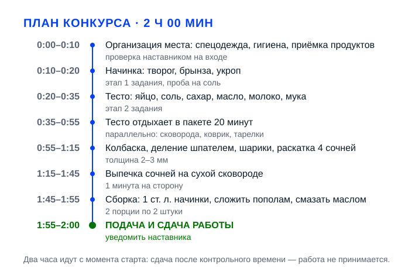
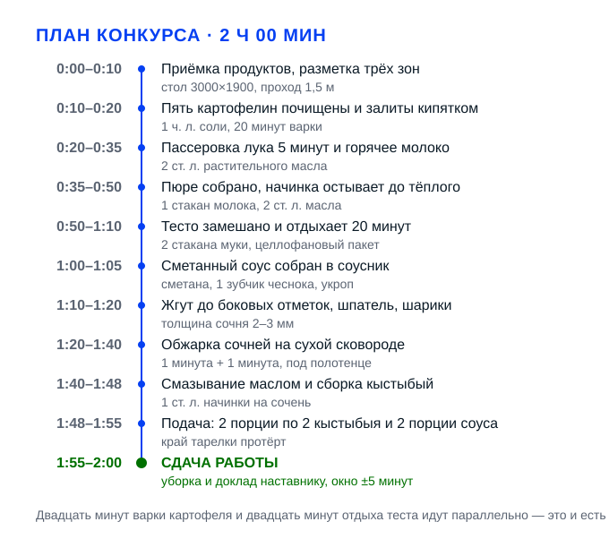
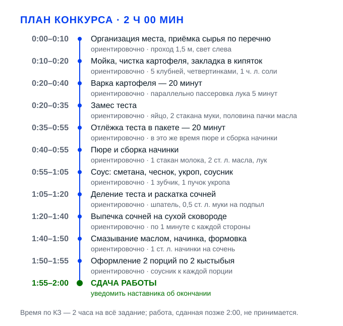

Приготовление кыстыбый (ФВ)
Задания ниже — официальные файлы «Абилимпикс» (источник: abilympics-russia.ru), разложенные по категориям. Решения написаны по тексту задания, регламенту и критериям оценки; в них указано, что именно проверяет эксперт.
Школьник
14–16 лет, базовый уровень заданияВ официальном файле категории не разделены отдельными разделами — приводим задание целиком; различия по категориям смотрите в таблице модулей.
Пошаговое решение
Задание школьников по компетенции «Приготовление кыстыбый» укладывается в два часа и состоит из трёх переходов: начинка из творога, брынзы и зелени укропа, пресное тесто на двух стаканах муки и выпечка сочней на сухой сковороде. На выходе нужны две порции, в каждой по два кыстыбыя, — четыре тонкие лепёшки, сложенные пополам с ложкой начинки, смазанные сливочным маслом и поданные тёплыми. Продукты выданы в одном количестве, поэтому права на передел нет: тесто замешивается один раз, начинка солится один раз, и обе ошибки становятся видны только на сковороде. Порядок работы при этом можно менять: тесто может отдыхать двадцать минут, пока вы занимаетесь начинкой, и это единственный способ уложиться в хронометраж без спешки. Исход решают три вещи: тесто, которое не рвётся на сгибе, одинаковая толщина сочней и чистый край тарелки на подаче.

Задача 1. Организовать рабочее место и подготовить продуктыСтарт · 0:00–0:10 из 120 минут
До первого движения ножом бокс должен быть разложен по зонам, руки и форма приведены в порядок, а творог, брынза и укроп проверены и подготовлены к работе. Это самые дешёвые минуты всего конкурса: всё, что вы разложите сейчас, вы найдёте потом без поиска, а всё, что пропустите, придётся искать в спешке уже с тестом на руках. Задание школьников состоит всего из трёх переходов — начинка, тесто, выпечка, — поэтому беспорядок на столе бьёт сразу по всем трём.
Действие 1.1. Войти в бокс по правилам
Шаг 1.1.1
Надеваем фартук или куртку, головной убор и закрытую обувь на нескользящей подошве. Волосы убираем под колпак целиком — и спереди, и на затылке, — потому что при наклоне над сковородой выбившаяся прядь оказывается ровно над сочнем. Рукава подворачиваем выше локтя: длинный рукав касается теста, цепляется за ручку сковороды и тянет за собой миску. Фартук завязываем так, чтобы он закрывал грудь, но не свисал в миску с начинкой.
Санитарные требования и внешний вид участника проверяются не отдельной формальностью в конце, а с первой минуты, и эксперт фиксирует их по ходу всей работы. Волос в кыстыбый или след от кольца на тесте — нарушение, которое не компенсируется ни вкусом, ни аккуратной подачей. Плюс чистая форма задаёт ритм: участник, разобравшийся с собой за минуту, дальше не отвлекается на поправки и не тратит время модуля на посторонние дела.
Попросите волонтёра или соседа посмотреть на вас со спины: волос не видно ни спереди, ни сзади, колпак держится, куртка застёгнута, обувь закрытая и сухая. Рукава не спускаются ниже локтя — проверьте, подняв руки над столом, как будто ставите сковороду. Фартук не касается поверхности стола при наклоне.
Классическая ошибка — надеть колпак на макушку, оставив затылок открытым: спереди картинка идеальная, а сзади волосы выбиваются ровно в тот момент, когда вы наклоняетесь над миской с мукой. Вторая — прийти в кроссовках с гладкой подошвой: пол у плиты после первой партии сочней скользкий, а падение с горячей сковородой в руке — не баллы, а травма.
Эксперт смотрит на форму до сигнала, а потом возвращается к ней взглядом по ходу работы: пятна на груди и мука на рукавах к середине конкурса считаются так же строго, как на входе.
Шаг 1.1.2
Моем руки с мылом до запястий, не меньше двадцати секунд, не забывая большие пальцы и промежутки между пальцами, вытираем одноразовым полотенцем и выбрасываем его сразу. Снимаем часы, кольца, браслеты и длинные серьги, проверяем ногти: коротко, без лака и покрытия. Руки моем повторно после каждой операции с жирным или сырым продуктом, после работы с зеленью и после того, как поправили колпак.
Гигиена рук — первое, что видит эксперт, и первое, что влияет на безопасность блюда: творог и брынза не проходят тепловую обработку, они идут в кыстыбый сырыми, поэтому всё, что было на руках, окажется в тарелке. Кроме того, жирные руки оставляют следы на тесте, а тесто для кыстыбый тонкое — отпечатки видны и на раскатанном сочне, и на готовом изделии. Для категории школьников это ещё и вопрос привычки, которую эксперт отмечает отдельно.
Руки сухие, полотенце использованное и сразу выброшено, а не лежит на столе. Украшений нет, ногти короткие. Проверить себя просто: если вы только что распаковывали брынзу и теперь берёте скалку — руки надо помыть, даже если внешне они чистые. Это правило работает на всей дистанции: сырое, жирное, убранное — мой руки.
Самая частая ошибка — вытереть руки о фартук: визуально они сухие, но фартук становится переносчиком, и это видно по пятнам. Вторая — помыть руки один раз на входе и считать вопрос закрытым. Третья — трогать лицо и колпак руками после масла, а потом брать тесто: на сочне остаётся жирное пятно, оно при выпечке темнеет.
Эксперт оценивает руки в динамике: на входе он проверяет только отсутствие украшений и короткие ногти, а дальше смотрит, моет ли участник руки после жира и сырья и нет ли следов масла на тесте к формовке.
Действие 1.2. Разложить посуду и инвентарь по зонам
Шаг 1.2.1
Собираем зону начинки: миска для смешивания, тёрка, разделочная доска, нож, чайная и столовая ложки. Тёрку кладём на доску, а не просто на стол, — брынза крошится, и мелкие кусочки разлетаются по поверхности. Миску ставим слева, если вы правша, чтобы натёртая брынза падала в неё, а не мимо. Плиту при этом ставим так, чтобы к ней был свободный подход с двух сторон, а пакет для отходов вешаем у края стола.
Начинка готовится первой, потому что ей нужно постоять и пропитаться, пока отдыхает тесто, — это позволяет не терять двадцать минут ожидания. Разложенная заранее зона экономит движения: натирание брынзы занимает пару минут, но только если тёрка и миска уже на месте. Порядок на этом участке напрямую влияет на оценку организации рабочего места, а рассыпанная по столу брынза создаёт грязь, которую придётся убирать в ущерб времени.
На столе перед вами должны поместиться, не мешая друг другу, тёрка, миска, доска и нож. Проверьте, что доска не скользит: подложите под неё влажное полотенце или используйте доску с силиконовыми ножками. Миска стоит устойчиво и не касается края стола — при перемешивании её легко столкнуть.
Ошибка — натирать брынзу над общей миской, где уже лежит творог: крошка летит на стол, а творог от тёплой руки начинает отдавать сыворотку. Вторая — резать укроп на той же доске, где только что была брынза, не сполоснув её: зелень собирает крошки и выглядит грязной в начинке.
Эксперт смотрит на зону начинки в первые минуты: всё ли под рукой, отдельно ли отходы и не стоит ли что-то на том месте, где через десять минут будет тесто.
Шаг 1.2.2
Раскладываем зону теста и зону выпечки, потому что это два разных по температуре участка. Для теста нужны миска, венчик, сито, стакан, чайная и столовая ложки, кастрюля для масла; для выпечки — скалка, силиконовый коврик с разметкой, кондитерский шпатель, кисточка для масла, лопатка, сковорода, плоские тарелки и вафельное полотенце. Полотенце складываем вдвое и кладём рядом со сковородой, а не на дальний край стола, иначе первые сочни остынут, пока вы до него дойдёте. Миску для растопленного масла ставим отдельно, чтобы в неё не попадала мука.
Сочни после сковороды нужно моментально укрыть полотенцем: без этого они пересыхают и ломаются при складывании, а кыстыбый с трещиной по сгибу — уже брак по внешнему виду. Кисточка и растопленное масло должны стоять рядом, потому что смазывать сочни надо горячими, пока они держат пар. Разделение зон на холодную, где тесто, и горячую, где сковорода, снижает риск, что мука попадёт на раскалённую поверхность, а брызги масла — в муку.
Проверьте, что коврик с разметкой лежит ровно, шпатель и скалка под рукой, полотенце сухое и чистое, кисточка сухая. Сковорода стоит на плите и пока пустая, масло ещё не растоплено. Всё, что нужно для выпечки, находится в пределах одного шага от плиты.
Частая ошибка — положить полотенце под сковороду или на неё: ткань касается горячей поверхности и подгорает, а запах гари остаётся в боксе до конца конкурса. Вторая — взять для сочней бумажное полотенце вместо вафельного: бумага прилипает к горячему тесту и отрывается клочьями.
Эксперт проверяет, продумана ли последовательность: коврик, полотенце и кисточка должны быть на месте до первой выпечки, а не появляться в спешке между сочнями.
Действие 1.3. Принять продукты и проверить их качество
Шаг 1.3.1
Сверяем набор продуктов с перечнем: пачка творога, пачка брынзы, пучок укропа, одно яйцо, два стакана муки, половина пачки сливочного масла, чайная ложка соли, столовая ложка сахара, половина стакана молока. Отдельно проверяем посуду: пять плоских тарелок, две чайные и две столовые ложки, один стакан, доска, тёрка, венчик, сито, скалка, коврик, шпатель, кисточка, лопатка, целлофановый пакет. Расхождения отмечаем сразу — чего нет и в каком количестве.
Приёмка — единственный момент, когда недостающее ещё можно получить: после старта замена идёт только через главного эксперта, и то если причина будет признана уважительной. Два стакана муки и половина стакана молока — это не «примерно», а рабочий рецепт теста, и если молока окажется меньше, тесто выйдет круче, а сочни будут рваться при складывании. Проверка посуды тоже не формальность: без второй ложки вы потеряете ритм на формовке.
Все строки перечня отмечены, число тарелок и ложек совпадает, упаковки целые. Если сомневаетесь в объёме — отмерьте стаканом сразу, до начала работы: половина стакана молока это примерно сто миллилитров, два стакана муки — около трёхсот двадцати граммов. Расхождение записывайте на бумаге, а не держите в голове.
Самая частая ошибка — начать с готовки, не сверив набор, и обнаружить отсутствие соли или масла в середине замеса. Вторая — заметить, что чего-то меньше, и промолчать, решив «обойдусь»: в тесте это видно сразу, а заменить продукт после старта почти невозможно.
Эксперт по организации смотрит, работал ли участник по перечню, и фиксирует, отмечены ли расхождения до старта, а не обнаружены уже в середине замеса.
Шаг 1.3.2
Проверяем качество каждого продукта до начала работы. Творог смотрим на цвет и запах: он должен быть белым или слегка кремовым, без кислого запаха, без желтизны и без большого количества отделившейся мутной сыворотки. Брынзу пробуем на соль — она бывает очень солёной, и тогда начинку не досаливаем вовсе. Укроп перебираем: вялые и желтеющие веточки убираем, стебли должны быть упругими и ломаться с хрустом. Сливочное масло должно быть холодным и без прогорклого запаха, яйцо — целым и чистым.
Творог и брынза в этом блюде не варятся, поэтому их качество определяет и вкус, и безопасность: подкисший творог даст неприятную кислинку, которую не перебьёт ни укроп, ни масло. Соль брынзы — отдельный фактор: в начинке два солёных компонента, и если не попробовать брынзу заранее, легко получить пересол, а исправить его в готовой начинке нечем. Укроп с желтизной темнеет и портит вид готового кыстыбый: зелень видна через тонкое тесто.
Проверьте три признака по каждому продукту: цвет, запах, консистенцию. Творог не растекается в миске и не пахнет дрожжами; брынза крошится, а не мажется; укроп хрустит при отламывании стебля; масло не липнет к упаковке. Если что-то вызывает сомнение — отложите в сторону и идите к эксперту до старта.
Опасная ошибка — использовать творог с отделившейся сывороткой, решив, что «в начинке не видно»: в кыстыбый видно всё, а кислый вкус эксперт почувствует первым. Вторая — не попробовать брынзу и досолить начинку по привычке: пересоленная начинка в тонком тесте ощущается очень резко и снимает оценку за вкус.
Эксперт следит, осматривал ли участник каждый продукт до работы и что он сделал с сомнительным: молчаливое использование подозрительного творога фиксируется как нарушение санитарных требований.
Шаг 1.3.3
Раскладываем продукты по зонам соответственно тому, когда они понадобятся: творог и брынзу — к зоне начинки, муку — в миску под сито, молоко и яйцо — рядом с миской для теста, масло — в кастрюлю для растопки или пока в упаковке на прохладный край стола. Скоропортящееся до начала работы держим в холоде, а не на столе: творог и брынза должны оставаться холодными до момента смешивания. Укроп моем непосредственно перед нарезкой, а не заранее, иначе он завянет за час.
Порядок продуктов на столе — это порядок операций: сначала начинка, потом тесто, потом выпечка, поэтому мука и молоко не должны мешать работать с творогом. Творог, простоявший час в тепле, начинает киснуть и отдавать сыворотку, и начинка «поплывёт» — при складывании она вытечет на сгиб и испортит вид. Укроп, вымытый заранее и оставшийся мокрым, теряет аромат и делается скользким, а мокрые стебли плохо режутся.
Творог и брынза холодные на ощупь, упаковки закрыты или продукты накрыты. Укроп сухой, лежит на доске, а не в луже воды. Мука в отдельной миске, сито рядом, молоко отмерено в стакан. На столе нет ничего, что вы не будете использовать в ближайшие полчаса.
Ошибка — выложить весь творог в миску сразу и оставить на столе на час: к моменту формовки он становится тёплым и текучим, начинка выдавливается из кыстыбый. Вторая — помыть укроп заранее и оставить мокрым в миске: он завянет, а вода с зелени попадёт в начинку и сделает её жидкой.
Эксперт следит за температурой скоропортящихся продуктов всю работу: холодные творог и брынза к моменту смешивания для него признак соблюдённого режима, тёплые — нарушения.
Задача 2. Приготовить начинку из творога, брынзы и укропаЭтап 1 задания · начинка на 4 кыстыбыя
Начинка делается первой по двум причинам: она должна постоять, чтобы укроп отдал аромат, и она не требует плиты, то есть её можно сделать, пока вы ещё свежи и не отвлекаетесь на сковороду. По заданию в начинку идут три компонента — творог, брынза и зелень укропа, и никакой тепловой обработки: всё смешивается сырым, поэтому чистота рук и инвентаря здесь важнее, чем где-либо ещё. От консистенции начинки зависит, будет ли кыстыбый держать форму: слишком влажная вытечет на сгиб, слишком сухая не прилипнет к сочню.
Действие 2.1. Распаковать продукты и натереть брынзу
Шаг 2.1.1
Вскрываем пачку творога и пачку брынзы аккуратно, над миской или над доской, а не над полом: брынза часто лежит в рассоле, и при резком движении жидкость выплёскивается. Пачку творога разрезаем или отрываем по верхнему краю, стараясь не мять содержимое. Рассол с брынзы сливаем в отдельную чашку или в раковину, но не в миску с творогом. Упаковки не выбрасываем сразу — на них указан вес, и по нему удобно понять, сколько у вас продукта.
Аккуратное вскрытие — не педантизм: рассол, попавший в творог, сразу делает начинку жидкой, и вернуть ей нужную консистенцию можно только добавлением муки или сухарей, которых в задании нет. Кроме того, учитывается бережное обращение с продуктами: половина брынзы, уехавшая на пол, — это уже не хватает начинки на четыре кыстыбыя. Вес на упаковке нужен для пропорции: если творога и брынзы примерно по двести граммов, солить смесь не нужно.
Рассол слит полностью, творог не разбавлен жидкостью, обе упаковки вскрыты ровно по краю, продукт не размазан по столу. Проверьте вес на упаковке и прикиньте соотношение: творога и брынзы примерно поровну — это рабочая пропорция для начинки, где брынза даёт соль и плотность, а творог мягкость.
Ошибка — вскрыть пачку брынзы над общей миской: рассол стекает прямо в творог, и начинка становится текучей. Вторая — выбросить упаковку, не посмотрев вес, и потом гадать, почему начинки получилось мало или она слишком солёная.
Эксперт смотрит на бережность: ровно вскрытая упаковка и сухой стол читаются как навык, а разлитый по столу рассол — как спешка и потеря продукта, которую он учитывает при оценке организации.
Шаг 2.1.2
Натираем брынзу: берём кусок так, чтобы пальцы были сверху и сзади, а не перед отверстиями, и ведём им по тёрке короткими движениями сверху вниз, примерно по десять сантиметров. Тёрку держим наклонно, под углом около сорока пяти градусов, и ставим на доску, чтобы стружка падала вниз, а не летела по столу. Не давим сильно — брынза мягкая и при излишнем усилии мажется. Кусок размером с два пальца дотираем, держа за самый край, либо оставляем — пальцы дороже.
Короткие движения и умеренное давление дают ровную стружку без пасты: брынза должна крошиться, а не течь. Безопасность здесь конкретная: крупные отверстия снимают кожу с костяшек быстро и незаметно, а порез в начале работы означает, что дальше вы будете готовить одной рукой. Остаток, который уже опасно держать, лучше оставить: потеря двадцати граммов на начинку из четырёх кыстыбыя не влияет, а порез влияет на всё задание.
Брынза натёрта рыхлой стружкой, в ней нет кусков больше сантиметра и нет пасты. Проверьте пальцами: стружка рассыпается, а не липнет комком. На тёрке не осталось нетронутых зон, доска под ней сухая, пальцы целы.
Ошибка — давить на брынзу всей ладонью, разгоняя её по тёрке: вместо стружки получается мазь, которая мгновенно делает начинку влажной. Вторая — тереть до самого конца, придерживая кусок кончиками пальцев: почти всегда заканчивается порезом и остановкой работы.
Эксперт следит за хватом и темпом у тёрки: пальцы должны быть сверху и сзади, движения короткими, иначе брынза мажется, а костяшки оказываются у отверстий.
Действие 2.2. Соединить творог и брынзу
Шаг 2.2.1
Перекладываем творог в миску к натёртой брынзе столовой ложкой, а не руками: ложка не уплотняет творог и не вносит в него тепло и жир с ладоней. Если творог крупнозернистый и сухой, разминаем его ложкой прямо в миске, прижимая к стенке, — до состояния, когда крупинки ещё различимы, но масса уже связная. Перемешиваем круговыми движениями от центра к краям, поднимая слои снизу вверх, чтобы брынза распределилась равномерно, а не осталась на дне.
Творог и брынза должны образовать однородную массу, потому что при формовке начинка должна ложиться ровным слоем и не расслаиваться: если брынза соберётся на дне, первые кыстыбыя получатся пресными, а последние пересоленными. Ложка вместо рук — это и гигиена, и температура: тёплые руки делают творог текучим, а начинка должна оставаться плотной. Разминание до связной массы нужно, чтобы комочки творога не выдавливались сквозь тонкое тесто.
Масса однородная по цвету, без белых островков творога и без комков брынзы. Проведите ложкой по дну: там не должно оставаться слоя брынзы. Консистенция такая, что ложка оставляет след, который медленно заплывает, но масса не растекается по миске.
Ошибка — смешать быстро, двумя движениями: брынза остаётся внизу, и начинка получается неравномерной. Вторая — разминать творог руками: масса становится тёплой и липкой, а при формовке начинка начинает сползать с сочня.
Эксперт смотрит на однородность массы и на инструмент: ложка вместо рук — признак понимания технологии, а комки брынзы на дне миски видны и на разрезе готового изделия.
Шаг 2.2.2
Оцениваем консистенцию и вкус смеси до того, как добавим зелень. Возьмите немного на кончик чайной ложки и попробуйте: если брынза очень солёная, начинку не солим вообще; если смесь кажется сухой и рассыпается, добавьте столовую ложку творога, если есть остаток, но не масла и не молока. Если творог дал много сыворотки и масса течёт, откиньте её на сито на пару минут или слейте жидкость с края миски, наклонив её. После пробы накройте миску и уберите в холод до момента использования.
Проба на этом этапе — единственный шанс поймать пересол: после введения укропа и выстаивания начинка станет только солонее, а исправить это нечем, потому что разбавлять и промывать нельзя. Консистенция определяет, сколько начинки удержит сочень: жидкая при складывании вытекает на сгиб, и кыстыбый получается с мокрым швом. Накрытая и охлаждённая начинка не отдаёт влагу в тесто, пока вы заняты замесом.
Начинка держит форму горки на ложке, не стекает струёй, на вкус соль ощущается как умеренная, с расчётом на то, что дальше добавится укроп. Жидкости на дне миски нет. Миска накрыта, стоит в холоде, а не на тёплом столе рядом с плитой.
Ошибка — не пробовать смесь и досолить на глазок: с брынзой легко уйти в пересол, а в кыстыбый это чувствуется резче, чем в салате. Вторая — оставить начинку на столе открытой: она заветривается сверху и покрывается подсохшей корочкой, которая потом даёт комки.
Эксперт обращает внимание, пробует ли участник смесь по ходу работы: проба при эксперте засчитывается как понимание технологии, а не как лишнее действие.
Действие 2.3. Подготовить и нарезать укроп
Шаг 2.3.1
Перебираем пучок укропа: убираем пожелтевшие и вялые веточки, а также грубые нижние части стеблей, которые жёсткие и не разжуются в начинке. Отделяем тонкие веточки от толстых: тонкие режутся легче и дают более нежную нарезку. Ополаскиваем укроп, погружая пучок в миску с водой и встряхивая, чтобы песок осел на дно, затем промываем под проточной водой, держа за стебли. Вымытый пучок промакиваем на полотенце: мокрая зелень скользит на доске и разжижает начинку.
Укроп в этом блюде — не только вкус, но и цвет: начинка белая, и зелень видна в ней через тонкое тесто, поэтому жёлтые и подгнившие веточки сразу бросаются в глаза. Двойное промывание нужно из-за песка: он оседает на зубах, и один такой кусочек в кыстыбый перечёркивает впечатление от блюда. Грубые стебли, оставленные в нарезке, дают волокна, которые не пережёвываются, и эксперт отмечает грубую текстуру начинки.
Вода после первого промывания прозрачная или слегка мутная, но без песка на дне. На доске нет жёлтых листьев. Пучок упругий, стебли ломаются с хрустом, а не гнутся. Проверьте нижнюю часть пучка: если она загрязнена сильнее, срежьте её на сантиметр и выбросьте.
Ошибка — мыть укроп целиком под слабой струёй, не разбирая пучок: внутри веток остаётся песок, и он попадает в начинку. Вторая — использовать весь пучок вместе с толстыми стеблями «чтобы не переводить продукт»: в нарезке остаются жёсткие волокна, которые портят текстуру.
Эксперт смотрит на воду в миске после промывки: мутная, с песком на дне — признак того, что укроп промыли один раз и наспех, а жёлтые веточки на доске он видит сразу.
Шаг 2.3.2
Нарезаем укроп на разделочной доске острым ножом: собираем веточки в компактный пучок, прижимаем левой рукой, согнув пальцы когтем так, чтобы кончики были убраны, и рубим короткими движениями с покачиванием ножа. Сначала нарезаем стебли, затем листья, добиваясь размера кусочков около двух-трёх миллиметров. Не рубим слишком мелко в пыль: такая нарезка окисляется и темнеет. Готовую нарезку сразу перекладываем в миску с творогом и брынзой, не оставляя её на доске.
Кусочки в два-три миллиметра — оптимальный размер: они видны в начинке и дают аромат при укусе, но не создают волокон. Слишком мелкая нарезка теряет сок и темнеет за время работы, а слишком крупная делает начинку неоднородной и мешает складывать сочень ровно. Приём когтем — базовая техника безопасности: кончики пальцев убраны, но нож при этом режет ровно, а не пилит зелень. Убирать нарезку сразу нужно потому, что на воздухе укроп вянет.
Нарезка однородная: нет веточек длиннее сантиметра и нет зелёной кашицы. На доске не осталось непрорезанных стеблей. Пальцы целы, нож режет, а не давит — если зелень мнётся, нож затуплен, и его надо заменить.
Ошибка — держать пучок вытянутыми пальцами: почти гарантированный порез, причём в самом начале работы. Вторая — рубить укроп заранее и оставить его на доске на полчаса: он вянет, темнеет, и в начинке видны бурые пятна. Третья — резать укроп на доске, где лежала брынза, не сполоснув её.
Эксперт фиксирует положение рук при нарезке и остроту ножа: ровные кусочки в два-три миллиметра и целые пальцы говорят о поставленной технике, а мятая зелень — о тупом ноже.
Действие 2.4. Ввести зелень и довести начинку до готовности
Шаг 2.4.1
Перекладываем нарезку в миску с творожно-брынзовой смесью и перемешиваем столовой ложкой, разворачивая массу от стенок к центру, пока зелень не распределится равномерно. Проверяем на соль ещё раз и только после этого принимаем решение: если брынза солёная, не добавляем ничего; если смесь кажется пресной, добавляем щепотку соли, но не больше четверти чайной ложки на всю миску. Перец и другие специи в задании не предусмотрены, поэтому не вводим их от себя.
Равномерное распределение укропа — это внешний вид готового кыстыбый: зелень видна в начинке через тонкое тесто, и если она собралась в одном месте, изделие выглядит небрежно. Повторная проба на соль нужна потому, что зелень добавляет свой вкус, а пересол проще не допустить, чем исправить. Отказ от своих специй — требование задания: состав начинки зафиксирован, лишний компонент считают отклонением от рецептуры.
Зелень распределена по всей массе, а не лежит слоем. На вкус соль умеренная, зелень чувствуется, но не перебивает творог. Масса однородная по цвету: белая с равномерными зелёными вкраплениями. Если укроп собрался комками, перемешайте ещё раз, разминая комки ложкой о стенку.
Ошибка — добавить зелень и не перемешать как следует: в готовом кыстыбый на сгибе оказывается пучок укропа, а остальная начинка белая. Вторая — досолить по привычке, не учитывая брынзу: начинка получается резко солёной, и это первое, что эксперт отметит на дегустации.
Эксперт пробует начинку в готовом изделии и смотрит разрез: зелень должна быть распределена по всей массе, а не собрана с одного края, иначе на сгибе виден пучок укропа.
Шаг 2.4.2
Накрываем миску с начинкой плоской тарелкой или плёнкой и убираем в холод до момента формовки, но не в морозильник. Перед использованием достаём заранее, за десять-пятнадцать минут, чтобы начинка не была ледяной: холодная масса плохо ложится на горячий сочень и хуже схватывается. Если холода рядом нет, ставим миску в прохладное место в тени, подальше от плиты, и накрываем влажным полотенцем, чтобы поверхность не заветрилась.
Начинке нужно постоять хотя бы пятнадцать-двадцать минут: укроп отдаёт аромат в творожную массу, соль распределяется равномерно, а сама масса становится плотнее и лучше держится на сочне. Без выдержки первое изделие всегда получается пустым на вкус, а последнее уже насыщенным, и на дегустации разница между двумя кыстыбыя одной порции заметна. Накрытая миска защищает от заветривания: подсохшая корочка потом не разминается и остаётся комками.
Начинка холодная, но не ледяная, поверхность не заветрилась, на стенках миски нет подсохших следов. Проверьте через двадцать минут: масса должна стать чуть плотнее, чем была, а запах более выраженным. Если на поверхности выступила жидкость, аккуратно снимите её ложкой, не перемешивая.
Ошибка — оставить начинку на столе открытой на всё время работы: к формовке она заветривается и делается жидкой от тепла. Вторая — достать начинку из холода в последний момент и формовать ледяной: сочень остывает, кыстыбый получается холодным уже на подаче.
Эксперт проверяет, накрыта ли миска и где она стоит: на тёплом краю стола у плиты начинка портится быстрее всего, а холод ей нужен до самой формовки, и это он отмечает по температуре при накладывании.
Задача 3. Замесить тесто для кыстыбыйЭтап 2 задания · тесто из 2 стаканов муки
Тесто для кыстыбый пресное, то есть без дрожжей: его задача — быть тонким, эластичным и не рваться на сгибе. Набор продуктов короткий и точный: одно яйцо, два стакана муки, половина стакана молока, чайная ложка соли, столовая ложка сахара и половина пачки сливочного масла, из которой две столовые ложки идут в тесто, а остальное — на смазывание сочней. Ошибка в этом модуле не видна сразу: тесто, замешанное круто, выглядит нормально, но первые же сочни трескаются при складывании, и исправить это в середине работы почти невозможно.
Действие 3.1. Подготовить яичную основу
Шаг 3.1.1
Берём одно яйцо, моем его под проточной водой с мылом и обсушиваем, потому что на скорлупе могут оставаться загрязнения, а разбиваем мы его о край миски, а не о стол. Разбиваем уверенно: один удар о бортик, затем разводим половинки большими пальцами над миской, стараясь не раздавить желток. Скорлупу сразу выбрасываем в отходы, а не оставляем на столе. Если в миску попал кусочек скорлупы, вынимаем его второй половинкой или ложкой, а не пальцем.
Мытьё яйца — требование санитарных норм, которые оцениваются в этом задании отдельно: содержимое скорлупы может нести сальмонеллу, и при разбивании она попадает в тесто, которое потом только обжаривается на сухой сковороде, без глубокой тепловой обработки. Разбивание о бортик, а не о стол, даёт ровную трещину без осколков. Целое яйцо важно и технологически: желток даёт тесту эластичность, и если он размазан по скорлупе, часть его теряется.
Желток целый, скорлупы в миске нет, белок не растекается по столу. Проверьте яйцо до разбивания: если скорлупа треснула или есть сомнение в свежести, лучше сразу сказать эксперту и попросить замену, чем вводить его в тесто.
Частая ошибка — разбить яйцо о край стола и потом собирать осколки из миски: мелкие кусочки скорлупы не видны в тесте, но чувствуются на зубах. Вторая — выбросить скорлупу на рабочую поверхность: она скользит, пачкает стол и путается под руками при раскатке.
Эксперт фиксирует работу с яйцом: мытое яйцо, целый желток и отсутствие скорлупы в миске для него маркер всей дальнейшей работы с тестом, а скорлупа на столе — признак небрежности.
Шаг 3.1.2
Добавляем в миску к яйцу чайную ложку соли и столовую ложку сахара. Соль берём без горки, но и не «на кончике»: чайная ложка соли — это примерно шесть-семь граммов, и именно столько нужно, чтобы тесто не было пресным, но и не отдавало солью. Сахар — столовая ложка без горки: он не делает тесто сладким, а работает на цвет и эластичность, поэтому уменьшать его нельзя, а увеличивать не нужно. Сыпучие добавляем в одну точку, а не по всей поверхности, чтобы было видно, сколько уже всыпано.
Соль и сахар — единственные вкусовые компоненты теста, и их количество в задании задано точно: отклонение в сторону недосола заметно: начинка солёная от брынзы, и тесто на её фоне кажется пресным, что ломает баланс вкуса. Сахар нужен для того, чтобы при обжарке на сухой сковороде появились светлые пятна, по которым определяют готовность сочня. Добавление в одну точку — про самоконтроль: видно, что ни соль, ни сахар не просыпаны дважды.
В миске видны две чёткие горки — соль и сахар, ложки лежат рядом и не валяются в муке. Пальцем попробуйте щепотку смеси с края: она должна быть ощутимо солёной с лёгкой сладостью. Если соль просыпалась мимо, посчитайте заново, а не добавляйте на глаз.
Ошибка — сыпать «по памяти» и потерять счёт: двойная соль делает тесто непригодным, а в пресном тесте это чувствуется сразу, и переделать его уже нечем, потому что продукты в задании выданы в одном количестве. Вторая — положить сахар с горкой, рассчитывая, что тесто станет вкуснее: сочни темнеют при обжарке быстрее и выглядят подгоревшими.
Эксперт смотрит, отмеряет ли участник ложками или сыплет из пачки: второе почти всегда даёт отклонение по соли, а баланс теста он оценивает на дегустации.
Шаг 3.1.3
Взбиваем яйцо с солью и сахаром венчиком: держим венчик вертикально, работаем кистью, а не всей рукой, и делаем круговые движения с небольшой амплитудой в течение тридцати-сорока секунд. Смесь должна стать однородной и слегка светлее, с мелкими пузырьками по краю, но не превращаться в плотную пену. Миску при этом придерживаем второй рукой или подкладываем под неё влажное полотенце, чтобы она не ездила по столу.
Взбивание распределяет соль и сахар по всей массе: если они останутся крупинками, в готовом сочне попадаются солёные и сладкие точки, а на сгибе такие места темнеют. Лёгкая воздушность смеси помогает тесту подниматься пузырями на сковороде, и именно по этим пузырям определяют, что сочень пора переворачивать. Устойчивая миска — про чистоту: при ездящей миске смесь выплёскивается, начинать приходится заново, а второй порции продуктов нет.
Смесь однородная по цвету, без крупинок сахара на дне и без плёнки соли по стенкам. Проведите венчиком по дну: не должно быть нерастворённых кристаллов. Пены быть не должно — если она поднялась шапкой, дайте постоять минуту и перемешайте.
Ошибка — взбивать двумя-тремя движениями: соль остаётся на дне, и в одном сочне она чувствуется, а в другом нет. Вторая — взбивать до плотной пены: тесто получается с крупными воздушными порами, при раскатке рвётся, и сочень выходит с дырками.
Эксперт обращает внимание на технику взбивания и на устойчивость миски: брызги по столу и нерастворённые крупинки соли он отмечает ещё до введения муки.
Действие 3.2. Растопить масло и ввести его с молоком
Шаг 3.2.1
Отрезаем от половины пачки сливочного масла две столовые ложки и кладём их в маленькую кастрюлю, остальное масло оставляем на смазывание сочней. Масло режем на куски толщиной около сантиметра, чтобы оно растопилось равномерно, а не горело сверху. Кастрюлю ставим на плиту, включаем средний или чуть ниже среднего огонь. Не растапливаем масло на максимальном огне и не оставляем без присмотра даже на минуту.
Растопленное масло в тесте — это пластичность: оно обволакивает частицы муки и не даёт клейковине стягиваться, поэтому сочень остаётся мягким после сковороды и не ломается при складывании. Две ложки из половины пачки — баланс: если влить больше, тесто станет жирным и будет рваться при раскатке, если меньше — сочни выйдут жёсткими. Куски одинаковой толщины и умеренный огонь нужны потому, что масло быстро переходит в подгоревшее.
Масло полностью жидкое, но не кипит и не темнеет. На дне нет коричневого осадка, запах сливочный, без горечи. Проверьте ложкой: масло стекает ровной струёй. Если появился тёмный осадок, масло перегрето, и его лучше не использовать.
Ошибка — поставить кастрюлю на сильный огонь: масло закипает, пенится и подгорает, а испорченное масло уже не спасти, второй половины пачки хватит только на смазывание. Вторая — отрезать масло крупным куском: снаружи оно уже коричневое, внутри ещё твёрдое.
Эксперт смотрит на цвет масла и на огонь: потемневшее масло он отмечает ещё до того, как оно попадёт в тесто, а подгоревшее видно и в готовом сочне по тёмным точкам.
Шаг 3.2.2
Снимаем кастрюлю с маслом с плиты и даём ему полминуты остыть, затем отмеряем две столовые ложки и вливаем в яичную смесь тонкой струйкой, непрерывно помешивая венчиком. Вливаем именно в смесь, а не наоборот: горячее масло, вылитое одним движением, сворачивает белок хлопьями. Потом вливаем половину стакана молока комнатной температуры и снова перемешиваем до однородности. Кастрюлю убираем и выключаем конфорку, чтобы не занимала руки.
Масло, введённое тонкой струйкой при постоянном помешивании, распределяется по смеси равномерно и не сворачивает яйцо; хлопья белка потом видны в тесте светлыми точками и дают неровную текстуру сочня. Молоко разбавляет смесь до нужной влажности: на двух стаканах муки половина стакана жидкости даёт тесто, которое раскатывается в два-три миллиметра и не липнет к скалке. Холодное молоко делает тесто неоднородным, поэтому его лучше достать заранее.
Смесь однородная, кремового цвета, без хлопьев белка и без масляных пятен на поверхности. Проверьте, проведя ложкой по дну: не должно быть слоя масла. Объём смеси заметно вырос по сравнению с одним яйцом — примерно до половины стакана и больше.
Ошибка — влить всё масло сразу: яйцо сворачивается, и в тесте остаются белковые комочки, которые не разминаются. Вторая — налить молоко прямо из пакета «на глаз»: если жидкости больше половины стакана, тесто придётся укреплять мукой, которой нет в запасе.
Эксперт фиксирует, влито ли масло струйкой и помешано ли сразу: хлопья белка в тесте заметны на просвет, а холодное молоко он тоже отмечает по неоднородности замеса.
Действие 3.3. Просеять муку и замесить тесто
Шаг 3.3.1
Ставим сито на чистую миску и всыпаем в него два стакана муки, отмеренных с горкой и снятых ножом вровень с краем. Просеиваем, постукивая по ободу ладонью или покачивая сито, — мука должна падать в миску рыхлым облаком, а не высыпаться комом. Отруби и крупные комочки, оставшиеся в сите, выбрасываем. Просейте всю муку сразу, до последней горсти: недосеянная часть пойдёт в тесто комками.
Просеивание — не формальность: мука при хранении слёживается, и комочки, попавшие в тесто, при раскатке превращаются в плотные светлые пятна, которые видны на готовом сочне и чувствуются на вкус. Просеянная мука насыщается воздухом, тесто поднимается ровнее и получается мягче при том же количестве продукта. Два стакана — это примерно триста двадцать граммов: при избытке муки тесто становится крутым и рвётся при складывании.
Мука в миске рыхлая, без комков, объём её примерно соответствует двум стаканам. Проведите по слою пальцем: бороздка должна оставаться, а не заплывать. В сите не осталось муки, кроме отрубей. На столе вокруг миски сухо — просыпанную муку сразу убирайте, иначе она попадёт на коврик.
Ошибка — сыпать муку в миску прямо из пакета, минуя сито: комочки в тесте видны на готовом изделии и не разминаются при замесе. Вторая — просеять только часть муки, решив, что остаток «и так нормальный»: именно нижний слой в пакете самый слёжанный.
Эксперт смотрит, просеяна ли вся мука: комочки видны на раскатанном пласте светлыми точками, а мука, разлетевшаяся по столу, читается как спешка и как потеря продукта.
Шаг 3.3.2
Вводим просеянную муку в яично-масляную смесь столовой ложкой, а не высыпаем всю сразу: добавляем примерно треть, перемешиваем, затем ещё треть и так далее. Ложкой работаем от центра к краям, подгребая муку с боков и разворачивая массу. Когда тесто станет густым и ложка начнёт ходить тяжело, перекладываем остаток муки на стол или на коврик и продолжаем уже там. Так видно, сколько муки реально ушло в тесто.
Постепенное введение муки даёт контроль над консистенцией: тесто на кыстыбый должно быть мягким и слегка липким, и если всыпать всё сразу, почти всегда требуется ещё жидкость, которой в задании нет. Ложка на этом этапе нужна, чтобы не запустить руки в липкую массу раньше времени и не набрать теста под ногти. Остаток муки на столе — это запас: его добавляют по ложке, если тесто липнет, и он же идёт на подпыл при раскатке.
Масса густая, ложка стоит в ней с усилием, муки на дне миски нет. На коврике осталось примерно треть стакана муки для подпыла. Проверьте рукой: тесто тёплое, мягкое, слегка липнет к пальцам, но не тянется за ложкой нитями.
Ошибка — высыпать всю муку сразу и перемешивать в миске: тесто получается крутым, и добавить жидкости уже нечем, потому что молоко отмерено. Вторая — вводить муку мокрой ложкой, не счищая её: на ложке налипает слой теста, и часть муки уходит в никуда.
Эксперт оценивает работу с консистенцией, а не рецепт до грамма: ему важно видеть, остался ли на коврике запас муки для подпыла к концу раскатки, и не сыплет ли участник из пачки.
Шаг 3.3.3
Выкладываем тесто на подпылённый мукой коврик и месим руками: прижимаем ладонью, складываем пополам к себе, поворачиваем на четверть и снова прижимаем. Движения ритмичные, примерно две-три минуты, пока тесто не перестанет липнуть к рукам и не станет гладким. Если тесто прилипает, подпыляем по щепотке, а не горстью. Готовое тесто должно быть мягким, как мочка уха, и слегка пружинить под ладонью.
Замес развивает клейковину: именно она делает тонкий сочень эластичным, чтобы он не рвался, когда вы складываете его пополам с начинкой. Недомешанное тесто рвётся по краю, перемешанное слишком долго становится упругим и стягивается обратно после раскатки. Подпыл по щепотке — потому что лишняя мука на этом этапе и есть главная причина жёстких сочней, а вернуть мягкость потом можно только водой, которой в рецепте нет.
Тесто гладкое, матовое, не липнет к ладони и не оставляет следов на коврике. Нажмите пальцем: ямка медленно выравнивается. Разорвите небольшой кусочек: край растягивается, а не рвётся мгновенно. Если тесто крошится при растяжении — оно пересыпано мукой.
Ошибка — месить десять минут «для надёжности»: тесто становится тугим, после раскатки стягивается и сочень получается толще по краям. Вторая — постоянно досыпать муку, потому что тесто липнет к рукам: руки лучше смазать каплей масла, иначе тесто уйдёт в пересып.
Эксперт смотрит на тесто на ощупь и на разрыв: гладкое и тянущееся — правильное, крошащееся — пересыпано мукой, и это скажется на сгибе готового изделия трещиной.
Действие 3.4. Дать тесту отдохнуть двадцать минут
Шаг 3.4.1
Кладём тесто в целлофановый пакет, выпускаем из пакета воздух, прижимая рукой, и завязываем или подворачиваем край так, чтобы тесто не подсыхало. Пакет с тестом убираем в прохладное место, подальше от плиты, и ставим таймер на двадцать минут. В эти двадцать минут не сидим без дела: накрываем начинку, выкладываем коврик, ставим сковороду на плиту, раскладываем полотенце и тарелки для сочней, проверяем, что мука для подпыла под рукой.
Двадцать минут отдыха — не пауза, а часть технологии: клейковина расслабляется, тесто перестаёт пружинить и раскатывается тонко и ровно. Без отдыха сочень после раскатки сжимается, и вместо тонкой лепёшки выходит толстая. Пакет нужен потому, что тесто на воздухе заветривается за считаные минуты и сверху образуется корочка, которая при раскатке идёт трещинами. Параллельная подготовка в эти минуты — способ не потерять время на общем хронометраже.
Тесто в пакете, воздух выпущен, край подвёрнут. Таймер поставлен, и вы точно знаете, когда истекают двадцать минут. К моменту возврата на столе готовы коврик с подпылом, полотенце, тарелки и разогретая сковорода. Проверьте через десять минут: пакет не вздулся, тесто не вытекло через край.
Ошибка — оставить тесто на столе открытым: сверху образуется корочка, которая при раскатке рвётся и оставляет в сочне сухие полосы. Вторая — пропустить отдых, решив, что «и так сойдёт»: тесто стягивается, сочни получаются разного размера, а это сразу видно на тарелке при подаче.
Эксперт отмечает, выдержана ли пауза и чем занят участник в эти двадцать минут: простой без работы читается как потеря времени, а подготовка зоны — как планирование.
Шаг 3.4.2
За минуту до конца отдыха проверяем тесто: разворачиваем пакет, слегка прижимаем тесто ладонью и смотрим, как оно себя ведёт. Отдохнувшее тесто мягкое, податливое, не тянется за рукой и не рвётся по поверхности. Отрываем кусочек размером с грецкий орех и растягиваем пальцами: он должен тянуться в тонкую плёнку, через которую просвечивает свет, и не рваться в первых сантиметрах. Если тесто рвётся сразу, ему нужно ещё пять минут.
Проба на растяжение — самый честный тест готовности: она показывает, что клейковина расслабилась именно настолько, чтобы раскатать пласт в два-три миллиметра и потом сложить его пополам без трещин. Проверять это на первых сочнях поздно: испорченный сочень уже не переделать, а тесто на него израсходовано. Если тесто продолжает рваться, добавьте ему пять минут отдыха — это дешевле, чем переделывать первые изделия.
Кусочек теста растягивается в плёнку толщиной меньше миллиметра и не рвётся. На поверхности нет сухих трещин и заветренных пятен. При нажатии ладонью тесто медленно возвращается, а не отпружинивает резко. Пакет изнутри влажный, но воды на дне нет.
Ошибка — проверять тесто только на ощупь снаружи, не разрывая: сухая корочка на поверхности маскирует то, что внутри тесто ещё не готово. Вторая — растягивать большой кусок: он рвётся всегда, и вывод о неготовности получается ложным.
Эксперт смотрит, проверяет ли участник тесто перед раскаткой: те, кто сразу начинает раскатывать, получают стянутый пласт и разнокалиберные сочни, и это видно на тарелке.
Задача 4. Раскатать и испечь сочниЭтап 3 задания · сочни для 4 кыстыбыя
Сочни — сердце этого блюда: именно по ним видно, умеет ли участник работать с тонким пресным тестом. По заданию тесто раскатывают колбаской по длинным боковым отметкам коврика, разрезают кондитерским шпателем, скатывают шарики и раскатывают круглые лепёшки, которые потом обжаривают на сухой сковороде по одной минуте с каждой стороны. Сочень должен быть тонким, но целым, с ровными светлыми пятнами, и обязательно горячим, когда вы кладёте на него начинку.
Действие 4.1. Подготовить поверхность и раскатать пласт
Шаг 4.1.1
Насыпаем на силиконовый коврик половину столовой ложки муки и распределяем её ладонью по всей поверхности раскатки — ровным тонким слоем, без горок и проплешин. Коврик должен лежать на столе без складок; если он ездит, подложите под него влажное полотенце. Скалку посыпаем мукой из той же ложки и проводим по ней рукой, чтобы мука легла тонко. Лишнюю муку с коврика не сметаем в сторону, а оставляем: она понадобится при раскатке и для пересыпания сочней.
Муку на коврике в задании отмеряют отдельно — половину столовой ложки, и это количество рассчитано на весь процесс раскатки. Слишком мало муки — тесто прилипает и рвётся при переворачивании; слишком много — сочни получаются в муке, она подгорает на сухой сковороде и даёт горелый привкус. Ровный слой важен потому, что тесто липнет именно к сухим пятнам и к горкам муки одновременно: в первом случае рвётся, во втором собирает комки на поверхности.
Коврик матовый от тонкого слоя муки, без заметных горок. Проведите по нему ладонью: рука должна оставаться почти чистой, но ощущать шероховатость. Коврик не смещается, когда вы прижимаете его ребром ладони.
Ошибка — насыпать муку горкой в центр: середина пласта не прилипает, а края прилипают к коврику, и при переворачивании сочень рвётся по краю. Вторая — не подпылить скалку: тесто наматывается на неё и приходится снимать его руками, деформируя пласт.
Эксперт смотрит на подпыл: ровный тонкий слой без горок говорит о том, что участник работал с таким тестом раньше, а горсть муки в центре — что нет, и сочень будет рваться по краю.
Шаг 4.1.2
Берём тесто из пакета, кладём на коврик и прижимаем ладонью в лепёшку, затем начинаем раскатывать колбаской: движения скалкой вперёд-назад от середины к краям, с поворотом пласта на четверть после каждого прохода. Раскатываем до тех пор, пока колбаска не дойдёт до длинных боковых отметок на коврике — они задают длину и ширину пласта. Толщина должна получиться около трёх миллиметров: на просвет через такой пласт рука видна, но размыто.
Разметка на коврике не случайна: по ней пласт получается одинаковой толщины и площади, а значит, после разрезания все части будут равного веса — и все сочни выйдут одного размера. Одинаковость важна для подачи: в порции два кыстыбыя, и если один заметно крупнее другого, это видно сразу и снижает оценку за внешний вид. Раскатка от середины к краям нужна и потому, что при движении в одном направлении тесто стягивается и пласт выходит овальным.
Пласт доходит до длинных боковых отметок, толщина равномерная по всей площади — проверьте пальцами в центре и у краёв, разница не должна быть заметной. На поверхности нет трещин и просветов. Приподнимите край: тесто отходит от коврика, не разрываясь.
Ошибка — раскатывать, давя изо всех сил в центре: середина становится тонкой, как бумага, а края остаются толстыми, и при обжарке центр подгорает. Вторая — не поворачивать пласт: он вытягивается овалом, и при разрезании части получаются разного веса.
Эксперт измеряет пласт разметкой: попадание в длинные боковые отметки — точный критерий этого шага, а разная толщина у края видна уже на сковороде по неровному цвету.
Действие 4.2. Разрезать пласт на части и скатать шарики
Шаг 4.2.1
Прикладываем кондитерский шпатель к раскатанному тесту и проверяем, где проходят линии разреза. Шпатель кладём плашмя, ребром на разметку коврика, и слегка прижимаем, оставляя на тесте едва заметный след. Так размечаем все линии: сначала вдоль, потом поперёк, чтобы части получились одинаковыми. Если разметка коврика даёт больше частей, чем нужно, выбираем те, что ровнее по площади, а остальные оставляем как запас на случай брака.
Разметка шпателем до разрезания — это способ не испортить пласт: одно неверное движение ножом делит тесто на неравные части, и вернуть их к общему весу уже нельзя. По заданию пласт режут именно шпателем, потому что он не тянет тесто за собой, как нож: нож при движении сминает край и уводит линию. Одинаковые части важны и для раскатки: шарики одного веса дают сочни одного диаметра, а разница в десять граммов уже видна на сковороде.
На тесте видны следы всех линий разметки, они параллельны и пересекаются под прямым углом. Пласт не сдвинут, не растянут, не прилип к шпателю. Проверьте глазами: части должны быть примерно одинаковыми по площади, без узких полос по краям.
Ошибка — размечать на глаз, без шпателя: части выходят разного размера, и потом приходится выравнивать шарики, отрывая от одного и добавляя другому, что нарушает структуру теста. Вторая — давить шпателем слишком сильно и разрезать пласт при разметке, не успев продумать линии.
Эксперт смотрит, размечен ли пласт до разрезания: следы шпателя видны на тесте, и по ним понятно, продумана ли работа или рез идёт на глаз и части выходят неравными.
Шаг 4.2.2
Режем пласт шпателем по размеченным линиям: ставим шпатель вертикально и ведём им от себя одним уверенным движением, придерживая тесто второй рукой с другой стороны линии. Не пилим и не рвём руками: разрыв даёт рваный, сплюснутый край, который потом не заделать. После каждого разреза сдвигаем шпатель на следующую линию и повторяем. Готовые части сразу раздвигаем на коврике, чтобы они не слиплись обратно.
Ровный рез шпателем даёт чистый край, который при раскатке затягивается в гладкую окружность, а рваный край при обжарке подворачивается и темнеет. Шпатель, в отличие от ножа, не тянет тесто, поэтому линия остаётся прямой, а части — равными. Раздвигать части сразу нужно потому, что свежий срез липкий: полежавшие вплотную куски схватываются, и при разделении вы растянете их края.
Все части отделены друг от друга, края ровные, без бахромы и без сплюснутых участков. Части не слиплись и лежат на подпылённом коврике. Проверьте вес на глаз: разница между крайними не должна бросаться в глаза.
Ошибка — рвать пласт руками по линии: край получается волнистым и утолщённым, а при раскатке шарик выходит неровным, сочень — с толстым краем. Вторая — резать ножом, придерживая тесто сверху: тесто натягивается и после разреза стягивается, часть уменьшается в площади.
Эксперт оценивает края частей: ровные и чистые — правильный рез шпателем, а бахрома и сплюснутые участки — нож или разрыв руками, и на готовом изделии это видно.
Шаг 4.2.3
Формируем из частей шарики: берём каждую часть, подгибаем края к центру, прижимая их большим пальцем, и круговыми движениями ладонью о коврик скатываем в шар диаметром примерно пять-шесть сантиметров. Движение идёт от края к центру, ладонь чуть наклонена, тесто само стягивается в гладкую поверхность. Готовые шарики кладём на подпылённый коврик на расстоянии друг от друга и накрываем полотенцем, чтобы не подсыхали.
Подгибание краёв и скатывание в шар собирают тесто в ровную структуру: гладкая поверхность шарика после раскатки даёт сочень без трещин и без утолщённых краёв. Шарик нужен ещё и для равномерности — при раскатке из шара получается круглая лепёшка, а из плоского куска получается овал с толстыми углами. Полотенце над шариками — потому что тесто сохнет на воздухе за десять минут, а раскатываете вы по одному и последние ждут своей очереди.
Шарики гладкие, круглые, одинакового размера, края подвёрнуты внутрь, а не торчат. Проверьте: шарик держит форму и не расползается под собственной тяжестью. Между шариками есть расстояние, полотенце накрывает их полностью.
Ошибка — скатывать шарик, не подгибая края: на поверхности остаются швы, которые при раскатке превращаются в трещины, и в этих местах сочень рвётся при складывании. Вторая — оставить шарики открытыми: к моменту раскатки они покрываются сухой корочкой.
Эксперт проверяет шарики на гладкость и равенство: по ним заранее видно, выйдут ли сочни одного размера и без трещин на раскатке, а швы на поверхности читаются как ошибка формовки.
Действие 4.3. Раскатать сочни
Шаг 4.3.1
Берём шарик, прижимаем его ладонью в лепёшку и раскатываем скалкой от центра к краям, поворачивая лепёшку на четверть после каждого прохода. Держим скалку двумя руками, нажим ровный, чуть сильнее в середине и мягче у края. Раскатываем до толщины около двух-трёх миллиметров и диаметра примерно шестнадцать-восемнадцать сантиметров — такой сочень удобно складывать пополам, и он соответствует размеру сковороды. Последний проход делаем лёгким, почти без нажима.
Равномерная толщина — главное условие: в тонком центре тесто при обжарке пузырится и рвётся, а в толстом крае остаётся сырое тесто, оно не пропекается и чувствуется как клёклая полоса на сгибе. Диаметр около восемнадцати сантиметров выбран под сковороду и формат порции: сложенный пополам кыстыбый занимает половину тарелки, и в порции их два. Лёгкий последний проход нужен, чтобы снять напряжение с теста — иначе сочень начнёт стягиваться.
Сочень равномерный на просвет, без светлых тонких пятен и без толстых участков по краю. Он свободно лежит на коврике, не стягивается. Проверьте пальцами: разница в толщине между центром и краем не должна ощущаться. Край ровный, круглый, без фестонов.
Ошибка — раскатывать только вперёд-назад, не поворачивая: сочень вытягивается овалом, и при складывании половинки не совпадают по краю. Вторая — давить на края: край становится тоньше центра и при обжарке подгорает первым.
Эксперт смотрит сочень на просвет: равномерная толщина без светлых пятен — критерий, по которому он оценивает раскатку и предсказывает поведение на сгибе.
Шаг 4.3.2
Снимаем сочень с коврика, поддевая его ладонью снизу по всей площади, а не за край, и укладываем на подпылённую доску или тарелку. Сверху присыпаем тонким слоем муки и накрываем полотенцем. Так раскатываем все сочни подряд, складывая их стопкой с пересыпом, чтобы они не слиплись. Если сочень где-то прилип, помогаем шпателем, а не тянем — растянутое место потом порвётся.
Поднимать сочень ладонью нужно потому, что тонкое тесто на весу рвётся под собственным весом, если брать за край. Пересып мукой между сочнями предотвращает слипание: лежащие стопкой тёплые лепёшки схватываются за пару минут, и разделить их без разрывов уже нельзя. Полотенце защищает от подсыхания — сухой сочень при обжарке идёт трещинами и ломается при складывании.
Сочни лежат стопкой, между ними виден тонкий слой муки, полотенце накрывает стопку целиком. Проверьте верхний сочень: он не подсох, поверхность матовая, край не заветрен. Сочни не слиплись — приподнимите верхний, он должен отойти свободно.
Ошибка — таскать сочни за край: в месте захвата тесто растягивается и истончается, а при обжарке там появляется дыра. Вторая — складывать стопкой без пересыпа: через пять минут сочни слипаются в один ком, и разделить их можно только порвав.
Эксперт обращает внимание на пересып между сочнями: слипшиеся расходятся с разрывом, а сухие, без полотенца, ломаются при складывании, и то и другое видно на подаче.
Действие 4.4. Испечь сочни на сухой сковороде
Шаг 4.4.1
Ставим сковороду на плиту и разогреваем на среднем огне без масла: для кыстыбый сочни пекут на сухой поверхности, масло добавляется уже после снятия. Проверяем нагрев каплей воды — она должна собраться в шарик и быстро испариться, а не растекаться и не сидеть неподвижно. Сковороду прогреваем равномерно, при необходимости поворачивая её над огнём. Рядом ставим тарелку с мукой для подпыла и полотенце, сложенное вдвое.
Сухая сковорода — принципиальный момент: на масле тесто жарится и становится хрустящим, а сочень для кыстыбый должен остаться мягким и эластичным, иначе он сломается при складывании. Средний огонь нужен потому, что на сильном сочень мгновенно темнеет сверху, оставаясь сырым внутри, а на слабом сохнет и становится жёстким. Равномерный прогрев важен для рисунка: пятна должны быть одинаковыми по всей поверхности, а не только в центре.
Капля воды испаряется за пару секунд с шипением. Сковорода сухая, без масляного блеска. Полотенце и тарелка под рукой, мука для подпыла рядом. Если сковорода дымит — она перегрета, снимите её на минуту с огня.
Ошибка — налить масло «чтобы не пригорало»: сочень впитывает жир, становится плотным и при складывании ломается. Вторая — ставить сковороду на максимум: первый сочень сгорит сверху, пока вы будете его переворачивать.
Эксперт проверяет сковороду до первой партии: сухая, без масляного блеска и ровно прогретая — только тогда рисунок ляжет одинаково по всей площади сочня.
Шаг 4.4.2
Кладём сочень на разогретую сковороду, расправляя его от центра ладонью или лопаткой, чтобы он лёг ровно, без складок и воздушных карманов. Держим ровно одну минуту, не трогая и не переворачивая. За это время на нижней стороне появляются светло-коричневые пятна, а сам сочень начинает вздуваться пузырями. Если через тридцать секунд пузырей нет, огонь слишком слабый, если появился тёмный дым — слишком сильный.
Одна минута на сторону — точный режим из задания, при котором тонкое пресное тесто успевает схватиться, но не пересыхает. Трогать сочень в первую минуту нельзя: пока нижняя сторона не схватилась, тесто липнет к лопатке, и вы порвёте поверхность. Пузыри — это влага, которая испаряется из теста: по ним видно, что сочень прогрелся и его можно переворачивать, не боясь, что верх останется сырым.
Низ сочня покрыт светло-коричневыми пятнами, поверхность вздулась пузырями, край чуть подсох. Проверьте лопаткой: сочень должен легко отходить от сковороды. Если он прилип — значит, сковорода была недостаточно прогрета или тесто пересыпано мукой.
Ошибка — переворачивать раньше времени, «чтобы проверить»: сочень рвётся, и такой полуфабрикат уже не годится под начинку. Вторая — держать дольше минуты: тесто пересыхает, сочень становится ломким и при складывании трескается по сгибу.
Эксперт смотрит на рисунок обжарки: пятна должны быть светло-коричневыми и распределёнными по всей площади сочня, а не только в центре, — по рисунку он судит о нагреве сковороды.
Шаг 4.4.3
Переворачиваем сочень лопаткой: подводим лопатку под середину, а не под край, и одним движением переворачиваем. Держим ещё одну минуту на второй стороне, прижимая лопаткой вздувшиеся места, чтобы они пропеклись. Вторая сторона обычно получается светлее первой — это нормально. Если сочень сильно вздулся шапкой, аккуратно прижимаем его лопаткой в середине, иначе он не пропечётся и останется полым.
Переворачивание через лопатку под середину — потому что край тонкий и рвётся при захвате. Прижимание пузырей нужно для равномерного пропекания: вздутие отрывает тесто от сковороды, и в этом месте остаётся сырое пятно. Разная степень обжарки сторон объясняется тем, что первая сторона успевает нагреть тесто и вторая обжаривается быстрее — это не дефект и не требует компенсации.
Обе стороны с пятнами, вторая светлее, но без сырых участков. Сочень мягкий, гнётся, но не ломается. Толщина не изменилась, вздутий-пузырей с сырым тестом внутри нет. Край не подгорел, сковорода не блестит от масла: сочни пекутся на сухой поверхности.
Ошибка — переворачивать, схватив сочень за край: он рвётся или складывается пополам, и лепёшка деформируется. Вторая — не прижимать вздутия: внутри остаются пустоты, и на разрезе кыстыбый видно полость вместо плотного сочня.
Эксперт смотрит на технику переворачивания и на просвет: сырые пятна и полости внутри вздутий он замечает ещё на сковороде, до начинки, и это уже не исправить.
Шаг 4.4.4
Снимаем готовый сочень со сковороды и сразу перекладываем на вафельное полотенце, накрывая его этим же полотенцем сверху. Затем кладём на сковороду следующий сочень и повторяем цикл: одна минута, переворот, одна минута, на полотенце. Полотенце не раскрываем до конца выпечки: сочни должны лежать в тепле и собственном пару. Сковороду между сочнями не смазываем и не чистим, только смахиваем остатки муки сухой тряпкой.
Укрытие полотенцем — это пропаривание: горячие сочни в закрытом полотенце становятся мягкими и эластичными, именно такими, которые складываются пополам без трещин. Открытый сочень за минуту подсыхает и ломается. Непрерывный цикл нужен для ритма: пока печётся один, вы раскатываете следующий, и к моменту формовки все сочни горячие. Остатки муки на сковороде подгорают и дают горелый запах, поэтому их смахивают, а не оставляют.
Сочни лежат стопкой под полотенцем, полотенце тёплое и влажное на ощупь. Все сочни одинакового размера и цвета, без тёмных подгоревших мест. Проверьте верхний: он мягкий, гнётся без треска. Сковорода чистая, без нагара.
Ошибка — складывать сочни открытыми на тарелку: они остывают и подсыхают, а при складывании с начинкой ломаются по сгибу. Вторая — оставлять на сковороде нагар из муки: следующий сочень прилипает к тёмному слою и получает горький привкус.
Эксперт проверяет, накрыта ли стопка: открытые сочни к моменту формовки уже не гнутся, и холодные он фиксирует как нарушение технологии, даже если форма и цвет в порядке.
Действие 4.5. Смазать сочни маслом и сохранить их горячими
Шаг 4.5.1
Растапливаем оставшееся сливочное масло — примерно две столовые ложки — в маленькой миске на плите или в микроволновке, но не доводим до кипения. Переливаем в миску для смазывания и ставим рядом с полотенцем. Кисточку берём сухую и чистую: мокрая кисточка не набирает масло, а разбрызгивает воду. Смазываем каждый сочень сразу после снятия со сковороды, пока он горячий, тонким слоем по всей поверхности, включая края.
Масло наносится на горячий сочень, потому что оно впитывается в тесто и делает его мягким и ароматным; на остывшем сочне масло остаётся плёнкой на поверхности и пачкает руки и тарелку. Тонкий ровный слой нужен для внешнего вида: излишек масла стекает и собирается на дне полотенца, а потом переносится на кыстыбый в виде жирных пятен. Края смазывать обязательно — именно они подсыхают первыми и именно по ним идёт сгиб.
Сочень блестит ровно, без капель и без сухих участков. Масло впиталось, а не лежит лужицей. Кисточка не оставляет волосков на тесте. Проверьте: если провести пальцем, след должен быть маслянистым, но не жирным настолько, чтобы палец скользил.
Ошибка — смазывать сочни после того, как они остыли: масло ложится плёнкой, кыстыбый получается жирным снаружи и сухим внутри. Вторая — макать кисточку в масло и вести по сочню с силой: тесто рвётся, особенно по краю, где оно тонкое.
Эксперт смотрит на блеск: ровный тонкий слой — правильно, лужицы масла и сухие края — ошибка, и это видно на тарелке раньше, чем чувствуется на вкус, ещё до дегустации.
Шаг 4.5.2
Смазанные сочни укладываем стопкой на плоскую тарелку и снова накрываем полотенцем, а сверху, если есть, ставьте вторую тарелку, чтобы тепло держалось дольше. Проверяем, что все сочни смазаны и ни один не остался сухим. До формовки сочни должны оставаться горячими: между выпечкой и начинкой не должно пройти больше пяти-семи минут. Если сочни остыли, их можно на десять секунд вернуть на сухую сковороду, но не разогревать в масле.
Горячий сочень при складывании легко изгибается и не ломается, а остывший ведёт себя как картон: трескается именно по линии сгиба, и кыстыбый получается с разрывом, через который видна начинка. Плотно накрытая стопка держит температуру несколько минут, чего хватает, чтобы спокойно сформовать четыре изделия. Повторный разогрев на сухой сковороде допустим как аварийная мера, но каждый такой цикл подсушивает тесто, поэтому лучше не доводить.
Стопка накрыта, тарелка тёплая на ощупь. Все сочни одинакового размера и цвета, смазаны. Проверьте верхний: он мягкий, гнётся легко. Если сочень ломается при сгибе — он остыл или пересушен, такой лучше отложить для себя, а не пускать в порцию.
Ошибка — оставить сочни остывать на открытой тарелке, пока вы мешаете начинку: к моменту формовки они ломаются, и половина уходит в брак. Вторая — разогревать сочни на масле: они становятся хрустящими и при складывании трескаются ещё сильнее.
Эксперт проверяет температуру перед формовкой: тёплый сочень гнётся по сгибу, холодный трещит, и разница видна на готовом изделии по белой полосе перелома.
Задача 5. Сформировать кыстыбый и подать две порцииЭтап 3 задания · 2 порции по 2 штуки
Финальный и самый короткий модуль: на горячий сочень кладут столовую ложку начинки, разравнивают её, отступив от края, и складывают сочень пополам, прижимая по дуге. По заданию нужно подать две порции, в каждой по два кыстыбыя, то есть четыре изделия, и все они должны быть одинаковыми, тёплыми и с чистым краем тарелки. Здесь видно всё, что было сделано раньше: тонкий сочень, плотная начинка, ровный сгиб — и любая ошибка предыдущих модулей проявляется именно на этом шаге.
Действие 5.1. Нанести начинку и сложить сочень
Шаг 5.1.1
Берём горячий сочень из-под полотенца, кладём его на доску или на ладонь и накладываем столовую ложку начинки на одну половину — примерно в сантиметре от линии будущего сгиба. Начинку разравниваем тыльной стороной ложки в ровный слой толщиной около пяти миллиметров, не доходя до края полтора-два сантиметра, чтобы при складывании она не выдавилась наружу. Ложку берём с горкой, но не переполненную.
Столовая ложка на сочень — норма задания, и она рассчитана на то, чтобы начинки хватало на вкус, но при этом кыстыбый держал форму. Отступ от края нужен физически: при складывании начинка сдвигается к сгибу, и если разложить её до самого края, она вылезет наружу и испачкает и изделие, и тарелку. Ровный слой в пять миллиметров даёт одинаковую толщину по всей площади, а значит, кыстыбый ляжет на тарелку плоско, а не бугром.
Начинка лежит на одной половине ровным слоем, край сочня шириной полтора-два сантиметра остаётся чистым. Проверьте глазами: слой не просвечивает через тесто и не лежит горкой в центре. Начинка тёплая, не ледяная, пальцем не чувствуется холод.
Ошибка — положить начинку с горкой в центр: при складывании она выдавится на сгиб, кыстыбый получится с мокрой полосой и потечёт на тарелку. Вторая — разложить начинку до самого края: край не склеится, изделие раскроется на тарелке, и это сразу видно на подаче.
Эксперт смотрит на количество и на отступ: горка или слой до самого края при складывании выходят наружу, и это видно и на изделии, и на тарелке после подачи.
Шаг 5.1.2
Складываем сочень пополам: приподнимаем свободную половину за край обеими руками и накрываем ею начинку, начиная от сгиба и опуская к противоположному краю. Затем прижимаем ладонью по всей дуге, а край у сгиба проводим пальцем, слегка подворачивая его внутрь. Прижимать нужно от середины к краям, выгоняя воздух, — тогда кыстыбый ляжет плоско. Сгиб не защипываем и не склеиваем: по традиции и по заданию он остаётся открытым.
Складывание от сгиба, а не за край, нужно потому, что тесто тонкое и при подъёме за далёкий край рвётся ровно над начинкой. Прижатие от середины к краям выгоняет воздух: под тестом остаются пузыри, кыстыбый получается вздутым и на тарелке выглядит неопрятно. Подвёрнутый внутрь край у сгиба даёт ту самую округлую кромку, по которой видно аккуратность, и удерживает начинку, не давая ей вытечь.
Половинки совпадают по контуру, сгиб ровный, без трещин и без белых надломов. Кыстыбый лежит на доске плоско, не вздут. Начинка нигде не выступает по краю. Проведите пальцем по сгибу: он должен быть тёплым и мягким, без хруста сухого теста.
Ошибка — складывать, взяв сочень за противоположный край: тесто натягивается и рвётся над начинкой, а половинки не совпадают. Вторая — прижимать от краёв к центру: воздух остаётся внутри, и кыстыбый получается с «пузырём» на сгибе.
Эксперт проверяет линию сгиба и совпадение половинок: на просвет белая полоса перелома выдаёт заветренное или пересушенное тесто, а смещённые края — небрежную формовку.
Действие 5.2. Сформировать четыре кыстыбыя и сохранить их тёплыми
Шаг 5.2.1
Формуем изделия по одному в том же порядке, в каком пекли сочни: достаём горячий сочень из-под полотенца, наносим начинку, складываем, укладываем готовый кыстыбый на плоскую тарелку и сразу накрываем полотенцем. Всего получается четыре изделия — по два на порцию. Не формуем все сразу и не оставляем готовые открытыми: кыстыбый остывает за две-три минуты и на подаче уже не парит. Начинку держим рядом, ложку не облизываем и не вытираем о фартук.
Пооперационная работа сохраняет температуру: пока вы формуете следующее изделие, предыдущее лежит под полотенцем и остаётся тёплым. Готовые кыстыбый без укрытия остывают быстро: тесто тонкое, а жидкой начинки, которая держала бы тепло, нет. Отдельная тарелка под полуфабрикат нужна, чтобы не пачкать ту, на которой пойдёт подача: край подарочной тарелки должен остаться чистым. Гигиена на этом шаге — последняя возможность испортить блюдо руками.
На тарелке под полотенцем лежат четыре кыстыбыя, все одинакового размера и формы. Проверьте на ощупь: верхний тёплый, полотенце тёплое. Ни один не раскрылся и не потёк. Сгибы у всех на одной стороне, если вы укладываете их одинаково, — так порция выглядит собранной.
Ошибка — формовать все изделия подряд и только потом накрывать: последние два уже остыли, а первые подсохли. Вторая — складывать кыстыбыя друг на друга без переслаивания: они слипаются, и при переносе на тарелку один рвётся.
Эксперт пересчитывает изделия и смотрит, накрыты ли они: открытые кыстыбыя к подаче уже не парят, а разнокалиберные в одной порции фиксируются отдельно.
Шаг 5.2.2
Смазываем верх готовых кыстыбыя растопленным сливочным маслом кисточкой — тонко, по всей поверхности, включая подвёрнутый сгиб. Масло для этого берём из той же миски, что и для сочней; если оно застыло, подогреваем миску на плите несколько секунд. Один кыстыбый разламываем или надрезаем и смотрим на разрез: тесто должно быть тонким и слоистым, начинка — влажной, но не вытекающей. Этот надрез идёт на вашу дегустацию, а не в порцию.
Масло на поверхности — это и вкус, и вид: кыстыбый должен блестеть, а не быть матовым и сухим, и именно так его подают по традиции. Тонкий слой нужен потому, что излишек стекает на тарелку и оставляет жирное пятно на краю. Контрольный разрез — единственный способ узнать, что получилось внутри, до подачи: если тесто в центре сырое или начинка сухая, у вас есть время что-то изменить, а на дегустации этого времени нет.
Поверхность всех изделий блестит ровно, без капель масла. На разрезе: тесто тонкое, не толще трёх миллиметров, начинка равномерная, сгиб целый. Начинка не стекает с ножа. Вкус сбалансирован: тесто не пресное, начинка не пересолена.
Ошибка — смазывать маслом холодные изделия: масло ложится плёнкой и не впитывается, кыстыбый выглядит жирным. Вторая — не проверять разрез и подать изделие с сухой начинкой или сырым тестом: обнаруживается это уже на дегустации, когда исправлять нечего.
Эксперт оценивает блеск поверхности и структуру разреза, который делает сам: тесто должно быть тонким по всей толщине, а начинка влажной, но не вытекающей.
Действие 5.3. Оформить и подать две порции
Шаг 5.3.1
Берём две плоские тарелки из выданных пяти и выкладываем на каждую по два кыстыбыя, сгибом в одну сторону, слегка внахлёст или рядом, но не друг на друга. Тарелки должны быть сухими и чистыми: если на них остались капли, протираем насухо бумажным полотенцем. Изделия переносим лопаткой или ладонью снизу, не за край. После выкладки проверяем край тарелки шириной в два пальца — он должен остаться чистым.
Две порции по два изделия — точная формулировка задания, и отступать от неё нельзя ни в большую, ни в меньшую сторону: лишнее изделие на тарелке тоже считается отклонением. Плоская тарелка нужна потому, что кыстыбый тонкий, и на глубокой он ляжет неровно. Чистый край — первое, что видит эксперт: след от пальца или капля масла на кромке читаются как небрежность, независимо от вкуса. Перенос за край рвёт тонкое тесто.
На каждой тарелке ровно два изделия, оба целые, сгибом в одну сторону. Край тарелки чистый, без капель и отпечатков. Изделия не наезжают друг на друга и не свешиваются с края. Тарелки одинаковые по размеру и стоят ровно.
Ошибка — положить три изделия «чтобы наверняка хватило»: это прямое отступление от задания, и эксперты фиксируют его как несоответствие. Вторая — тащить кыстыбый за угол: сгиб надрывается, и на тарелке оказывается изделие с трещиной.
Эксперт пересчитывает изделия на каждой тарелке и проверяет кромку: каплю масла или след пальца он замечает раньше, чем пробует блюдо. Порция из двух штук — требование задания.
Шаг 5.3.2
Оформляем подачу сдержанно: несколько веточек свежего укропа рядом с кыстыбыями или между ними, но не поверх изделий, чтобы зелень не прилипала к маслу. Изделия должны остаться тёплыми, поэтому всё оформление занимает не больше минуты. Проверяем, что на тарелке нет ничего лишнего — ни крошек, ни муки, ни капель начинки. Пару тарелок несём к столу подачи одновременно, держа обе ровно, на уровне груди, а не над головой.
Оформление здесь минимальное: блюдо народное, и главное в нём сам кыстыбый, а не декор. Зелень поверх изделий прилипает к масляной поверхности и выглядит неопрятно, к тому же укроп в начинке уже есть. Одновременная подача нужна потому, что обе тарелки оценивают как одну работу: если одна приходит на две минуты позже, это видно. Тёплые изделия на подаче — отдельное требование, и минута на оформление как раз укладывается в запас.
Обе тарелки выглядят одинаково: по два изделия, зелень в одном и том же месте, края чистые. Кыстыбыя тёплые на ощупь. На тарелках нет муки и крошек. Подача укладывается в отведённое время — до конца двух часов остаётся хотя бы несколько минут на сдачу рабочего места.
Ошибка — украшать щедро, раскладывая укроп по всей тарелке: выглядит как попытка закрыть дефекты, а зелень прилипает к маслу и вянет. Вторая — нести тарелки по одной: вторая порция остывает, пока вы идёте за первой, и подача растягивается.
Эксперт смотрит, одинаково ли оформлены обе тарелки и тёплые ли изделия в момент подачи: разница в минуту между тарелками тоже видна, потому что порцию оценивают как одну работу.
Действие 5.4. Сдать работу и привести место в порядок
Шаг 5.4.1
После подачи сразу убираем рабочее место: сковороду снимаем с плиты и выключаем её, доску и коврик моем, муку со стола сметаем в отходы, использованное полотенце отправляем в стирку или в отведённое место. Ножи убираем на место, тёрку промываем под проточной водой. Миску из-под начинки и ложки складываем в мойку. Мусор и обрезки — в отведённый контейнер, а не в раковину: зелень забивает слив.
Уборка входит в оценку организации рабочего места, и её видно без всяких измерений: стол с мукой, грязная сковорода на плите и разбросанный инвентарь читаются как незавершённая работа. Чистое место нужно и вам: если эксперт подойдёт с вопросами или попросит показать разрез, вы будете делать это на свободной поверхности. Включённая плита после работы — нарушение безопасности, которое фиксируется отдельно.
Стол пустой, плита выключена, сковорода убрана, полотенце не лежит на рабочей поверхности, мусор в контейнере. Проверьте углы стола и место под доской — там чаще всего остаётся мука. Раковина свободна, вода не течёт.
Ошибка — оставить всё «до конца конкурса»: времени после подачи мало, а баллы за организацию уже снимаются в момент, когда эксперт проходит мимо. Вторая — сполоснуть сковороду горячей водой сразу: от перепада температур покрытие деформируется, и его придётся менять.
Эксперт проходит по боксу после подачи и фиксирует выключенную плиту, свободную раковину и сухой стол: это часть оценки безопасности и организации, а не формальность.
Шаг 5.4.2
Сдаём остатки продуктов и инвентарь: называем, что осталось, отдаём упаковки, считаем тарелки и ложки по перечню. После этого подходим к наставнику или главному эксперту и коротко сообщаем об окончании работы, называя, что приготовлено: две порции кыстыбый с творогом, брынзой и зеленью укропа, по два изделия в каждой. Если что-то пошло не так — говорим сразу, а не ждём вопроса.
Уведомление об окончании работы — обязательный пункт последовательности выполнения задания, и время сдачи фиксируется по нему. Точный и короткий отчёт показывает, что участник понимает, что именно он сделал, а это часть оценки коммуникации. Честное упоминание проблемы снимает половину вопросов: если эксперт сам обнаружит, например, надорванный сгиб, объясняться будет сложнее.
Инвентарь сдан по перечню, остатки названы, наставник уведомлён и время зафиксировано. Посуда вымыта и стоит на сушке, а не в раковине. Назовите вслух состав блюда и число изделий: если получается без записки, вы понимаете, что сделали.
Ошибка — уйти молча, считая, что работу и так видно: без уведомления время сдачи может быть зафиксировано позже, и это скажется на оценке. Вторая — сдать инвентарь, не вымыв: грязная посуда возвращается в общий фонд и учитывается как нарушение санитарии.
Эксперт фиксирует время сдачи и точность отчёта: участник должен сам назвать состав блюда и число изделий, не заглядывая в записи, и объяснить, что сделал не так.
Студент
учащиеся колледжей и техникумовВ официальном файле категории не разделены отдельными разделами — приводим задание целиком; различия по категориям смотрите в таблице модулей.
Пошаговое решение
Конкурсное задание категории «Студенты» — приготовить, оформить и подать за два часа две порции кыстыбый с картофельным фаршем и две порции соуса, в каждой порции по два кыстыбыя. Работа разложена на четыре части, и порядок у них не случайный: сначала картофельная начинка, потому что ей нужно остыть до тёплого состояния, потом тесто, которому положено отдохнуть двадцать минут под целлофаном, параллельно сметанный соус с чесноком и укропом, и только в конце раскатка, обжарка сочней по минуте с каждой стороны и сборка. Два числа держите в голове: одна столовая ложка начинки на сочень и двадцать минут варки картофеля. Ошибки тут не в рецептуре, а в темпе: тесто рвётся, если раскатывать его сразу после замеса, пюре выходит комковатым от холодного молока, а кыстыбый бледным — от недогретой сковороды. Ниже — вся последовательность по шагам, с размерами, температурой и признаками готовности.

Задача 1. Организовать рабочее место и принять продуктыМодуль А · организация · первые 10–15 минут из 2:00
Рабочее место по КЗ — это стол 3000 на 1900 миллиметров с проходом 1,5 метра, и на этой площади должны ужиться три зоны: разделочная, тепловая и зона сборки и подачи. Пока зоны не разведены, вы будете бегать вокруг стола с горячей сковородой в руках и терять секунды на каждом движении, а сэкономленные здесь пятнадцать минут потом уйдут на спокойную раскатку. Отдельная задача первого этапа — принять продукты по перечню и убедиться, что всё на месте, потому что после старта замена идёт только через наставника.
Действие 1.1. Войти в зону и подготовить себя
Шаг 1.1.1
Надеваем колпак или косынку так, чтобы волосы были убраны и спереди, и на затылке, застёгиваем халат или фартук полностью, рукава подворачиваем выше локтя. Работаем в закрытой обуви, потому что пол у плиты будет мокрым: рядом кастрюля с кипятком, чайник и сковорода. Часы, кольца и браслеты снимаем сразу, а не «когда начну месить»: тесто липнет к металлу, и снять кольцо с перепачканными руками уже не получится.
Спецодежда и убранные волосы — первое, что видит эксперт на входе, и это требование санитарии, а не формальность: волос в тесте или в начинке обнуляет впечатление от всей работы, как бы хорошо ни был приготовлен кыстыбый. Украшения на руках при работе с липким тестом к тому же собирают грязь, которая потом уходит в муку и в начинку.
Проверьте себя в зеркале или попросите соседа посмотреть со спины: волос не видно ни спереди, ни сзади, халат застёгнут, обувь закрытая и сухая, на руках нет ничего металлического. Рукав не спускается ниже локтя — иначе он будет полоскаться в муке.
Самая частая ошибка — косынка «на макушке»: спереди всё аккуратно, а сзади выбивается прядь, и именно она через сорок минут окажется на сочне. Вторая — оставить обручальное кольцо «оно не мешает»: под ним остаётся мука, и отмыть руки до чистоты уже не выйдет.
Эксперт фиксирует внешний вид до старта и возвращается к нему по ходу конкурса, отмечая, остаётся ли халат чистым к моменту подачи, а не только на входе.
Шаг 1.1.2
Моем руки с мылом до запястий, не меньше двадцати секунд, отдельно проходим большие пальцы и промежутки между пальцами, вытираем одноразовым полотенцем и выбрасываем его. Повторяем каждый раз, когда переходим от сырого продукта к готовому, после уборки и после того, как поправили косынку или лицо. Руки после мытья должны быть сухими: мокрая рука мгновенно превращает горку муки в клейкую массу.
Гигиена рук — та часть оценки, которая набирается или теряется незаметно для участника, но фиксируется экспертом постоянно. Логика простая: картофель и лук пачкают руки землёй, а следом вы берёте скалку и тесто, и всё, что было на ладонях, оказывается в блюде, которое пробуют на дегустации.
Руки сухие, полотенце уже в мусоре, а не на столе. Проверить легко: если после картофеля вы собираетесь месить тесто, руки надо мыть, даже когда они кажутся чистыми, и это правило работает на протяжении всех двух часов.
Классическая ошибка — вытирать руки о фартук: визуально они сухие, но фартук становится переносчиком грязи, и это видно по пятнам. Вторая — помыть руки один раз в начале и считать вопрос закрытым, хотя оценивается процесс, а не стартовое состояние.
Эксперт смотрит на руки в течение всего конкурса и отдельно отмечает, моется ли инвентарь после картофеля и лука, прежде чем на нём начнут работать с тестом.
Шаг 1.1.3
Осматриваем бокс до того, как что-то разложить: плита должна быть чистой и сухой, раковина свободной, розетки и шнуры целыми, сковорода без сколов на покрытии, ручки кастрюль повёрнуты от края стола внутрь. Свет должен падать на рабочую поверхность слева, а не из-за спины, иначе вы работаете в собственной тени и не видите, равномерно ли раскатан сочень.
Исправность оборудования и освещение — прямые требования охраны труда из КЗ, и нарушения здесь не обсуждаются: сковорода со сколом даёт пригорание, а плохой свет делает незаметной разницу в толщине теста, из-за которой один сочень пропекается, а второй остаётся бледным.
Проверьте на ощупь и на глаз: плита включается и гаснет, сковорода садится на конфорку ровно, кастрюли без вмятин, ножи режут бумагу, а не рвут её. Если что-то не так — меняем сразу, до старта, а не в середине обжарки.
Начать работу на сковороде с царапинами или на плите, где одна конфорка не греет: первый сочень подгорит, второй останется бледным, и вы потеряете и время, и внешний вид порции. Вторая ошибка — оставить ручки кастрюль над краем стола, где их задевают локтем.
Техника безопасности и подготовка оборудования — отдельная позиция в листе оценки, и эксперт проверяет её в первые минуты, пока участник ещё раскладывает посуду.
Действие 1.2. Разложить инвентарь по трём зонам
Шаг 1.2.1
Правую часть стола отдаём под разделку: силиконовый коврик, на нём скалка, кондитерский шпатель, половина столовой ложки муки в отдельной мисочке для подпыла, доска для лука и нож. Слева ставим миску для теста, сито, венчик, стакан, чайную и столовую ложку, целлофановый пакет. Тепловую зону собираем у плиты: три кастрюли для картофеля, молока и сливочного масла, сковорода, чайник, лопатка.
Каждая перестановка посреди работы — это потерянные секунды и риск столкнуться с горячим. Когда разделка, замес и плита разведены по трём точкам, вы не носите нож через всю кухню и не ищете шпатель в тот момент, когда тесто уже подсохло. На конкурсе с двухчасовым лимитом организация движений и есть главный резерв времени.
Проверьте, что до каждой зоны можно дотянуться, не обходя стол: разделка справа, замес слева, плита в шаге. Мисочка с мукой для подпыла стоит на коврике, а не в глубине стола, потому что брать её придётся минимум четыре раза.
Разложить всё «как привычно дома», не думая о последовательности: тогда нож окажется слева, а мусор справа, и вы будете тянуться через рабочую поверхность, сметая муку локтем. Вторая ошибка — занять разделочную зону кастрюлями и потом искать место под скалку.
Эксперт оценивает организацию рабочего места в первые минуты и по ходу работы смотрит, возвращается ли инвентарь на своё место или копится горой у мойки.
Шаг 1.2.2
Посуду для начинки собираем отдельно: миска для картофеля, миска для лука, толкушка, овощечистка, доска, нож, чайная ложка для соли, стакан для молока, лопатка. Миску для соуса ставим рядом с чеснокодавилкой и соусником, чтобы соус собирался в одном месте и не растекался по столу. Всё, что не нужно, убираем в отведённое место для хранения, как и разрешает КЗ: лишние четыре тарелки на столе только мешают.
КЗ прямо оговаривает, что участник может убрать неиспользуемую посуду в место хранения, и это стоит использовать: свободная поверхность нужна под раскатку и под готовые сочни. Посуда, разложенная по операциям, экономит время на поиск и снижает риск перепутать миску из-под лука с миской под тесто.
На столе остались только те предметы, которые участвуют в работе, и каждый лежит на своей операции. Проверьте: чтобы начать начинку, вам не нужно ничего искать, всё в пределах вытянутой руки от плиты и от миски.
Оставить на столе весь комплект из перечня, включая четыре плоские тарелки и три кастрюли там, где будете раскатывать: к моменту сборки коврик окажется занят, и вы начнёте класть сочни друг на друга, пока они горячие.
Смотрит на рациональность: не столько на количество посуды, сколько на то, лежит ли она по ходу технологического процесса. Отдельно он отмечает, убраны ли лишние предметы в место хранения: свободный стол под раскатку читается как понимание процесса.
Шаг 1.2.3
Готовим станцию подачи заранее, до старта: две плоские тарелки, соусник, кисточка для масла, миска с двумя столовыми ложками растопленного сливочного масла, вафельное полотенце, лопатка. Полотенце складываем вдвое и кладём рядом со сковородой так, чтобы снятый сочень можно было накрыть одним движением. Масло растапливаем заранее и держим тёплым, но не на огне.
Сочни после сковороды должны дойти до мягкости под полотенцем и быть смазанными маслом, пока горячие, иначе кыстыбый получится сухим и будет ломаться при складывании. Если станция подачи не собрана, вы мечетесь между плитой и столом, сочни остывают, масло густеет, а начинка к этому моменту ещё не остыла до нужного состояния.
Масло жидкое, тёплое, кисточка рядом, полотенце чистое и сухое, тарелки вымыты и протёрты. Проверьте, что до соусника и тарелок можно дотянуться, не отходя от сковороды: сборка идёт в темпе, и минута задержки на поиск стоит остывшего сочня.
Собирать станцию подачи в последние пять минут, когда сочни уже готовы: масло холодное, кисточка не найдена, полотенце мокрое. Вторая ошибка — поставить растопленное масло на огонь «чтобы не застыло»: оно перегревается, начинает пахнуть жареным и горчит.
Эксперт смотрит на подачу и на аккуратность, и подготовленная станция читается как понимание процесса, а не как импровизация в финале. Ему важно увидеть, что к моменту обжарки всё для смазывания уже под рукой, а не ищется в последнюю минуту.
Действие 1.3. Принять продукты по перечню
Шаг 1.3.1
Сверяем набор с перечнем КЗ и раскладываем по операциям: картофель 5 штук, лук 1 штука, растительное масло 2 столовые ложки, растопленное сливочное масло 2 столовые ложки, соль 1 чайная ложка, молоко 1 стакан — это начинка. Тесто: яйцо 1 штука, сахар 1 столовая ложка, мука 2 стакана, половина пачки сливочного масла, соль 1 чайная ложка, молоко половина стакана. Соус: сметана 1 пачка, чеснок 1 зубчик, укроп 1 пучок.
Перечень в КЗ — это не рекомендация, а точная раскладка: соли в начинке и в тесте по чайной ложке, сахара в тесте столовая ложка, и именно это соотношение даёт тот вкус, который ждут на дегустации. Если положить соль «на глаз», пресное тесто с картофелем и солёным луком разваливает баланс, а недосол в тесте не исправить ни соусом, ни маслом.
Все позиции разложены по кучкам, ничего не потерялось, и вы можете назвать, сколько чего лежит в каждой. Соль и сахар отмеряйте сразу в отдельные мисочки: в процессе, когда руки в муке, ложка соли «на глаз» превращается в две.
Начать с готовки, не разложив продукты: через двадцать минут выясняется, что молоко уже вылито в тесто, а для пюре его не осталось. Вторая ошибка — держать соль и сахар в общих пакетах и сыпать из них прямо над миской, рискуя просыпать половину.
Эксперт оценивает, насколько участник владеет раскладкой: видно, работает человек по перечню или импровизирует по ходу. По кучкам видно, отмерены ли соль и сахар заранее или сыплются на глаз в момент замеса.
Шаг 1.3.2
Проверяем качество: картофель плотный, без проростков, зелёных пятен и вмятин; лук с сухой шейкой, без плесени и мягких боков; яйцо целое и чистое, при разбивании желток не растекается; молоко без хлопьев и кислого запаха; сметана однородная, без сыворотки на поверхности; укроп свежий, упругий, без жёлтых листьев. Муку проверяем на запах и на комки: она должна быть сухой и сыпучей.
Из испорченного продукта безопасное блюдо не получается, а по КЗ пекарь обязан учитывать качество ингредиентов и соблюдать нормы пищевой гигиены — это часть оценки наравне с вкусом. Прокисшая сметана в соусе не маскируется чесноком, а позеленевший картофель содержит соланин и в пищу не идёт вообще.
По каждому продукту смотрите три признака: вид, запах, плотность на ощупь. Картофель проверяем ногтем — кожура не должна сниматься «чулком», это признак подмороженного клубня, который после варки станет водянистым и сладким.
Взять подмёрзший или позеленевший картофель «сойдёт в пюре»: после варки он даёт серый цвет и неприятный привкус, и вся начинка уходит в мусор вместе с потраченными двадцатью минутами варки. Вторая ошибка — не понюхать сметану и узнать о проблеме только на дегустации.
Эксперт обращает внимание на отбраковку: сомнительный продукт должен быть отложен и показан наставнику, а не пущен в дело «чтобы не тратить время». Он отмечает, отложен ли сомнительный продукт в сторону до старта и сказано ли о нём наставнику.
Шаг 1.3.3
Если чего-то не хватает или продукт не соответствует качеству, подходим к наставнику или главному эксперту сразу, до старта, и говорим коротко и точно: что именно, сколько и в чём проблема. Не «у меня всё не так», а «нет одного зубчика чеснока» или «сметана с отделившейся сывороткой». Просьбу фиксируем до начала отсчёта времени. Время обращения фиксируйте по часам, чтобы потом не спорить, когда именно вы это сделали.
После старта замена идёт только по решению эксперта, и потерянные на это минуты вычитаются из ваших двух часов. Спокойное и конкретное обращение при этом ещё и показывает, что участник контролирует ситуацию, а не паникует — коммуникация в листе оценки присутствует отдельной строкой.
Ответ получен, замена выдана или объяснено, почему комплект именно такой. Если замену не дали, у вас есть план Б: например, соус без чеснока, но с большим количеством укропа, и об этом лучше подумать сразу, а не в момент сборки.
Молчать о недостаче и надеяться обойтись: в финале выясняется, что соус получился пресным, а времени на исправление нет. Вторая ошибка — спорить и требовать вместо того, чтобы объяснить ситуацию. Иногда к этому добавляется потерянное время, которого в двухчасовом лимите нет.
Наставник и эксперт отмечают, насколько участник умеет формулировать проблему и обращаться по адресу, а не суетиться вокруг стола. Для него важно, чтобы разговор шёл до старта и по существу, а не превращался в претензию после подачи.
Задача 2. Приготовить картофельную начинкуМодуль Б · начинка · 0:10–0:45 из 2:00
Картофельная начинка — самая длинная операция по времени: двадцать минут варки плюс пять минут пассеровки лука, и всё это должно закончиться раньше, чем вы начнёте раскатывать тесто, потому что начинка идёт на сочень тёплой, а не горячей. Внутри задачи четыре последовательных движения: подготовить и залить картофель, довести его до готовности, отдельно сделать пассерованный лук и собрать пюре с горячим молоком и растопленным маслом. Пюре должно быть однородным и держать форму ложки: жидкая начинка размачивает сочень и вытекает при складывании.
Действие 2.1. Подготовить картофель
Шаг 2.1.1
Берём пять картофелин, моем под проточной водой щёткой или губкой, счищая землю из глазков и с кожицы. Мыть нужно до чистоты, а не «обмыть сверху»: грязь с кожуры уходит на овощечистку и на руки, а с них — в миску с уже очищенным картофелем. После мытья складываем клубни в миску с холодной водой. Воду в миске меняем, если она стала мутной и на дне собралась земля.
Чистый картофель — это базовая санитария, и по КЗ мытьё продуктов стоит первым пунктом в описании приготовления начинки, потому что дальше клубень чистится и режется, и вся грязь с поверхности оказывается внутри. Вода в миске нужна, чтобы очищенные клубни не темнели на воздухе: через десять минут без воды срез становится серо-коричневым.
Клубни чистые, без налипшей земли, вода в миске прозрачная. Проверьте глазки: если остался тёмный срез или росток, его надо вырезать ножом, а не надеяться, что при варке «уйдёт». Если на кожуре остались тёмные пятна, клубень лучше заменить, а не срезать пятно на глаз.
Почистить немытый картофель: грязь набивается под лезвие овощечистки и остаётся на срезе, а потом всплывает в пюре тёмным осадком. Вторая ошибка — оставить очищенные клубни на доске без воды и получить серую начинку.
Эксперт смотрит на первичную обработку овощей в первые минуты: чистит ли участник продукт над мусорным ведром и не разносит ли землю по столу. Он же смотрит, не летят ли очистки на пол и не остаётся ли земля на разделочной доске.
Шаг 2.1.2
Чистим пять картофелин овощечисткой, снимая кожуру тонким слоем и обязательно срезая глазки и позеленевшие участки. Держим клубень так, чтобы лезвие шло от себя, а большой палец был за плоскостью движения. Очищенные клубни сразу опускаем в миску с холодной водой, а не складываем на доску горкой. Работаем над миской, чтобы очистки падали в неё, а не на стол и не на пол.
Тонкая очистка оставляет больше мякоти, а значит и вкуса, но главное здесь — безопасность и однородность: необрезанный глазок даёт тёмное плотное включение, которое не разомнётся толкушкой. Вода выполняет две работы одновременно — смывает остатки кожуры и не даёт мякоти окислиться на воздухе.
Клубни очищены полностью, без тёмных точек и остатков кожуры в углублениях, вода в миске слегка мутная, но без земли на дне. Проведите пальцем по клубню: поверхность должна быть гладкой и скользкой, без шершавых участков.
Срезать кожуру толстым слоем «чтобы быстрее»: вместе с ней уходит четверть клубня, и на пять картофелин вы теряете порцию начинки. Вторая ошибка — держать клубень на весу и чистить на весу, роняя очистки на пол, где потом скользят.
Эксперт оценивает и технику работы с ножом, и чистоту: очистки не должны лежать по всему столу, для них есть отведённое место. Кроме техники, он фиксирует, не осталось ли на клубнях глазков: тёмные точки в пюре видны сразу.
Шаг 2.1.3
Каждую картофелину режем на четыре части, крупные клубни — на шесть, куски примерно одинакового размера. Складываем в кастрюлю для картофеля и заливаем кипятком из чайника так, чтобы вода закрывала картофель на два сантиметра. Заливать именно кипятком — это прямое указание КЗ, и оно экономит те самые двадцать минут, которые отмерены на варку. Кастрюлю берём за ручки двумя руками, а не за край: кипяток плещется.
Одинаковые куски варятся равномерно: крупный кусок останется твёрдым в середине, пока мелкий уже разварился, и толкушкой вы получите пюре с комками. Кипяток вместо холодной воды сокращает время выхода на режим, а два сантиметра воды сверху — запас на выкипание, чтобы картофель не пригорел к дну.
Куски одинаковые на глаз, вода закрывает картофель и уже кипит или вот-вот закипит. Проверьте уровень: если вода едва покрывает верхний слой, при варке открытая часть клубня потемнеет и останется плотной.
Резать картофель мелко «для скорости»: мелкие куски развариваются в кашу и набирают воду, пюре получается водянистым и не держит ложку. Вторая ошибка — налить холодную воду из-под крана и потерять десять минут на закипание.
Эксперт смотрит на нарезку и на закладку: продуктовый набор в КЗ рассчитан именно на пять картофелин, порезанных на четыре части, и это не случайная цифра.
Шаг 2.1.4
Добавляем в кастрюлю одну чайную ложку соли и ставим на плиту, включаем нагрев на средний-сильный до закипания. Солим сразу, а не в конце: соль в воде проникает в клубень постепенно, и пюре получается равномерно солёным. После закипания убавляем огонь так, чтобы вода не бурлила ключом, а спокойно кипела, и накрываем кастрюлю крышкой не полностью, оставив щель для пара.
Соль, добавленная в воду, — единственный способ посолить картофель изнутри; если солить только готовое пюре, часть крупинок останется нерастворённой, и вкус будет неравномерным. Сильное бурление разбивает клубни в кашу ещё до готовности, а полностью закрытая крышка при бурном кипении даёт пену, которая заливает плиту.
Вода кипит спокойно, крышка приоткрыта, пар выходит, пена не поднимается через край. Проверьте через минуту после закипания: если пена поднимается, снимите её ложкой и убавьте огонь, а не ждите, пока зальёт конфорку.
Поставить кастрюлю на максимальный огонь и уйти к луку: вода выкипает, картофель пригорает, и появляется запах горелого, который потом не убрать из пюре. Вторая ошибка — забыть про соль и добавить её в уже готовое пюре одной большой порцией.
Эксперт отмечает соблюдение последовательности закладки и то, как участник обращается с горячей посудой: крышку снимают от себя, чтобы не обжечься паром.
Действие 2.2. Довести картофель до готовности
Шаг 2.2.1
Варим картофель двадцать минут с момента закипания и в это время занимаемся луком, молоком и тестом, а не стоим над кастрюлей. Проверяем готовность ножом: лезвие должно входить в крупный кусок без усилия и так же легко выходить, а кусок при этом не разваливается на части. Если нож встречает сопротивление в середине — варим ещё три-четыре минуты. Каждую проверку делаем новым проколом, а не тем же местом, иначе след от ножа врёт.
Двадцать минут — время из КЗ для пяти картофелин, порезанных на четыре части, и оно проверено: раньше клубень остаётся плотным внутри, позже набирает лишнюю воду и превращается в жижу. Проверка ножом надёжнее, чем «мягко ли на ощупь через ложку», потому что видно именно середину куска, где готовность приходит последней.
Нож входит и выходит свободно, край куска остаётся целым, вода слегка мутная от крахмала. Если вода стала совсем белой и густой — вы переварили картофель, и пюре придётся делать плотнее, добавляя меньше молока.
Проверять готовность вилкой через стенку кастрюли: вилка не показывает середину куска, и вы снимаете картофель недоваренным. Вторая ошибка — варить «пока не забуду» и получить водянистую массу, которая вытекает из сочня.
Эксперт может подойти в момент варки и спросить про время: участник должен знать, что картофель варится двадцать минут, а не «до мягкости вообще». Он также смотрит, не разварены ли клубни: если вода стала мутной и густой, готовность уже прошла.
Шаг 2.2.2
Пока картофель варится, ставим кастрюлю для молока, вливаем один стакан молока и доводим до кипения на среднем огне, не отходя далеко: молоко пригорает и убегает мгновенно. Горячее молоко нужно к моменту, когда картофель будет готов, поэтому начинаем его греть примерно за пять минут до конца варки. Сливочное масло растапливаем отдельно на маленьком огне и держим тёплым.
Горячее молоко — главный секрет однородного пюре: холодное молоко, влитое в горячий картофель, даёт клейкую массу с комками, потому что крахмал схватывается неравномерно. В КЗ молоко и растопленное сливочное масло идут отдельными позициями, и это как раз потому, что их готовят в отдельной посуде и добавляют в определённый момент.
Молоко горячее, но не кипит ключом, на стенках кастрюли нет коричневого налёта, масло полностью жидкое и прозрачное. Пощупайте стенку кастрюли с молоком: она должна быть горячей, но не настолько, чтобы молоко убегало.
Влить холодное молоко прямо из упаковки в пюре: масса становится тягучей и комковатой, и исправить это толкушкой уже невозможно. Вторая ошибка — растопить масло на сильном огне, оно начинает шипеть и приобретает вкус жареного.
Эксперт смотрит, в какой последовательности участник собирает пюре, и замечает, прогрето ли молоко до вливания. Для него важно, что молоко греется в отдельной кастрюле, а не в той, где варится картофель.
Шаг 2.2.3
Сливаем воду с картофеля, держа кастрюлю наклонённо и придерживая крышку полотенцем, чтобы пар не обжёг руку. Оставляем картофель в кастрюле на минуту на выключенной плите, чтобы остатки влаги испарились, и только потом толчём. Толкушкой разминаем сначала без молока, до состояния крупной крошки, и лишь затем добавляем жидкость. Кастрюлю держим над раковиной, а не над столом, чтобы брызги не летели в муку.
Оставшаяся вода — лишняя влага, которая делает пюре жидким и заставляет начинку вытекать при сборке, поэтому минута на испарение экономит ложку муки и нервы. Разминать до добавления молока нужно потому, что сухой комок разбивается толкушкой, а мокрый только размазывается по стенкам.
Пюре однородное, без комков, держится на толкушке и не стекает с неё струёй. Проверьте пальцем, остывшим на краю: масса должна быть гладкой, без крупинок, а не зернистой. Комков быть не должно ни в центре, ни у стенок кастрюли.
Сливать воду до конца, оставив на дне сантиметр, и толочь в этой воде: пюре получается жидким, и начинка при складывании сочня просто вытекает на сковороду. Вторая ошибка — толочь горячий картофель в блендере: крахмал превращается в клейстер, и масса становится тягучей, как обойный клей.
Эксперт оценивает текстуру начинки на дегустации и может проверить её ложкой ещё на этапе сборки: комки видны сразу. Он обращает внимание и на то, чем толкут: деревянная толкушка или пресс, но не блендер.
Действие 2.3. Пассеровать лук
Шаг 2.3.1
Чистим одну луковицу, срезаем корневой конец и верхушку, снимаем сухую чешую и первый сочный слой, если он подсох. Нарезаем мелким кубиком со стороной примерно три миллиметра: сначала пластинами вдоль, потом поперёк, не разбирая слои. Нарезка должна быть ровной, иначе мелкие кусочки сгорят, пока крупные ещё сырые. Доску и нож перед нарезкой ополаскиваем и вытираем, чтобы лук не пах жареным.
Лук в картофельной начинке — источник сладости и аромата, и работает он только при мелкой равномерной нарезке, потому что пассеруется пять минут. Крупный кусок за это время останется хрустящим и будет попадаться в пюре, а это сразу читается и на вкус, и на текстуре.
Кубики одинаковые, лук не размазан по доске, нож режет, а не давит. Проверьте: если при нарезке лук брызгает соком и расползается, нож тупой, и нарезка будет рваной. Если кубики разного размера, разложите их по краю доски и вернитесь к нарезке.
Нарезать лук крупно «всё равно разомнётся»: в пюре остаются хрустящие включения, и начинка перестаёт быть однородной. Вторая ошибка — резать на мокрой доске, куски скользят, и нож идёт в сторону пальцев.
Эксперт смотрит на нарезку овощей и на положение пальцев: «когти» на продукте, лезвие вертикально, движение от себя. Ещё он смотрит, убрана ли шелуха в мусор, а не сдвинута на край стола.
Шаг 2.3.2
Ставим сковороду на плиту, наливаем две столовые ложки растительного масла и даём ему прогреться на среднем огне. Проверяем нагрев, бросив крошку лука: она должна зашипеть и пойти пузырями, но не подгорать моментально. Выкладываем весь лук сразу и распределяем лопаткой ровным слоем, чтобы он жарился, а не парился горкой. Сковороду берём за ручку сухим полотенцем, чтобы не оставить на ней жирных следов.
Две столовые ложки масла — норма из КЗ, и её хватает ровно на то, чтобы лук пассеровался, а не плавал в жире. Прогретое масло сразу закрывает срез лука и не даёт ему отдать сок, поэтому лук получается золотистым и сладким, а не водянистым и бледным. Так лук отдаёт сладость, а не сок.
Крошка шипит, лук лежит одним слоем, масло блестит, но не дымит. Если дым пошёл — сковороду снимаем с огня и даём остыть полминуты, а лук кладём только после этого. Если лук шипит вяло и лежит в луже сока, масло было холодным.
Положить лук в холодное масло: он начинает отдавать сок, и вместо пассеровки получается варка в жире — лук бледный, мягкий и без аромата. Вторая ошибка — налить масло «на глаз» тонким слоем: часть лука прилипает и горит.
Эксперт оценивает приёмы тепловой обработки и работу с жиром: сколько масла, какой нагрев, как распределён продукт. Он смотрит и на количество масла на дне: сухая сковорода и лужа жира — обе крайности плохи.
Шаг 2.3.3
Пассеруем лук пять минут, помешивая лопаткой каждые полминуты, до мягкости и прозрачности с золотистым краем. Огонь держим средним: сильный обжарит края раньше, чем прогреется середина, слабый растянет процесс. Готовый лук снимаем с огня и оставляем в сковороде или перекладываем в миску, чтобы он не доготавливался на горячей поверхности. Лук не солим: соль вытянет сок, и он начнёт тушиться вместо пассеровки.
Пять минут — время из КЗ, и за него лук доходит до состояния, когда он уже не хрустит, но ещё не превратился в тёмную карамель. Именно на этой границе лук даёт сладость, которая уравновешивает пресный картофель; пережаренный лук даёт горечь, и вся начинка становится горькой.
Лук мягкий, полупрозрачный, с золотистым оттенком, без тёмных подпалин и без хруста при нажатии лопаткой. Попробуйте один кусочек: он должен быть сладким, без резкой горечи и без запаха сырого лука. Это и есть та граница, после которой снимаем сковороду с огня.
Уйти к тесту и оставить лук на огне: через пару минут он становится тёмно-коричневым, и горечь уже не убрать ничем. Вторая ошибка — пассеровать на сильном огне, чтобы «быстрее»: снаружи лук горит, внутри остаётся сырым.
Эксперт подходит к плите в момент пассеровки и смотрит на цвет и на то, помешивает ли участник, а не стоит ли над сковородой. Ещё он отмечает, не оставлена ли сковорода на огне без присмотра: это видно по тёмному краю лука.
Действие 2.4. Собрать пюре с молоком, маслом и луком
Шаг 2.4.1
Вливаем горячее молоко в размятый картофель столовыми ложками, по две-три за раз, размешивая после каждой порции. Всего уходит один стакан, но добавлять его нужно порциями, а не сразу: так видно, сколько влаги забирает картофель. Размешиваем толкушкой или деревянной лопаткой круговыми движениями до полной однородности. Ложку держим боком, чтобы молоко шло тонкой струйкой, а не плюхалось в пюре.
Пюре принимает молоко постепенно, и порционный ввод — единственный способ не перелить: разный картофель забирает разное количество жидкости, и один стакан может оказаться лишним на треть. В КЗ молоко идёт стаканом, но решение о том, что пюре готово, принимается по консистенции, а не по объёму вылитого.
Пюре гладкое, без комков, держится на ложке и медленно сползает с неё, не стекая струёй. Проверьте ложкой: если масса стекает водопадом, добавьте картофеля или подержите на слабом огне, выпаривая влагу.
Вылить весь стакан сразу и размешать: пюре становится жидким, и начинка при сборке выдавливается из сочня. Вторая ошибка — вливать холодное молоко, от которого пюре делается клейким и с комками. Третья — не попробовать пюре на соль до сборки, а потом удивляться пресному вкусу.
Эксперт проверяет консистенцию начинки до сборки, потому что жидкая начинка — это гарантированные потери и на внешнем виде, и на подаче. Он пробует пюре ложкой и смотрит, не тянется ли масса за ложкой.
Шаг 2.4.2
Добавляем в пюре две столовые ложки растопленного сливочного масла и перемешиваем до впитывания. Масло вводим тёплым, тонкой струйкой при непрерывном размешивании, а не куском: так оно распределяется по всей массе, а не остаётся лужицей на поверхности. Сливочное масло даёт тот сливочный вкус, который отличает кыстыбый от обычного картофельного пюре.
Масло обволакивает крупинки крахмала и делает текстуру гладкой и бархатистой, поэтому его добавляют после молока, а не до него. По КЗ на начинку идёт две столовые ложки растопленного масла, и это количество рассчитано на пять картофелин — меньше даёт сухую начинку, больше делает её жирной и тяжёлой.
Масло полностью впиталось, на поверхности нет блестящих лужиц, пюре стало глянцевым. Проверьте на языке: масса должна быть мягкой, без ощущения крупы, с лёгким сливочным послевкусием. Если масло собирается по краям миски, перемешайте ещё раз, а не добавляйте новое.
Положить масло куском и не перемешать: в середине начинки остаётся холодный жир, который при сборке вытекает на сковороду и подгорает. Вторая ошибка — добавить масла больше нормы «для вкуса»: начинка становится тяжёлой и плохо держится в сочне.
Эксперт оценивает вкус и аромат начинки на дегустации и отдельно смотрит, нет ли избытка жира на поверхности пюре. Отдельно он смотрит, не блестит ли пюре от избытка жира: это заметно и на вкус.
Шаг 2.4.3
Добавляем в пюре весь пассерованный лук вместе с остатками масла со сковороды и перемешиваем лопаткой до равномерного распределения. Пробуем на соль: если не хватает, досаливаем мелкими щепотками, размешивая и пробуя после каждой. Готовую начинку перекладываем в миску, накрываем и оставляем остывать до тёплого состояния — примерно до 40 градусов, когда миска уже не обжигает ладонь.
Лук распределяется по всему объёму, иначе в одном кыстыбые начинка будет сладкой, а в другом пресной, а порции должны быть одинаковыми. Остывание до тёплого — требование технологии: горячая начинка размягчает сочень и рвёт его при складывании, а холодная плохо ложится и комкуется.
Начинка однородная, лука видно по всей массе, вкус солёный ровно настолько, чтобы хотелось ещё. Проверьте температуру тыльной стороной ладони над миской: тёплое, но не жгучее. И проверьте плотность: ложка начинки должна держать форму горки.
Собирать кыстыбый горячей начинкой: сочень мгновенно размокает по линии сгиба и рвётся, и на тарелке вместо кыстыбыя лежит открытая лепёшка. Вторая ошибка — оставить начинку остывать до комнатной температуры и потом долго греть её, теряя время.
Эксперт пробует начинку в момент сборки и оценивает её однородность и баланс соли: недосол в начинке не исправит даже солёный соус. Он же проверяет, не осталось ли на дне миски неразмешанного лука.
Шаг 2.4.4
Ставим миску с начинкой в тёплое место, но не на плиту и не в холод, и накрываем полотенцем или крышкой. Пока тесто отдыхает двадцать минут, начинка как раз доходит до нужной температуры. Если пюре получилось жидковатым, подержите его две-три минуты на слабом огне при постоянном помешивании, чтобы лишняя влага выпарилась. Крышку берём сухим полотенцем, чтобы конденсат не стекал обратно в пюре.
Тёплое место без прямого огня — это условия, в которых начинка остаётся пластичной и не продолжает готовиться. Пюре, оставленное на горячей плите, пригорает снизу за десять минут, а поставленное в холод становится плотным и потом рвёт сочень кусками.
Начинка тёплая, поверхность не заветрилась, под крышкой нет конденсата, стекающего в пюре. Если конденсат есть, промокните крышку полотенцем: лишняя вода в начинке ни к чему. Если под крышкой стоят капли, значит миска остывает неравномерно.
Оставить начинку открытой на столе: сверху образуется плотная заветренная корка, которая не размешивается и портит текстуру. Вторая ошибка — держать миску на краю плиты, где она нагревается снизу и пригорает.
Эксперт проверяет начинку перед сборкой: температура, однородность, отсутствие заветренной корки — всё это читается одним взглядом в миску. Он смотрит на поверхность начинки: гладкая, без корки и без воды.
Задача 3. Приготовить сметанный соус с чесноком и укропомМодуль В · соус · 0:35–0:45 из 2:00
Соус в этом задании — отдельный модуль, а не украшение: по КЗ подаются две порции соуса, и его вкус оценивают наравне с кыстыбый. Собирается он за пять минут из пачки сметаны, одного зубчика чеснока и пучка укропа, и вся сложность здесь в балансе: чеснок не должен перебивать сливочность, укроп не должен горчить, а сам соус должен держаться на ложке, а не стекать по краю соусника. Делаем его в промежутке между закладкой картофеля и замесом теста, пока плита занята варкой.
Действие 3.1. Собрать и выправить соус
Шаг 3.1.1
Выкладываем пачку сметаны в миску для соуса столовой ложкой, выскребая её из упаковки дочиста. Укроп промываем, стряхиваем воду и обсушиваем на полотенце, затем мелко рубим ножом на доске — стебли тоже идут в дело, если они тонкие и нежные. Ссыпаем укроп в миску со сметаной и перемешиваем ложкой, а не венчиком, чтобы соус не насытился воздухом и не стал пенным.
Соус оценивают по вкусу, аромату и консистенции, и первые два качества целиком зависят от свежести и мелкости нарезки: крупный стебель даёт волокно, которое чувствуется на зубах и тянется за ложкой. Венчик здесь вреден, потому что взбитая сметана теряет плотность и начинает отделять сыворотку уже через десять минут.
Сметана однородная, укроп распределён равномерно, на стенках миски нет сухих комков. Проверьте ложкой: соус должен стекать медленно, оставляя след, а не литься струёй. Если сметана жидкая от природы, соус всё равно соберётся, но подавать его нужно холодным — так он гуще.
Промыть укроп, но не обсушить: вода с листьев попадает в сметану, и соус становится жидким, а на поверхности появляются капли. Вторая ошибка — рубить укроп вместе с жёсткими черешками, которые потом не прожуёшь.
Эксперт смотрит на нарезку зелени и на чистоту доски: укроп рубят на отдельной доске, а не на той, где лежал лук, иначе соус пахнет жареным луком. Ещё он смотрит, не осталось ли на доске стеблей, которые потом не прожуются.
Шаг 3.1.2
Чистим один зубчик чеснока, снимаем сухую оболочку, разрезаем вдоль и вырезаем зелёный проросток, если он есть. Пропускаем чеснок через чеснокодавилку прямо в миску со сметаной и укропом, затем перемешиваем и оставляем на пять минут, чтобы аромат раскрылся. Пробуем и при необходимости досаливаем одной щепоткой соли — сметана уже солоноватая, и лишняя соль испортит баланс.
Один зубчик — норма из КЗ, и это ровно столько, сколько нужно, чтобы чеснок чувствовался фоном, а не главной нотой: соус должен поддерживать картофельную начинку, а не спорить с ней. Зелёный проросток в середине зубчика даёт резкую горечь, которая усиливается после пяти минут настаивания и остаётся во рту.
Соус пахнет чесноком и укропом, но не «бьёт» в нос; вкус сливочный, с мягкой остротой на послевкусии. Проверьте на ложке: если чеснок заглушает сметану, добавьте ещё ложку сметаны и перемешайте, а не разбавляйте водой.
Выдавить в соус три-четыре зубчика «чтобы было вкусно»: острота перебивает картофель и сметану, и эксперт на дегустации отмечает нарушение баланса. Вторая ошибка — оставить проросток и получить горьковатый соус, который уже не исправить.
Эксперт пробует соус отдельно и в паре с кыстыбый: важно, чтобы он не перекрывал основное блюдо. Он пробует соус отдельно и в паре с кыстыбый и отмечает, не жжёт ли чеснок.
Шаг 3.1.3
Перекладываем соус в соусник, ложкой снимая остатки со стенок миски, накрываем и ставим в прохладное место до подачи — но не в морозилку. Перед подачей проверяем консистенцию: если соус загустел, размешиваем ложкой, а не разбавляем; если отделилась сыворотка, просто перемешиваем до однородности. Край соусника протираем насухо. Соусник держим за донышко, а не за край, чтобы не оставить отпечатков пальцев.
Соус в соуснике — это отдельная позиция подачи, и по КЗ порций соуса должно быть две, поэтому соусник идёт на стол вместе с тарелками, а не остаётся в миске на рабочем столе. Прохладное место нужно потому, что сметана при комнатной температуре быстро киснет, а на холоде соус держит форму и не расползается по тарелке.
Соусник наполнен примерно на две трети, край чистый, ложка лежит рядом, а не воткнута в соус. Проверьте наклоном: соус должен двигаться целиком, а не растекаться мгновенно тонким слоем. Накройте соусник, пока он ждёт подачи, чтобы сверху не образовалась корочка.
Оставить соус в миске «переложу перед подачей»: в финале вы хватаете тарелку и забываете про соус, а модуль соуса при этом не закрыт. Вторая ошибка — поставить соус рядом с плитой, где он нагревается и начинает отдавать сыворотку.
Эксперт проверяет наличие двух порций соуса при подаче: отсутствие соуса — это незакрытый модуль, независимо от качества кыстыбый. Он ставит соус рядом с тарелками и смотрит, не растекается ли он по краю.
Задача 4. Замесить тесто и дать ему отдохнутьМодуль Г · тесто · 0:40–1:10 из 2:00
Тесто для кыстыбый — пресное, на яйце, молоке и растопленном сливочном масле, с ложкой сахара и чайной ложкой соли. Замешивается оно за десять минут, но работать с ним можно только после двадцати минут отдыха под целлофаном, и это самый частый источник провала: голодное тесто при раскатке стягивается обратно и рвётся по краю. Поэтому тесто замешивается сразу после того, как картофель встал на плиту, и отдыхает ровно столько, сколько варится начинка.
Действие 4.1. Замесить тесто
Шаг 4.1.1
Моем одно яйцо под проточной водой с мылом, обсушиваем и разбиваем в миску для теста, стараясь не повредить желток. Скорлупу выбрасываем сразу, а не оставляем на столе: она самый частый источник посторонних включений. Добавляем одну чайную ложку соли и одну столовую ложку сахара и взбиваем венчиком до растворения крупинок, примерно минуту. Скорлупу сразу в мусор, а не в миску с тестом.
Мыть яйцо обязательно, потому что на скорлупе остаются следы с птицефабрики, и при разбивании они попадают в массу — это прямое требование санитарии из КЗ. Соль и сахар растворяют до введения муки, иначе крупинки останутся в тесте и дадут неравномерный вкус: сладкая точка в пресном сочне чувствуется сразу.
Масса однородная, желток разбит, на дне нет крупинок сахара и соли. Проведите ложкой по дну: не должно быть слышно скрипа кристаллов. Если сахар крупный, взбивайте чуть дольше, а не добавляйте больше.
Разбить яйцо о край миски сильно и уронить скорлупу внутрь: осколок потом ищут руками в тесте и всё равно находят не все. Вторая ошибка — сыпать соль и сахар после муки: они не растворяются и остаются локальными солёными вкраплениями.
Эксперт смотрит на порядок закладки и на чистоту: скорлупа в мусоре, а не на доске, руки после яйца вымыты. Он же смотрит, вымыто ли яйцо до разбивания: на скорлупе остаются следы с птицефабрики.
Шаг 4.1.2
Кладём половину пачки сливочного масла в маленькую кастрюлю и растапливаем на слабом огне, не доводя до кипения и не давая потемнеть. Отмеряем из растопленного масла две столовые ложки и вливаем в яичную смесь тонкой струйкой при непрерывном взбивании венчиком. Оставшееся масло не выливаем: оно пойдёт на смазывание готовых сочней. Кастрюлю с остатком масла снимаем с огня и ставим на деревянную доску.
Масло в тесте делает сочень эластичным и не даёт ему пересыхать на сковороде, поэтому его вводят в жидкую часть, а не в муку: так оно распределяется по всей массе. Две ложки — норма из КЗ, а остаток нужен позже, и если вылить всё в тесто, смазывать сочни будет нечем, а без смазки кыстыбый получается сухим и ломким.
Масло тёплое, но не горячее: если палец терпит, температура подходящая. Смесь после взбивания блестит и слегка светлеет, масло не собирается плёнкой на поверхности. Оставшееся масло перелейте в миску для смазывания и держите рядом со сковородой.
Влить масло горячим, прямо с огня: яйцо начинает схватываться хлопьями, и в тесте остаются белковые комочки, которые потом видны на сочне светлыми пятнами. Вторая ошибка — вылить в тесто всё растопленное масло и остаться без масла для смазывания.
Эксперт оценивает работу с жиром и понимание того, зачем масло делится на две части: это видно по тому, осталась ли миска со маслом на станции подачи.
Шаг 4.1.3
Вливаем в смесь половину стакана молока и взбиваем венчиком ещё полминуты, до однородности. Молоко должно быть комнатной температуры или чуть тёплым: холодное молоко вместе с растопленным маслом даёт хлопья. Затем ставим сито на миску и просеиваем в него два стакана муки — сразу всю норму, но добавляем её в жидкую часть столовой ложкой, по две-три ложки за раз.
Просеивание убирает комки и насыщает муку воздухом, и именно поэтому тесто получается гладким без долгого вымешивания. Порционный ввод муки позволяет поймать момент, когда тесто перестаёт быть липким: два стакана — норма из КЗ, но мука бывает разной влажности, и последние две ложки всегда добавляются по состоянию, а не по счёту.
Муку просеяли всю, комков в сите не осталось, в миске — густая, но ещё липкая масса. Проверьте венчиком: он должен проходить с усилием, оставляя след, который медленно затягивается. Если масса льётся, как на блины, муки мало.
Высыпать всю муку сразу и перемешать: получаются мучные комки внутри, которые потом приходится разминать руками уже при раскатке, и тесто выходит забитым. Вторая ошибка — влить холодное молоко и получить творожистые хлопья масла.
Эксперт смотрит на просеивание и на последовательность: сначала жидкая часть, потом мука, а не наоборот. Для него важен и порядок: жидкая часть собирается в миске, а мука идёт через сито над ней.
Шаг 4.1.4
Вымешиваем тесто сначала в миске ложкой, а потом руками на подпылённой мукой поверхности, семь-восемь минут: складываем, прижимаем ладонью, поворачиваем и снова складываем. Тесто готово, когда оно перестаёт липнуть к рукам и становится гладким, как мягкий пластилин. Скатываем его в шар, кладём в целлофановый пакет, выпускаем воздух и оставляем на двадцать минут при комнатной температуре.
Вымешивание развивает клейковину, и именно от него зависит, будет ли сочень раскатываться тонко и не рваться: недовымешанное тесто при раскатке стягивается и даёт рваные края. Двадцать минут под целлофаном — время из КЗ, за которое клейковина расслабляется, тесто становится послушным и перестаёт пружинить под скалкой.
Тесто гладкое, однородное, не липнет к ладони, при нажатии пальцем ямка медленно выравнивается. Через двадцать минут оно станет мягче и чуть более податливым — это нормальный признак того, что отдых сработал.
Начать раскатывать сразу после замеса: тесто пружинит, скалка отскакивает, сочень получается толстым в середине и рваным по краю. Вторая ошибка — оставить тесто открытым, без пакета: за двадцать минут поверхность заветривается и покрывается сухой коркой, которая при раскатке идёт трещинами.
Эксперт проверяет тесто на ощупь в момент раскатки: гладкое, эластичное, без сухой корки — это видно и по тому, как оно ведёт себя под скалкой. И смотрит, лежит ли тесто в пакете, а не открытым на доске.
Действие 4.2. Проверить тесто и подготовить к раскатке
Шаг 4.2.1
Через двадцать минут вынимаем тесто из пакета и кладём на коврик. Проминаем его ладонью, скатываем в жгут и делим на части ножом или шпателем — столько, сколько нужно для четырёх кыстыбый с запасом: из двух стаканов муки получается примерно восемь-девять сочней, и лучше иметь пару запасных. Каждую часть скатываем в шарик и накрываем полотенцем, чтобы не сохли.
Запас в два сочня — это страховка: один может порваться при складывании, второй — подгореть на первой, ещё не прогретой сковороде. Если шарики лежат открытыми, поверхность заветривается за пять минут, и при раскатке по краю идут трещины, через которые начинка вылезает на сковороду.
Тесто после отдыха мягче, чем сразу после замеса, ямка от пальца выравнивается медленнее. Шарики одинакового размера — примерно с грецкий орех, если считать на восемь сочней. Проверьте: под полотенцем они не должны липнуть друг к другу.
Разделить тесто на четыре части «ровно по числу кыстыбый»: запасного сочня нет, и любая ошибка означает, что порция недокомплектована. Вторая ошибка — оставить шарики открытыми и раскатывать их через десять минут, когда корочка уже схватилась.
Эксперт смотрит, накрыто ли тесто полотенцем: это простой признак того, что участник понимает, как ведёт себя пресное тесто на воздухе. Ещё он отмечает, одинаковые ли шарики: разница в размере даёт разницу в толщине сочня.
Шаг 4.2.2
Проверяем тесто на разрыв: берём шарик, расплющиваем ладонью в лепёшку и растягиваем пальцами в стороны. Хорошее тесто тянется тонко, до просвета, и не рвётся по краю. Если рвётся сразу — тесту не хватило отдыха или вымешивания, и ему нужно ещё пять-десять минут под полотенцем, а не больше муки. Растягиваем медленно, а не рывком: рывок рвёт даже хорошее тесто.
Проверка на растяжение занимает полминуты, но экономит всю раскатку: именно так видно, готова ли клейковина. Досыпать муку в «рвущееся» тесто — самая частая и самая вредная реакция: тесто становится жёстким, сочень получается плотным, как лаваш, и плохо пропекается в середине.
Лепёшка тянется до тонкого просвета, край остаётся целым. Если порвалась — верните шарик под полотенце и займитесь начинкой, время у вас есть: картофель варится двадцать минут, и тесто отдыхает ровно столько же.
Добавить муки, чтобы тесто перестало липнуть: оно перестаёт липнуть, но теряет эластичность, и раскатанный сочень крошится по краю. Вторая ошибка — раскатывать «на глаз», не проверив тесто, и узнать о проблеме на первом же сочне.
Эксперт может попросить показать тесто: умение определить готовность на ощупь отличает участника, который работал с тестом, от того, кто действует по картинке.
Шаг 4.2.3
Пока тесто отдыхает, готовим поверхность для раскатки: насыпаем половину столовой ложки муки на силиконовый коврик и распределяем ладонью ровным тонким слоем, стряхивая излишки. Скалку припыливаем той же мукой. Рядом кладём кондитерский шпатель, доску для готовых сочней и плоскую тарелку, а сковороду ставим на плиту и начинаем греть на среднем огне.
Половина столовой ложки муки на подпыл — норма из КЗ, и больше не нужно: лишняя мука на коврике подгорает на сковороде и даёт тёмные пятна на сочне, а ещё она делает тесто жёстким по краю. Сковорода должна прогреться заранее, потому что первый сочень идёт на хорошо разогретую поверхность и держится ровно минуту.
Коврик припылён равномерно, без белых куч, скалка сухая и чистая, сковорода горячая — капля воды на ней должна шипеть и испаряться, а не лежать. Шпатель и доска на месте, полотенце расстелено рядом. Это и есть условие ровной раскатки без прилипания.
Насыпать муку горкой и не распределить: в одном месте сочень прилипает, в другом скользит, и раскатка идёт волнами. Вторая ошибка — ставить сковороду на огонь в момент, когда первый сочень уже раскатан: он ждёт, подсыхает и при обжарке идёт пузырями.
Эксперт отмечает подготовку поверхности и нагрев сковороды: это часть приёмов тепловой обработки и организации. Он смотрит, припылён ли коврик: на сухом тесто прилипает и рвётся.
Задача 5. Раскатать сочни, испечь и собрать кыстыбыйМодуль Д · формовка и обжарка · 1:10–1:50 из 2:00
Самая техничная часть задания: из одного пласта теста получаются заготовки, из них — круглые сочни, которые обжариваются на сухой сковороде по минуте с каждой стороны, смазываются маслом и складываются пополам вокруг столовой ложки начинки. Здесь важны три вещи одновременно: равномерная толщина сочня, точная минута на каждой стороне и температура начинки — тёплая, не горячая. Ошибка в любом из трёх пунктов видна на тарелке: толстый сочень не пропекается, передержанный становится жёстким, а с горячей начинкой ломается по сгибу.
Действие 5.1. Раскатать пласт и нарезать заготовки
Шаг 5.1.1
Берём тесто из пакета, выкладываем на припылённый коврик и раскатываем скалкой в жгут, двигая скалку от середины к краям, а не наоборот. Жгут раскатываем до длинных боковых отметок на коврике — это ориентир по длине, который даёт одинаковые заготовки. Толщина пласта — около пяти миллиметров, ровная по всей длине. Скалку держим двумя руками и ведём с одинаковым нажимом.
Отметки на силиконовом коврике — это не украшение, а разметка, по которой получаются заготовки одного размера, а значит и сочни одинаковой толщины. Если раскатывать «на глаз», один кыстыбый выходит крупнее другого, и порция из двух штук выглядит несимметричной, что сразу читается на подаче.
Жгут ровный по толщине, концы не тоньше середины, пласт не прилипает к коврику. Проверьте ладонью: под пальцами не должно быть утолщений. Если пласт стягивается обратно — тесту мало отдыха, накройте его полотенцем на пять минут.
Раскатывать от краёв к центру: тесто собирается в середине, и жгут получается с утолщением посередине, из которого потом выйдет один толстый сочень и два тонких. Вторая ошибка — раскатывать на сухом коврике без подпыла, тесто прилипает и рвётся.
Эксперт смотрит на равномерность пласта и на работу скалкой: движение от середины, нажим одинаковый. Ещё он смотрит, не остаётся ли на коврике комков: они дают бугры в пласте.
Шаг 5.1.2
Прикладываем кондитерский шпатель поперёк жгута и разрезаем пласт на равные части, примерно по десять сантиметров. Режем не ножом, а именно шпателем, прижимая его всей кромкой, чтобы край остался ровным и не защипался. Каждую часть сразу накрываем полотенцем, чтобы поверхность не подсыхала, пока работаем с остальными. Шпатель держим вертикально, а не под углом к поверхности.
Шпатель даёт ровный срез без защипов, а защипанный край при раскатке даёт утолщение по кругу и рваную кромку — именно там сочень чаще всего и лопается. Полотенце нужно потому, что пресное тесто сохнет за минуты: подсушенная корочка при раскатке идёт трещинами, через которые начинка выходит наружу.
Части одинаковые по длине, срез ровный, без защипов и заломов. Полотенце накрывает все заготовки целиком, а не только половину. Проверьте, что заготовки не слиплись между собой — если слиплись, припылите их мукой.
Резать ножом, который давит и тянет тесто: край защипывается, и при раскатке сочень рвётся именно по нему. Вторая ошибка — оставить нарезанные заготовки открытыми, пока раскатываете первую: к третьей поверхность уже сухая.
Эксперт смотрит на ровность среза и на то, накрыто ли тесто: это признак аккуратной работы, а не спешки. Он же отмечает, накрыта ли стопка заготовок полотенцем.
Шаг 5.1.3
Из каждой части скатываем шарик: подгибаем края к центру, прижимаем ладонью и катаем круговыми движениями под ладонью на припылённой поверхности. Шарики складываем под полотенце и оставляем на пять минут, чтобы клейковина расслабилась после формовки. Затем каждый шарик расплющиваем ладонью в лепёшку. Ладонь держим плоско, а не кончиками пальцев, иначе шарик получается грушевидным.
Шарик нужен для того, чтобы сочень раскатался в круг, а не в овал: из комка теста круг получается только тогда, когда клейковина равномерно распределена по поверхности. Пять минут отдыха после скатывания — тот же принцип, что и общий отдых теста: без него шарик при раскатке стягивается обратно и даёт неравномерную толщину.
Шарики гладкие, без трещин на поверхности, одинакового размера, лежат под полотенцем и не липнут к доске. После расплющивания лепёшка ровная, круглой формы, толщиной около сантиметра. Трещин на поверхности быть не должно.
Катать шарик на сухом столе: поверхность рвётся, и трещины потом раскрываются при раскатке. Вторая ошибка — не дать шарикам отдохнуть и раскатывать сразу: тесто пружинит, и скалка идёт рывками. Третья — катать шарики мокрыми руками, от воды поверхность становится липкой.
Эксперт оценивает формовку: ровные шарики и одинаковые лепёшки — это то, что потом даёт одинаковые по размеру кыстыбый в порции. Ему важно, чтобы шарики были ровными: от этого зависит форма сочня.
Шаг 5.1.4
Раскатываем каждый шарик в круглый сочень толщиной два-три миллиметра, двигая скалку от центра к краю и поворачивая тесто на четверть оборота после каждого прохода. Диаметр сочня — примерно пятнадцать сантиметров, чтобы после складывания получился полукруг, который удобно держать в руке. Готовые сочни складываем стопкой на доску, перекладывая их полотенцем.
Толщина два-три миллиметра — та граница, на которой сочень успевает пропечься за минуту с каждой стороны и остаётся мягким: толще — в середине сырое тесто, тоньше — сочень высыхает и ломается при складывании. Поворот на четверть оборота даёт круг, а не овал, и одинаковую толщину по всей площади.
Сочень просвечивает, но не рвётся, края ровные, толщина одинаковая — проверьте пальцем в центре и у края. Диаметр одинаковый у всех заготовок. Стопка накрыта полотенцем, сочни не слиплись. Край сочня не должен быть толще середины.
Раскатать сочень толстым «чтобы не порвался»: при обжарке середина остаётся сырой, и кыстыбый получается клёклым. Вторая ошибка — раскатать тонко и оставить сохнуть: сочень крошится по краю, и начинка выходит наружу.
Эксперт смотрит на сочни в момент обжарки: равномерность толщины видна по тому, как тесто поднимается и как ложится рисунок подпалин. Он смотрит и на то, как участник поворачивает тесто: рывками или ровными четвертями.
Действие 5.2. Испечь сочни на сухой сковороде
Шаг 5.2.1
Ставим сковороду на средний огонь и хорошо прогреваем, масло не наливаем: сочни для кыстыбый пекутся на сухой поверхности. Проверяем нагрев каплей воды — она должна зашипеть и испариться за секунду. Кладём первый сочень и держим ровно одну минуту, не накрывая крышкой и не двигая его по сковороде. Сковороду держим сухой: капля масла на ней даст пятна на сочне.
Сухая сковорода — принципиальный момент: в тесте уже есть сливочное масло, а дополнительный жир даёт жёсткую корочку и пятна, из-за которых сочень не складывается мягко. Одна минута — время из КЗ, и она рассчитана на прогретую сковороду среднего нагрева: на слабом огне тесто сохнет, на сильном горит до готовности середины.
Низ сочня покрылся ровными светло-коричневыми пятнами, край схватился и перестал прилипать, поверхность подсохла и вспухла пузырями. Проверьте лопаткой: сочень должен свободно сдвигаться, а не тянуть за собой.
Налить масло «чтобы не прилипало»: сочень впитывает жир, получается тяжёлым и пятнистым, а при складывании ломается по жирному краю. Вторая ошибка — держать сочень до появления тёмных подпалин: он становится жёстким и потом не складывается.
Эксперт оценивает степень прожарки и цвет: ровные подпалины без тёмных пятен — признак правильного нагрева. Он обращает внимание на цвет подпалин: они должны быть ровными, а не точечными.
Шаг 5.2.2
Переворачиваем сочень лопаткой и держим ещё одну минуту с другой стороны. Переворачиваем одним уверенным движением, поддевая лопаткой по всей ширине, а не подцепляя край. Готовый сочень сразу снимаем на вафельное полотенце и накрываем им же, чтобы сочень дошёл до мягкости в собственном пару. Лопатку держим плоско, чтобы не проткнуть сочень. Переворачиваем сочень только один раз.
Вторая минута нужна, чтобы тесто пропеклось насквозь, а полотенце выполняет две работы: убирает лишний пар с поверхности и не даёт сочню остыть и затвердеть. Сочень, оставленный на сковороде или на тарелке без покрытия, через пару минут становится ломким, и складывать его без трещин уже нельзя.
Вторая сторона с таким же рисунком подпалин, сочень мягкий и гнётся, не ломаясь. Проверьте нажатием пальца: поверхность пружинит, а не хрустит. Под полотенцем сочни лежат стопкой и остаются тёплыми. Это и есть признак готового сочня.
Переворачивать, подцепляя край: сочень рвётся или сминается, и на тарелке получается мятая лепёшка. Вторая ошибка — снимать сочни на сухую тарелку без полотенца: они быстро остывают и становятся жёсткими, как картон.
Эксперт смотрит на текстуру готового сочня: мягкий, эластичный, с ровными подпалинами — это видно и на тарелке, и на разрезе. Он проверяет, не пересушены ли сочни: сухой сочень ломается при складывании.
Шаг 5.2.3
Складываем испечённые сочни стопкой на плоскую тарелку, перекладывая их полотенцем, и накрываем сверху, чтобы не остыли. Следим за сковородой: между сочнями не должно оставаться мучного подпыла, а если нагар появился — протираем сковороду сухой салфеткой. Огонь держим стабильным: после третьего сочня сковорода разогревается сильнее, и его иногда приходится убавлять.
Стопка под полотенцем — это способ сохранить сразу два свойства: тепло и мягкость, а мягкий сочень складывается без трещин. Нагар на сковороде от подпыла передаётся следующим сочням тёмными точками, которые на светлом тесте читаются как подгоревшие пятна, и это прямая потеря по внешнему виду.
Сочни ровные, без тёмных точек, стопка тёплая, полотенце не мокрое от пара — если полотенце сырое, замените его, иначе сочни размокнут. Сковорода чистая, масло на ней не блестит. Если полотенце стало влажным, замените его на сухое.
Печь все сочни на одном огне, не проверяя нагрев: к пятому сочню сковорода перегревается, и он горит за полминуты. Вторая ошибка — оставить сочни стопкой без полотенца: они слипаются и рвутся при разделении.
Эксперт может подойти в момент обжарки и посмотреть, как участник регулирует огонь: это и есть приёмы тепловой обработки. Ещё он смотрит, убавляет ли участник огонь по мере прогрева сковороды.
Шаг 5.2.4
Смазываем каждый сочень растопленным сливочным маслом кисточкой, пока он тёплый: тонким слоем по всей поверхности, включая края. Масло берём из миски на станции подачи, кисточку держим над миской, а не над тарелкой, чтобы капли не падали на сочни. Смазанные сочни накрываем полотенцем и оставляем на минуту пропитаться. Кисточку после смазывания кладём на тарелку, а не в миску с маслом.
Масло на горячем сочне впитывается и делает его мягким и ароматным, а на остывшем остаётся плёнкой и стекает на тарелку — поэтому смазывают сразу, как сняли с сковороды. По КЗ кыстыбый могут обмазываться топлёным маслом, и это не украшение: без него пресное тесто на следующий день черствеет, а на дегустации кажется сухим.
Сочень блестит ровно, без лужиц масла, края не обломаны. Проверьте пальцем: поверхность должна быть скользкой, но не жирной настолько, чтобы масло оставалось на руке. Миска с маслом стоит на станции, а не на плите.
Макать кисточку в масло и брызгать на сочни: капли летят на стол и на соседние заготовки, а часть сочней остаётся сухой. Вторая ошибка — смазывать остывшие сочни: масло ложится плёнкой и не впитывается.
Эксперт смотрит на равномерность смазывания: пятна и полосы от кисточки видны на готовом кыстыбые, особенно на светлом тесте. Он смотрит, нет ли на сочне сухих участков: масло должно лежать ровным слоем.
Действие 5.3. Собрать кыстыбый с начинкой
Шаг 5.3.1
Берём тёплый смазанный сочень, кладём на него одну столовую ложку картофельной начинки и распределяем по половине, отступая от края полтора сантиметра. Начинка должна лежать горкой средней высоты, а не тонким слоем по всей поверхности: при складывании она соберётся к сгибу. Ложку держим боком и сдвигаем начинку ею, а не пальцами. Ложку после каждой порции вытираем о край миски, чтобы не капать на коврик.
Одна столовая ложка — норма из КЗ, и она подобрана так, чтобы кыстыбый держал форму и начинка не выходила за край. Отступ в полтора сантиметра нужен потому, что при складывании край подворачивается, и начинка, положенная вплотную, оказывается снаружи, на тарелке.
Начинка лежит на одной половине, край сочня чистый, горка ровная. Проверьте: если начинка уже сейчас выходит за середину, при складывании она выдавится. Начинка тёплая — ладонь над ней не обжигается. Это видно одним взглядом, без пояснений.
Класть две-три ложки «чтобы было сытно»: начинка выдавливается по сгибу, сочень рвётся, и кыстыбый разваливается на тарелке. Вторая ошибка — распределять начинку по всей площади сочня: складывать становится нечего, а край пачкается.
Эксперт смотрит на количество начинки: порция должна читаться, но не выглядеть перегруженной, и это видно ещё до подачи. Он оценивает и вес порции: слишком щедрая начинка ломает форму.
Шаг 5.3.2
Складываем сочень пополам, накрывая начинку второй половиной, и прижимаем ладонью по краю, а не по центру, чтобы не выдавить начинку к сгибу. Держим кыстыбый за середину полукруга, большим пальцем прижимая верхний слой к нижнему. Складку не защипываем: по правилам кыстыбый остаётся открытым пирогом, края просто совпадают. Складку держим одной рукой, а второй прижимаем край.
Прижим по краю запечатывает кыстыбый без защипа и не даёт начинке выйти при переносе на тарелку. Держать за середину нужно потому, что центр — самая прочная часть, а угол полукруга при поддерживании за край отламывается, и начинка оказывается в руке.
Полукруг ровный, слои совпадают по краю, начинка не выступила ни у сгиба, ни по сторонам. Проверьте на весу: кыстыбый не разворачивается и не тянет вниз. Край остаётся чистым, без масляных пятен. Это признак аккуратной формовки.
Защипывать край, как у вареника: получается грубый рубец, который не предусмотрен технологией, и кыстыбый выглядит неаккуратно. Вторая ошибка — прижимать ладонью по центру: начинка выдавливается к сгибу и рвёт тесто.
Эксперт оценивает форму: ровный полукруг с совпадающими краями — это и есть правильный кыстыбый, а защип читается как ошибка формовки. Ещё он смотрит, не видно ли на сгибе трещин: они появляются, если начинка была горячей.
Шаг 5.3.3
Перекладываем готовый кыстыбый на плоскую тарелку лопаткой, поддерживая снизу, и кладём срезом к центру тарелки. На одну порцию — два кыстыбыя, они должны лежать свободно, не наезжая друг на друга. Собранные кыстыбый накрываем полотенцем и держим в тёплом месте, но не на плите: перегретые они потеют и размокают. Тарелку держим за край, а не за центр.
Два кыстыбыя в порции — прямое требование КЗ, и на тарелке они должны читаться как пара, а не как случайное количество. Свободная посадка нужна потому, что горячий кыстыбый отдаёт пар, и при плотной укладке нижний размокает, теряя и форму, и вид. а вид порции оценивают первым.
На тарелке ровно два кыстыбыя, они не касаются друг друга, начинка не выступила, тесто не размокло. Проверьте через пару минут: под кыстыбый не должно появиться масляного пятна — если появилось, сочень смазан слишком щедро.
Складывать кыстыбый друг на друга стопкой: нижний размокает и теряет форму, а на фотографии порции видно только верхний. Вторая ошибка — держать готовые кыстыбый на краю плиты, где они пересыхают и становятся жёсткими.
Эксперт проверяет количество и посадку в момент подачи: два кыстыбыя на порцию и чистая тарелка — базовое условие модуля. Он пересчитывает изделия на тарелке: их должно быть ровно два.
Задача 6. Оформить, подать и сдать рабочее местоМодуль Е · подача и сдача · 1:50–2:00 из 2:00
Финальные десять минут решают, увидят ли эксперты всё то, что вы сделали за час пятьдесят. Подача — это две плоские тарелки по два кыстыбыя на каждой и две порции сметанного соуса в соуснике, с чистым краем и без следов пальцев. Потом — уборка рабочего места и доклад наставнику об окончании работы, как требует КЗ: без этого работа формально не закрыта, даже если блюдо готово.
Действие 6.1. Оформить и подать две порции
Шаг 6.1.1
Выкладываем на каждую из двух плоских тарелок по два кыстыбыя: полукругом, срезом к центру, чуть под углом друг к другу, чтобы порция читалась как композиция. Рядом ставим соусник с двумя порциями соуса — или, если соусник один, ставим его между тарелками так, чтобы он относился к обеим. Край тарелки протираем сухой салфеткой, двигая от центра к краю, а не наоборот.
Порция из двух кыстыбыя и отдельная порция соуса — это точное требование КЗ, и оформление здесь не про украшательство, а про читаемость: эксперт должен с одного взгляда увидеть, что в порции два изделия, они одинаковые и соус подан отдельно. Протёртый край — простейший признак аккуратности, который замечают все.
Два кыстыбыя на тарелке, срез смотрит в центр, соусник наполнен, край тарелки сухой и без отпечатков. Посмотрите на тарелку сверху: композиция должна читаться без объяснений, а не выглядеть как два случайно положенных пирога.
Ставить кыстыбый как получилось, без единой мысли о посадке: один лежит поверх другого, край в масле, соус налит сверху на изделия. Вторая ошибка — украшать тарелку тем, чего нет в задании, и тратить на это последние минуты.
Эксперт оценивает внешний вид в момент подачи, и первое, что он видит, — это посадка изделий и чистота края. Ещё он смотрит на соусник: наполнен, край чистый, ложка рядом.
Шаг 6.1.2
Проверяем температуру: кыстыбый должны быть тёплыми, сочень мягким, начинка тёплой. Если порции остыли, пока собирались, прогреваем их на сухой сковороде по двадцать секунд с каждой стороны, а не в микроволновке — она делает тесто резиновым. Соус подаём прохладным, каким он и должен быть, и не ставим его рядом с горячей плитой. Сковороду для прогрева держим сухой и чистой.
Температура блюда — отдельный критерий на любой кулинарной компетенции: остывший кыстыбый с плотным сочнем воспринимается как вчерашний, даже если вкус правильный. Прогрев на сухой сковороде возвращает мягкость запол минуты, а микроволновка высушивает края и делает тесто жёстким.
Кыстыбый тёплые на ощупь через тарелку, сочень гнётся, начинка не остыла. Соус холодный, соусник запотел слегка — это нормально. Проверьте один кыстыбый нажатием: если он хрустит, его надо прогреть. Это и есть нужная температура подачи.
Подать остывшие кыстыбый, потому что «и так красиво»: на дегустации первое замечание будет именно про температуру. Вторая ошибка — разогреть в микроволновке и получить жёсткий, резиновый сочень. Третья — накрыть тарелки полотенцем и дать им запариться.
Эксперт проверяет температуру при подаче, иногда прибором, иногда на ощупь через тарелку. Он пробует кыстыбый и отдельно проверяет, тёплая ли начинка внутри.
Шаг 6.1.3
Ставим обе тарелки и соусник на поднос или в руки и выносим одновременно, в двух-трёх минутах до конца времени, следя за тем, чтобы не задеть край стола и не смахнуть соусник. Перед выносом ещё раз проверяем: два кыстыбыя на каждой тарелке, соус на месте, край чистый, на тарелке нет крошек и капель. Тарелки держим за край, а не пальцами по центру. Поднос берём двумя руками.
Одновременная подача нужна потому, что обе тарелки оценивают как одну работу: разница во времени или в оформлении читается как небрежность. Пальцы по центру тарелки — это и следы, и нарушение гигиены, которое эксперт фиксирует отдельно, а крошки на краю сводят на нет всю аккуратность сборки.
Обе тарелки на столе эксперта одновременно, композиция одинаковая, соус подан, поверхность чистая. Проверьте, не осталось ли на тарелке мучного налёта от подпыла — он виден на белом фоне. Соусник стоит так, чтобы его было видно.
Вынести тарелки по одной, с интервалом в минуту: первая остывает, пока вы несёте вторую, и оценка снижается за обе. Вторая ошибка — нести тарелки, зажав пальцами край, и оставить на нём отпечатки. Третья — нести тарелки над столом с инвентарём и задеть соусник.
Эксперт отмечает время подачи и синхронность: обе порции должны прийти вместе, в пределах отведённого времени. Он фиксирует и порядок выноса: тарелки и соус приходят почти одновременно.
Действие 6.2. Убрать рабочее место и доложить об окончании
Шаг 6.2.1
Убираем посуду по зонам: кастрюли и сковороду — в мойку, доски моем и ставим сушиться вертикально, ножи — на место, миски — в мойку, остатки начинки и соуса — в контейнер или в отведённое место, очистки и обрезки — в мусор. Стол протираем насухо, начиная с дальнего края, и не забываем про угол у плиты, где всегда остаётся мука. Тряпку после протирания вешаем на место, а не бросаем на стол.
Порядок на рабочем месте — отдельная позиция в оценке, и она видна без измерений: чистый стол, вымытый инвентарь и убранный мусор читаются как доведённая до конца работа. Доски сушат вертикально, потому что под лежачей доской остаётся вода и размножаются бактерии — это требование санитарии, а не вкусовщина.
Стол чистый и сухой, посуда в мойке или на сушке, доски вертикально, мусор разделён, пол под ногами сухой. Пройдите по боксу глазами эксперта: что бы вы отметили сами, если бы принимали работу? Это и есть сдача рабочего места.
Свалить всё в раковину и уйти: посуда считается неубранной, а баллы за организацию снимаются. Вторая ошибка — оставить мокрый стол и лужу под ним: это ещё и риск падения, который фиксируется как нарушение техники безопасности.
Эксперт проходит по боксу после подачи и оценивает санитарное состояние и порядок: это последнее, что он видит, и это же остаётся в памяти. Особенно его интересует зона у плиты: там остаётся больше всего жира.
Шаг 6.2.2
Проверяем санитарное состояние: тряпки заменены на чистые, поверхности без липких пятен, холодильник или место хранения закрыто, контейнеры закрыты, раковина свободна. Если что-то пролилось — вытираем насухо, а не оставляем «досохнуть». Руки моем с мылом после уборки, снимаем фартук только после того, как убрали рабочее место. Фартук снимаем только после уборки, руки моем в конце.
Санитарное состояние проверяют визуально, и оно входит в оценку наравне с качеством блюда: жирное пятно на столе или открытый контейнер с начинкой сводят на нет впечатление от аккуратной подачи. Чистые тряпки нужны потому, что грязная тряпка не убирает, а размазывает, и поверхность выглядит хуже, чем до уборки.
Поверхности сухие и без липкости, тряпки чистые, контейнеры закрыты, раковина пустая, мусор в контейнере. Проведите ладонью по столу в дальнем углу — там чаще всего остаётся мука, прилипшая к краю. Это видно под углом света.
Протереть стол грязной тряпкой: на поверхности остаётся мутный налёт, который виден под углом света. Вторая ошибка — закрыть контейнеры «потом» и оставить начинку открытой на столе. Третья — оставить на столе использованную тряпку.
Эксперт смотрит на санитарию в комплексе: чистота рук, инвентаря и поверхностей — всё это оценивается отдельно от блюда. Он проверяет и мусор: разделён ли он и закрыт ли контейнер.
Шаг 6.2.3
Подходим к наставнику или главному эксперту и докладываем об окончании работы: коротко и по делу — что приготовлено, где стоит, сколько порций, есть ли замечания по инвентарю. Формулировка простая: «Работа закончена, две порции кыстыбый с картофельной начинкой и две порции соуса поданы, рабочее место убрано». После доклада уточняем, нужно ли что-то ещё, и не начинаем новых операций без разрешения.
КЗ прямо требует уведомить наставника об окончании работы, и это не формальность: без доклада время работы не фиксируется, и эксперт может не успеть подойти к вашей подаче. Спокойный, точный доклад показывает владение ситуацией и входит в оценку коммуникации, а лишние операции после доклада сбивают отсчёт и создают путаницу.
Доклад сделан, наставник подтвердил, что работа принята, вопросов по инвентарю нет. Вы стоите у своего места, ничего не переставляете и не начинаете новых операций. Время фиксации окончания работы совпадает с вашим расчётом.
Закончить и молча уйти или, наоборот, продолжать что-то доделывать после сигнала: эксперт фиксирует нарушение регламента, и часть баллов за организацию теряется. Вторая ошибка — докладывать расплывчато, так что непонятно, закрыта работа или нет.
Наставник и эксперт оценивают доклад как часть коммуникации и организации: короткий точный отчёт ценится выше длинного и сумбурного. Ему важно, чтобы доклад прозвучал до истечения времени, а не после сигнала.
Специалист
работающие профессионалыВ официальном файле категории не разделены отдельными разделами — приводим задание целиком; различия по категориям смотрите в таблице модулей.
Пошаговое решение
Категория «Специалисты» — два часа и одна подача: две порции кыстыбыя с картофельной начинкой, в каждой по два изделия, и две порции соуса. Задание состоит из четырёх операций — начинка из картофельного фарша, тесто, соус и приготовление кыстыбыя, — и порядок начинки и теста разрешено менять, чем и стоит пользоваться: картофель варится двадцать минут, а тесту всё равно нужна отлёжка. Цифры, вокруг которых строится работа: пять картофелин, одна луковица, стакан молока, две ложки растительного и две ложки растопленного сливочного масла, чайная ложка соли; в тесто — одно яйцо, ложка сахара, два стакана муки, половина пачки масла и половина стакана молока. Лук пассеруется пять минут, тесто отдыхает двадцать минут, сочень печётся по минуте с каждой стороны на сухой сковороде, на один кыстыбый идёт столовая ложка начинки. Ниже — путь от входа в бокс до уведомления наставника.

Задача 1. Организовать рабочее место и принять сырьёЭтап 1 · организация и приёмка · 0:00–0:10
Первые десять минут из двух часов не дают ни одного готового кыстыбыя, но именно они определяют, чем закончится конкурс. За это время нужно надеть форму, вымыть руки, сверить корзину с перечнем сырья и разложить посуду так, чтобы к моменту, когда картофель пойдёт на плиту, ничего не пришлось искать. По заданию на каждого участника выставляется равный комплект продуктов и посуды, и лишнее разрешено убрать в отведённое место для хранения — этим правом стоит пользоваться, потому что тесный стол на 3000 на 1900 миллиметров сам по себе становится источником ошибок.
Действие 1.1. Войти в бокс по форме и без рисков
Шаг 1.1.1
Надеваем фартук или куртку, головной убор и закрытую обувь до того, как подойдём к продуктам. Волосы убираем полностью: спереди под колпак, сзади под резинку, потому что именно с затылка волос чаще всего и попадает на сковороду. Рукава подворачиваем выше локтя — они не должны касаться стола, когда вы наклоняетесь над тестом, и не должны тянуться к включённой плите. Обувь выбираем на нескользящей подошве: пол у раковины мокрый, а с ножом или горячей сковородой в руках падение заканчивается травмой, а не потерей балла.
Спецодежда — это первое, что эксперт фиксирует ещё до старта, и оценивается она по конкретным признакам: чистая ли, застёгнута ли, убраны ли волосы. Требование прописано в разделе охраны труда конкурсного задания: волосы убираются под колпак, рабочее место должно быть хорошо освещено, а участник работает в чистой форме. Формально выглядывающая прядь — нарушение санитарных норм, и оно снижает оценку независимо от качества самого блюда.
Отойдите на шаг и попросите волонтёра посмотреть со спины. Проверяем три вещи: волос не видно ни спереди, ни сзади; фартук или куртка застёгнуты и не топорщатся; обувь закрытая и сухая. Рукава не спускаются ниже локтя, иначе при раскатке теста они начнут цеплять муку и подпыл.
Типичная ошибка — надеть колпак на макушку, оставив затылок открытым: спереди всё выглядит аккуратно, а сзади волосы выбиваются уже через десять минут работы у плиты. Вторая — прийти в открытой обуви или в футболке, рассчитывая надеть форму потом: время на переодевание уйдёт из этапа начинки, а замечание уже будет записано.
Эксперт смотрит форму на входе в бокс и потом ещё раз, когда вы подходите к плите: к середине конкурса на фартуке появляются мука и масляные пятна, и это тоже считается, если форма изначально была подобрана неверно.
Шаг 1.1.2
Моем руки с мылом до запястий, не меньше двадцати секунд, промывая большие пальцы и промежутки между пальцами, затем вытираем одноразовым полотенцем и выбрасываем его. Снимаем кольца, часы, браслеты, длинные серьги; ногти должны быть коротко подстрижены, без лака и покрытия. Если ногти длинные или с гелем, переодеваться и переживать поздно — их придётся подстричь, и это займёт минуты, которых в двухчасовом задании нет.
Из-под украшений обычным мытьём не вымывается ничего, а камень из кольца или звено браслета могут уйти в картофельное пюре, которое потом пробуют эксперты. Посторонний предмет в тарелке — это уже не минус балл, а обнуление результатов и объяснение с главным экспертом. Кроме того, руки — это инструмент, которым вы лепите шарики и складываете кыстыбый, и оценивают их состояние на протяжении всей работы.
Проверяем себя просто: тыльная сторона ладоней чистая, ногти короткие, украшений нет, полотенце использованное и уже выброшено, а не лежит на столе. Руки должны быть сухими: мокрыми руками нельзя брать муку — она мгновенно пойдёт комками.
Самая частая ошибка — вытереть руки о фартук: визуально они сухие, но фартук становится переносчиком, и эксперт это отмечает. Вторая — помыть руки один раз в начале и считать вопрос закрытым, хотя после чистки картофеля и работы с сырым яйцом руки нужно мыть снова.
Эксперт наблюдает за руками по ходу всего конкурса, а не только на входе, и отдельно отмечает, моется ли инвентарь и меняется ли полотенце после работы с сырыми продуктами.
Шаг 1.1.3
Осматриваем рабочую зону: стол площадью 3000 на 1900 миллиметров, проход между рабочими местами не меньше 1,5 метра. Ставим разделочную доску так, чтобы свет падал на неё слева, а корпус оставался прямым, расстояние от глаз до работы — не меньше 35–40 сантиметров. Плиту проверяем до старта: ручки в положении «выключено», рядом нет полотенец, конфорки сухие. Розетки и шнуры не должны оказаться под ногами и под струёй воды у раковины.
Освещение и посадка — прямые требования охраны труда из конкурсного задания, а не пожелания. При плохом свете вы не увидите ни бледных участков на сочне, ни зеленоватого глазка на картофеле, а работа с ножом в тени заканчивается порезом. Проверка плиты до старта нужна ещё и потому, что включённая пустая конфорка — самый частый источник дыма и замечаний по безопасности.
Свет падает слева и не даёт тени на доске, стол сухой, проход свободен, плита выключена, шнуры убраны. Проверьте, дотягиваетесь ли вы до раковины и до плиты без того, чтобы обходить стол: лишние шаги в тесном боксе — это секунды, которые потом собираются в минуты.
Ставить доску под собственную тень или работать, наклонившись к самому столу: через сорок минут заболит шея, а рассматривать толщину сочня придётся на ощупь. Вторая ошибка — оставить полотенце рядом с конфоркой, где оно начинает тлеть.
Эксперт оценивает организацию рабочего места целиком: свободный подход, отсутствие лишних предметов, безопасное расположение плиты и инвентаря. Отдельно он отмечает, не работает ли участник склонившись: к середине задания это сбивает темп.
Действие 1.2. Принять и проверить сырьё по перечню
Шаг 1.2.1
Раскладываем продукты и сверяем с перечнем поимённо: картофель — 5 штук, лук — 1 штука, растительное масло — 2 столовые ложки, растопленное сливочное масло — 2 столовые ложки, соль — 1 чайная ложка, молоко — 1 стакан. Для теста отдельно: яйцо — 1 штука, сахар — 1 столовая ложка, мука — 2 стакана, сливочное масло — половина пачки, соль — 1 чайная ложка, молоко — половина стакана. Для соуса: сметана — 1 пачка, чеснок — 1 зубчик, укроп — 1 пучок. Отмечаем каждую строку карандашом на листе: так видно, что проверено.
Приёмка — единственный момент, когда недостающее ещё можно получить. После старта замена идёт только через главного эксперта, и то если причина будет признана уважительной. Сверка по списку занимает три-четыре минуты и защищает от ситуации, когда в середине замеса выясняется, что муки один стакан вместо двух, а тесто уже наполовину собрано.
Все позиции отмечены, расхождения записаны: чего нет, сколько нет, в каком виде. Отдельно проверьте, что соль для начинки и соль для теста отмерены раздельно — по чайной ложке в каждую ёмкость, иначе легко дважды посолить одну и ту же массу.
Начать сразу с чистки картофеля, не сверив перечень, — потом не хватает молока или масла, и начинка получается сухой. Вторая ошибка — увидеть, что продуктов меньше, и промолчать, рассчитывая обойтись: не хватит начинки на четыре кыстыбыя, и порции выйдут неравными.
Умение работать по перечню эксперт видит по тому, стоит ли на столе лист со списком и сверяется ли участник с ним, а не импровизирует по памяти. Он же смотрит, названы ли расхождения до старта, а не после начала готовки.
Шаг 1.2.2
Проверяем качество каждого продукта. Картофель — плотный, без ростков, без зелёных пятен и тёмных вмятин: зелёный глазок и позеленевшая кожица означают соланин, такие клубни в пищу не идут. Молоко — без хлопьев на стенке пакета и без кислого запаха. Яйцо — целое, скорлупа без трещин, при разбивании белок не растекается водой. Сметана — однородная, без отделившейся сыворотки. Укроп — упругий, без жёлтых листьев и слизи на стеблях. Лук — плотный, без мягких мест и запаха гнили.
Из испорченного продукта безопасное блюдо не получается ни при какой технике. Кыстыбый — пресная лепёшка с влажной начинкой, и если пюре сделано на скисшем молоке, это чувствуется сразу, а на конкурсе оценивают не только вкус, но и соблюдение санитарных норм. Сомнительный продукт нужно заменить до старта: после старта его просто не будет, и весь этап начинки придётся перестраивать.
По каждому скоропортящемуся продукту смотрим три признака: внешний вид, запах и температуру на ощупь. Картофель дополнительно разрезаем один клубень пополам — внутри не должно быть тёмных колец и пустот. Сомневаетесь — откладываете в сторону и идёте к эксперту, а не пускаете в кастрюлю.
Самая опасная ошибка — взять подпорченный картофель и срезать повреждённое место «с запасом»: при варке остатки гнили отдают запах во всю кастрюлю, и пюре уже не спасти. Вторая — не проверить яйцо перед разбиванием в общую миску.
Отсутствие брака в работе — отдельный критерий, и он проверяется не словами, а тем, что на столе нет очисток от подпорченных клубней и продуктов с явным дефектом.
Шаг 1.2.3
Если чего-то не хватает, продукт испорчен или качество не соответствует перечню, подходим к наставнику по компетенции или к главному эксперту сразу, не позже чем за 10 минут до старта. Говорим коротко и предметно: что именно, сколько, в чём проблема — «не хватает половины стакана молока» или «два клубня с зелёными пятнами». Не нужно описывать ситуацию целиком, достаточно точной формулировки.
Позже претензию не примут: считается, что участник согласился с набором продуктов. Кроме того, спокойное и точное обращение — часть оценки коммуникации: эксперт видит, умеет ли участник формулировать проблему, а не паниковать. На категории «Специалисты» это тем важнее, что рядом работают другие участники и громкое выяснение отношений мешает всем.
Факт обращения зафиксирован, и вы получили ответ: замену, дополнение или объяснение, почему так и должно быть. После этого возвращаетесь к своему столу и продолжаете приёмку, не отвлекаясь на разговоры.
Тянуть до последней минуты, а потом просить замену, когда все уже начали работать. Или наоборот — начать спорить и требовать, вместо того чтобы объяснить, чего не хватает: время уходит, а вопрос не решается.
Эксперт отмечает, насколько участник владеет ситуацией: знает свой перечень, формулирует проблему точно и обращается вовремя. Тон тоже оценивается: спокойная точная фраза ценится выше громкой жалобы.
Действие 1.3. Разложить посуду и инвентарь по зонам
Шаг 1.3.1
Выставляем посуду по перечню для специалистов: миски — 5 штук, чайные ложки — 2 штуки, столовые ложки — 2 штуки, стаканы — 2 штуки, разделочная доска — 1, терка, целлофановый пакет, венчик, сито, скалка, силиконовый коврик, кондитерский шпатель, кисточка для масла, лопатка, кастрюли — 3 штуки (для картофеля, для молока, для сливочного масла), сковорода, чайник, овощечистка, толкушка, чеснокодавилка, соусник, плоские тарелки — 4 штуки.
Перечень посуды в задании не случайный: три кастрюли нужны потому, что картофель варится, молоко греется и масло растапливается одновременно, и если мыть одну кастрюлю между операциями, из двадцати минут варки выпадут пять. Четыре плоские тарелки — это две тарелки для сочней в работе и две для подачи, и путать их нельзя.
Всё перечисленное стоит на столе и названо вами вслух или про себя. Если чего-то не нашли — это тот самый момент, когда нужно идти к эксперту, а не искать замену в чужом боксе. Проверьте и соусник с чеснокодавилкой: их отсутствие всплывает в самый неподходящий момент.
Начать с одной кастрюлей «потом помою»: пока варится картофель, греть молоко не в чем, и либо молоко остынет, либо пюре соберут на холодном. Вторая ошибка — взять тарелку для сочней под подачу, а потом искать чистую.
Эксперт смотрит, весь ли инвентарь задействован по назначению и нет ли на столе предметов, которых в перечне нет. Он же смотрит, лежит ли нож ручкой к краю стола.
Шаг 1.3.2
Разбиваем стол на четыре зоны и держим их до конца работы: у раковины — мойка и очистки, в центре — нарезка (доска, нож, овощечистка), справа у плиты — тепловая обработка (кастрюли, сковорода, лопатка, чайник), слева — сборка (силиконовый коврик, скалка, шпатель, кисточка, миска для растопленного масла). Нож кладём лезвием от себя, ручкой к краю стола, и никогда не оставляем в раковине с водой.
Зоны — это не украшение, а экономия движений. Когда доска, нож и овощечистка стоят рядом, чистка пяти клубней занимает три минуты; когда всё перемешано, вы тратите эти же минуты на поиск. Разделение «сырое — готовое» ещё и санитарное требование: доска после сырого картофеля не должна касаться готового сочня.
Проверьте маршрут: от раковины до плиты, от плиты до коврика, от коврика до тарелки подачи. Если на пути стоит что-то лишнее, уберите сейчас. Нож и лопатка должны быть под рукой, но не под локтем. Доска не должна перекрывать проход к раковине: иначе очистки носят через весь стол.
Раскладывать инвентарь по всему столу «как встало»: тогда кисточка для масла оказывается под тарелкой с сочнями, а масло — на другом конце стола. Вторая ошибка — поставить горячую кастрюлю туда, где вы раскатываете тесто: брызги летят на коврик.
Организация пространства оценивается визуально: эксперт обходит бокс и видит, работает ли участник в системе или мечется между зонами. Отдельно фиксируется, возвращается ли инструмент на место после каждой операции.
Шаг 1.3.3
Лишнюю посуду и продукты, которые в работе не понадобятся, убираем в отведённое место для хранения — задание это прямо разрешает. На столе оставляем только то, что задействовано в ближайших двух действиях: кастрюлю для картофеля, овощечистку, доску, нож, миску для очисток, чайник. Всё остальное — в сторону, но так, чтобы потом можно было вернуть за десять секунд.
Стол на 3000 на 1900 миллиметров кажется большим только пустым. Как только на нём появляются пять мисок, три кастрюли, сковорода и тарелки, свободного места остаётся на одну доску. Убранное лишнее — это не порядок ради порядка, а сохранённые минуты и целые локти, которыми вы не смахиваете мисочки на пол.
На столе свободна зона нарезки и зона сборки, миски не стоят на пути от плиты к раковине, ничего не лежит на краю и не свисает. Проверьте, можно ли положить скалку поперёк, не сдвинув посуду: если нет — уберите ещё одну миску.
Свалить лишнее на соседний стол или на пол: это чужое рабочее место и нарушение санитарных норм. Вторая ошибка — убрать то, что понадобится через минуту, и потом искать по боксу сито. Третья — поставить лишнее на подоконник или на пол: это нарушение санитарных норм.
Эксперт отмечает чистоту и свободное место как часть организации: работа на заставленном столе читается как неготовность к заданию. Он также смотрит, нет ли на столе грязной посуды к началу работы.
Задача 2. Приготовить начинку из картофельного фаршаЭтап 2 · начинка · 0:10–0:55
Начинка — половина вкуса кыстыбыя и единственная часть задания, где можно потерять всё из-за спешки. По перечню на неё идёт пять картофелин, одна луковица, столовая ложка соли, стакан молока, две столовые ложки растительного масла и две столовые ложки растопленного сливочного. Картофель варится двадцать минут, лук пассеруется пять, молоко только доводится до кипения. Задача строится так, чтобы эти двадцать минут не пропали: пока клубни на огне, чистится лук и замешивается тесто, которому всё равно нужна отлёжка.
Действие 2.1. Подготовить и сварить картофель
Шаг 2.1.1
Берём пять клубней, моем под проточной водой щёткой или губкой, снимаем кожуру овощечисткой тонким слоем — не срезаем мякоть вместе с глазками. Почищенные клубни сразу опускаем в миску с холодной водой: на воздухе картофель темнеет за пять-семь минут, а потемневшее пюре выглядит серым, и это видно в готовом кыстыбые. Глазки и тёмные точки вырезаем ножом, а не оставляем «само разварится».
Пять картофелин — это примерно 500–600 граммов, и из них получается начинка на четыре кыстыбыя с запасом на пробу. Замачивание в холодной воде не только сохраняет цвет: с поверхности уходит часть крахмала, и пюре получается пышнее, а не клейким. Тонкая очистка важна потому, что основная масса витаминов лежит под кожурой, а вместе с толстым слоем уходит и вкус.
Клубни чистые, без глазков и тёмных пятен, лежат в воде и полностью ею закрыты. Кожура в миске для очисток, а не на столе. Проверьте ножом один клубень: если под кожурой осталось зелёное пятно — вырежьте его целиком, а не срезайте верхушку.
Почистить и оставить на столе без воды — самый частый промах: через десять минут картофель потемнел сверху, и даже после варки пюре будет с серым оттенком. Вторая ошибка — чистить толстым слоем «чтобы наверняка»: от пяти клубней остаётся три с половиной, и начинки на четыре кыстыбыя уже не хватает.
Эксперт смотрит на аккуратность очистки и на то, нет ли на столе потемневших клубней: это первый признак, по которому видно отношение к продукту. Отдельно видно, вырезаны ли глазки: срезанные поверху остаются в пюре плотными кусочками.
Шаг 2.1.2
Каждый клубень режем ножом на четыре части — примерно одинаковые, чтобы сварились одновременно. Перекладываем нарезку в кастрюлю для картофеля и заливаем кипятком из чайника так, чтобы вода покрывала куски на два-три сантиметра. Добавляем одну чайную ложку соли и ставим кастрюлю на плиту. Крышку прикрываем неплотно, оставив щель для пара. Огонь держим средний, чтобы кипение не разбивало куски.
Заливка именно кипятком, а не холодной водой, сокращает время до закипания на пять-семь минут — в двухчасовом задании это существенно. Нарезка на четыре части даёт куски примерно одного размера: целый клубень варится двадцать пять – тридцать минут, а мелкие ломтики разварятся в кашу раньше, и вода станет мутной от крахмала. Соль в воде нужна для равномерного просола по всей толще куска.
Вода закрывает картофель, кипяток налит из чайника, соль отмерена чайной ложкой, кастрюля стоит на конфорке. Проверьте рукой над кастрюлей: пар должен идти уже через минуту-полторы после включения. Если пара нет, проверьте, включена ли конфорка: при спешке это забывают.
Залить холодной водой из-под крана: пока она греется, лук ещё не почищен, а тесто не начато, и весь график съезжает на десять минут. Вторая ошибка — насыпать соль «на глаз»: пересоленное пюре уже не исправить, а кыстыбый с пересоленной начинкой оценивают как брак.
Приёмы тепловой обработки и соблюдение технологии — отдельные критерии: эксперт отмечает, залит ли картофель кипятком и ровная ли нарезка. Он же смотрит, не залит ли картофель холодной водой: это видно по мутному отвару.
Шаг 2.1.3
Варим двадцать минут с момента закипания на среднем огне, при слабом бурлении. Пену снимаем шумовкой или ложкой в первые две-три минуты, чтобы она не осела на куски и не дала мутный отвар. За пять минут до конца проверяем готовность: прокалываем самый крупный кусок ножом — лезвие должно входить без усилия, а кусок приподниматься на ноже и легко разламываться.
Двадцать минут — цифра из конкурсного задания, и она выверена под нарезку на четыре части. Недоваренный картофель не разомнётся толкушкой: в пюре останутся комки, и начинка будет рвать сочень при складывании. Переваренный превращается в водянистую массу, которая течёт из лепёшки. Оба варианта видны и на разрезе, и на вкус.
Куски мягкие, нож входит свободно, отвар не мутный, картофель не развалился в кашу. Если вода выкипела раньше времени — долейте кипятка из чайника, а не холодной воды, иначе варка остановится. Провар проверяйте на самом крупном куске, а не на первом попавшемся.
Варить на сильном огне «чтобы быстрее»: снаружи куски развариваются, внутри остаются твёрдыми, и толкушка их только дробит. Вторая ошибка — не проверять готовность и варить по часам, не глядя в кастрюлю.
Готовность проверяют ножом на самом крупном куске — эксперт может подойти и попросить показать, как участник определяет готовность. Он отмечает и снятую пену: серый налёт на кусках читается как небрежность.
Действие 2.2. Нашинковать и пассеровать лук
Шаг 2.2.1
Берём одну луковицу, срезаем донце и шейку, снимаем сухие чешуи до гладкой поверхности и промываем под водой — под верхним слоем часто остаётся песок. Режем луковицу вдоль пополам и каждую половину кладём срезом вниз, чтобы она не скользила по доске. Нож держим так, чтобы пальцы левой руки были подогнуты и не выходили за линию лезвия. Срез делаем на доске, а не над миской: лук не разлетается по столу.
Лук в начинке нужен не для объёма, а для вкуса и аромата: пассерованный лук даёт сладость, которая уравновешивает пресное тесто. Одна луковица — количество из перечня, и превышать его не стоит: слишком много лука делает начинку водянистой и перебивает картофель. Промывка снимает песок, который иначе скрипит на зубах и мгновенно заметен эксперту.
Луковица очищена полностью, без сухих чешуй и зелёных ростков внутри, промыта и лежит на доске срезом вниз. Доска сухая: на мокрой доске лук скользит, и нож идёт вкось. Зелёный росток внутри луковицы срежьте: он даёт горечь.
Оставить верхние сухие слои «они тонкие»: в пассеровке они становятся жёсткими и тёмными, а в пюре попадаются плёнками. Вторая ошибка — резать на весу или на весу же чистить: и то и другое заканчивается порезом.
Эксперт смотрит на технику работы с ножом и на чистоту очистки — обе вещи оцениваются в блоке практических навыков. Он же смотрит, промыт ли лук: песок на срезе виден сразу.
Шаг 2.2.2
Шинкуем лук мелким кубиком со стороной три-четыре миллиметра: сначала пластинами толщиной три миллиметра вдоль луковицы, не дорезая до конца на пять миллиметров, затем поперёк. Нарезанный лук складываем в отдельную миску, а не в общую с другими продуктами, чтобы не смешать его с очистками. Доску после лука протираем, если на ней остался сок. Нож не отрываем от доски: так кубик выходит ровнее.
Размер кубика прямо влияет на текстуру начинки: крупные куски лука чувствуются в пюре и торчат из готового кыстыбыя, а слишком мелкая кашица быстро горит на сковороде. Три-четыре миллиметра — тот размер, при котором лук успевает стать прозрачным за пять минут и при этом остаётся заметным в массе.
Кубик ровный, примерно одного размера, лукового сока на доске нет, миска с луком стоит рядом со сковородой. Проверьте горсть на ладони: кусочки должны быть одинаковыми, а не смесью пыли и крупных ломтей.
Нашинковать крупно «чтобы не плакать»: крупный лук не успевает приготовиться за пять минут и остаётся хрустящим в пюре. Вторая ошибка — нарезать лук заранее и оставить его на час: он темнеет и отдаёт горечь.
Эксперт оценивает ровность нарезки: это один из самых наглядных показателей владения ножом. Отдельно оценивается скорость: ровный кубик за минуту говорит о навыке.
Шаг 2.2.3
Ставим сковороду на плиту, наливаем две столовые ложки растительного масла и даём ему прогреться до лёгкого блеска и появления первых завитков — но не до дыма. Выкладываем лук ровным слоем, уменьшаем огонь до среднего и пассеруем пять минут, помешивая лопаткой каждые полминуты, до прозрачности и мягкости без коричневой корочки. Как только по краям пошли тёмные точки, огонь уменьшаем.
Пять минут пассерования — цифра из задания. Пассерование, в отличие от жарки, не даёт румяной корочки: лук должен стать прозрачным и мягким, сохранив сладость. Если масло дымит, лук мгновенно покрывается горелой плёнкой, и эта горечь уйдёт во всю начинку. Ровный слой нужен для того, чтобы лук готовился паром и маслом одновременно, а не тушился в собственном соке кучей.
Лук прозрачный, мягкий, легко раздавливается ложкой, цвет от золотистого до светло-кремового, масло не потемнело. Если лук начал трещать и темнеть по краям — огонь слишком сильный, снимайте сковороду на секунду и уменьшайте пламя.
Пассеровать на максимальном огне: лук горит по краям за две минуты, а внутри остаётся сырым, и в пюре появляются горькие тёмные точки. Вторая ошибка — выложить лук в холодное масло и ждать: он впитает масло и станет жирным.
Приёмы тепловой обработки оцениваются отдельно: эксперт смотрит цвет лука и отсутствие горелых частиц. Он же отмечает, не плавает ли лук в масле: он должен быть влажным, не жирным.
Действие 2.3. Подготовить молоко
Шаг 2.3.1
Отмеряем один стакан молока и выливаем его в отдельную кастрюлю для молока — ту самую, третью из перечня. Кастрюля должна быть чистой и сухой, без капель воды: вода на стенках придаёт молоку водянистый вкус и ускоряет пригорание. Ставим кастрюлю на плиту и включаем средний огонь. Молоко не солим и не приправляем — оно идёт в пюре как есть. Кастрюлю ставим так, чтобы ручка не выходила в проход.
Молоко в начинке отвечает за нежность и связность пюре: без него толчёный картофель получается сухим и рассыпчатым, и начинка крошится при складывании сочня. Отдельная кастрюля нужна потому, что молоко нельзя греть в той же посуде, где варилась картошка: в отваре остаётся крахмал, и молоко пригорает ко дну за секунды.
Стакан отмерен по краю, молоко в кастрюле, кастрюля на плите. Проверьте стенки: на них не должно быть капель и следов предыдущего продукта. Отмеряйте стаканом из перечня: он стоит рядом и всегда под рукой.
Греть молоко в кастрюле из-под картофеля, не ополоснув её: крахмальная плёнка на дне держит тепло неравномерно, и молоко пригорает. Вторая ошибка — отмерить молоко «на глаз» меньше стакана, и потом пюре не хватает жидкости.
Точность отмеривания и использование посуды по назначению — часть оценки технологической дисциплины. Он также смотрит, не греется ли молоко в кастрюле из-под картофеля.
Шаг 2.3.2
Доводим молоко до кипения, не отходя от плиты: на поверхности появляется пенка, по краям — мелкие пузыри, и в этот момент огонь сразу уменьшаем. Бурного кипения не допускаем: молоко закипает мгновенно и уходит через край, заливая конфорку. Снимаем кастрюлю с огня и держим тёплой под крышкой до момента, когда пюре будет готово толочься. Крышку держим под рукой: под ней молоко не покрывается плотной пенкой.
Признак готовности молока — первые пузыри по краю и лёгкий пар, а не бурлящая поверхность. Это важно, потому что кипячёное молоко безопаснее, а перегретое теряет вкус и даёт привкус топлёного, который в начинке лишний. Тёплое молоко вводится в пюре потому, что холодное делает массу клейкой и тягучей.
Молоко горячее, но не кипит, пенка целая, кастрюля снята с огня и накрыта. Проверьте край кастрюли: если молоко уже поднялось и осело, на стенках осталась плёнка — её нужно снять ложкой, иначе она попадёт в пюре комком.
Отойти от плиты «на минутку»: молоко убегает за десять секунд, заливает конфорку, и дальше вы тратите время на уборку вместо начинки. Вторая ошибка — кипятить молоко долго, пока варится картофель: оно выкипает и густеет.
Соблюдение температурных режимов и внимательность у плиты эксперт фиксирует по ходу работы, а не по итогу. Отдельно фиксируется, снята ли кастрюля с огня до подъёма молока.
Действие 2.4. Растолочь пюре и собрать начинку
Шаг 2.4.1
Сливаем отвар с готового картофеля через край кастрюли, придерживая крышку полотенцем, или через дуршлаг, если так удобнее. Кастрюлю возвращаем на выключенную конфорку на полминуты, чтобы остатки влаги испарились, и сразу переходим к толчению. Отвар не выливаем в раковину полностью — оставляем половину стакана на случай, если пюре окажется слишком густым.
Сухой картофель толчётся в пышную массу, а влажный — в клейкую замазку: лишняя вода заставляет крахмальные зёрна разбухать и рваться, и пюре становится тягучим, как клейстер. Именно поэтому отвар сливается полностью, а не «наполовину». Оставленный отвар — страховка: если пюре получилось крутым, его разбавляют ложкой, а не стаканом.
Отвар слит, картофель обсох, куски не плавают в воде. Проверьте дно кастрюли: если на нём осталось немного жидкости, подержите кастрюлю на тёплой конфорке ещё двадцать секунд. Толчёте сразу, пока картофель горячий: холодный идёт комками.
Оставить картофель в воде «пусть постоит»: пюре получится водянистым, и начинка будет вытекать из сочня при складывании. Вторая ошибка — вылить весь отвар, а потом обнаружить, что пюре слишком крутое и разбавлять нечем.
Технологическая последовательность оценивается по результату: сухое пышное пюре против клейкого — разница видна и на вид, и на вкус. Он же смотрит, не осталось ли на дне отвара: по тянущемуся пюре это видно.
Шаг 2.4.2
Толкушкой разминаем картофель в горячем виде, короткими движениями сверху вниз, пока не исчезнут комки. Затем вводим тёплое молоко столовыми ложками, по две-три ложки за раз, и после каждой порции перемешиваем — так масса остаётся однородной. Всего уходит весь стакан. В конце добавляем две столовые ложки растопленного сливочного масла и перемешиваем до блеска.
Молоко вводится порциями именно потому, что картофель разной влажности требует разного количества: если вылить стакан сразу, можно получить жижу, которую уже не исправить. Растопленное сливочное масло даёт вкус и гладкость, а его количество в две ложки прописано в перечне. Горячее пюре принимает молоко лучше: остывшее начинает комковаться.
Пюре однородное, без комков, держит форму на ложке и не стекает с неё струёй, на поверхности лёгкий блеск от масла. Попробуйте: вкус молочный, соль чувствуется, но не выступает вперёд. Если масса тянется за толкушкой нитями — она перетёрта или в ней много воды.
Влить весь стакан молока сразу: пюре становится жидким, и начинка течёт. Вторая ошибка — тереть картофель в блендере: крахмал выделяется, и масса превращается в клейкую пасту, которая рвёт тесто. Третья — недосолить пюре и надеяться на соус: соль в соусе этого не добирает.
Консистенция начинки — ключевой критерий: эксперт проверяет, держит ли начинка форму и не течёт ли из разрезанного кыстыбыя. Отдельно отмечается, введено ли молоко ложками: это видно по однородности массы.
Шаг 2.4.3
Добавляем пассерованный лук вместе с остатками масла со сковороды и перемешиваем лопаткой, а не толкушкой: лук должен остаться кусочками, а не разойтись в пюре. Пробуем на соль и перец, при необходимости досаливаем — но помните, что в начинке уже есть соль из варки. Готовую начинку накрываем крышкой или полотенцем и держим тёплой до формовки: остывшая начинка хуже ложится и рвёт сочень.
Лук, добавленный в конце, сохраняет аромат; если ввести его раньше и ещё раз прогреть, он размягчится до состояния каши и потеряет вкус. Тёплая начинка нужна потому, что кыстыбый складывается сразу после выпечки сочня: холодная начинка остужает лепёшку, и её приходится прогревать, а это сушит тесто.
Начинка однородная по цвету, лук виден кусочками и распределён равномерно, масса держит форму горки на ложке. Возьмите столовую ложку начинки — ровно столько пойдёт на один кыстыбый — и посмотрите, не растекается ли она.
Перемешать толкушкой и превратить лук в пюре: начинка теряет текстуру, и блюдо становится однообразным. Вторая ошибка — оставить начинку на холоде: к моменту формовки она застынет и будет комком. Третья — перемешать начинку венчиком: пюре становится клейким и рвёт сочень.
Эксперт оценивает вкус и текстуру начинки при дегустации, а однородность и температура видны уже при формовке. Он же проверяет, ровно ли распределён лук: комок виден и на вид, и на вкус.
Задача 3. Замесить тесто и дать ему отлежатьсяЭтап 3 · тесто · 0:20–0:55
Тесто для кыстыбыя — пресное, на яйце и молоке, с небольшой долей жира. По перечню идёт одно яйцо, столовая ложка сахара, чайная ложка соли, два стакана муки, половина пачки сливочного масла и половина стакана молока. Из этого количества получается четыре сочня, то есть ровно две порции по два кыстыбыя. Секрет здесь не в рецептуре, а в двух вещах: муку просеивают и вводят постепенно, а готовое тесто обязательно отдыхает двадцать минут в целлофановом пакете, иначе оно усаживается при раскатке и сочни стягиваются.
Действие 3.1. Собрать яичную основу
Шаг 3.1.1
Берём одно яйцо и моем его под проточной водой с мылом — скорлупа приходит с птицефабрики и несёт на себе следы помёта и бактерии. Разбиваем яйцо о ребро миски или о нож и раскрываем над миской для теста, а не над столом: белок и желток должны уйти в посуду целиком. Скорлупу выбрасываем сразу в миску для отходов, а не оставляем на столе. Миску ставим на полотенце, чтобы она не скользила при ударе.
Мытьё яйца — прямое требование задания, и оно записано первым пунктом в разделе приготовления теста. Логика простая: при разбивании скорлупа контактирует с содержимым, и всё, что было на ней снаружи, оказывается в тесте. Это тесто потом только обжаривается на сухой сковороде, без длительной термической обработки, поэтому санитарная чистота здесь важнее, чем в варёных блюдах.
Яйцо разбито в миску, скорлупы в тесте нет, белок и желток вместе, желток целый. Если в миску попал кусочек скорлупы — вынимаем его половиной скорлупы или ложкой, а не пальцем, которым только что держали яйцо.
Разбить яйцо в миску, где уже что-то есть, или на стол: осколки скорлупы уходят в массу, а белок растекается по столешнице. Вторая ошибка — не мыть яйцо, считая, что «оно чистое на вид». Третья — мыть яйцо горячей водой: белок на скорлупе сворачивается.
Санитарные требования проверяются на входе и в процессе: эксперт отмечает, моется ли яйцо перед разбиванием, и это одна из немногих вещей, которую видно сразу.
Шаг 3.1.2
Добавляем в миску к яйцу одну чайную ложку соли и одну столовую ложку сахара. Соль и сахар отмеряем именно теми ложками, что стоят в перечне, и снимаем излишек ножом вровень с краями — горка сверху даёт разницу в полтора-два раза. Сахар в пресном тесте нужен не для сладости, а для эластичности и румяной корочки, поэтому ложка идёт полная, но без верха.
Соль и сахар — это не вкусовые добавки «по желанию», а регуляторы теста: соль укрепляет клейковину, сахар удерживает влагу и помогает сочню подрумяниться на сухой сковороде. Соотношение из перечня выверено под два стакана муки, и если положить сахара больше, сочень начнёт гореть раньше, чем пропечётся, а тесто станет липким.
В миске видны крупинки соли и сахара, ложки лежат рядом, а не в банках. Проверьте на глаз: слой соли на дне ложки должен быть ровным, без горки, и то же с сахаром. Соль с горкой снимите ножом: разница в весе тут заметная.
Сыпать соль и сахар «на глаз»: пересоленное тесто уже не исправить, а недосол делает кыстыбый пресным и плоским по вкусу. Вторая ошибка — перепутать ложки и положить столовую ложку соли вместо чайной.
Точность закладки эксперт проверяет по тому, чем участник отмеряет: чайная ложка для соли, столовая для сахара — это прописано в перечне продуктов. Он же отмечает, не сыплют ли соль прямо из пачки, без отмеривания.
Шаг 3.1.3
Взбиваем яйцо с солью и сахаром венчиком тридцать-сорок секунд, круговыми движениями от центра к краям, до однородной массы светлого оттенка и мелких пузырьков на поверхности. Венчик держим под углом сорок пять градусов и работаем запястьем, а не всей рукой: так масса насыщается воздухом, и тесто потом получается мягче. Миску при этом придерживаем второй рукой через полотенце, чтобы она не ездила по столу.
Взбивание нужно не для объёма, как в бисквите, а для равномерного распределения соли и сахара: если их не разбить, крупинки останутся в тесте и дадут локальные пятна солёного или сладкого вкуса. Воздух, захваченный венчиком, делает сочень чуть пористее, и он лучше пропекается на сухой сковороде за минуту.
Масса однородная, без полос белка и желтка, соль и сахар не видны, на поверхности мелкие пузыри. Проведите венчиком по дну: если чувствуется крупа, взбивайте ещё двадцать секунд. Крупные пузыри означают, что взбивали долго: дайте пене осесть.
Взбить венчиком в сухой миске без яйца, а потом добавить яйцо: соль и сахар прилипают к стенкам и не расходятся. Вторая ошибка — взбивать слишком долго и получить плотную пену, которая потом даёт в тесте пузыри.
Эксперт смотрит на технику взбивания и на однородность массы — это часть практических навыков. Он также смотрит, придерживает ли участник миску при взбивании.
Действие 3.2. Растопить масло и ввести его с молоком
Шаг 3.2.1
Берём половину пачки сливочного масла, нарезаем кубиками по одному сантиметру и кладём в кастрюлю для сливочного масла. Ставим на плиту, включаем минимальный огонь и растапливаем, помешивая ложкой, до полного исчезновения кусков — на это уходит две-три минуты. Кипятить масло нельзя: как только пошли крупные пузыри и запахло орехом, снимаем кастрюлю с огня.
Растопленное, но не перегретое масло распределяется в тесте тонкой плёнкой и делает его пластичным: сочень потом не рвётся при складывании. Перегретое масло теряет часть вкуса, а выпаренная влага меняет соотношение жидкость-мука, и тесто приходится подсыпать. Из половины пачки две столовые ложки уходят в тесто, а остальное остаётся на смазывание сочней.
Куски полностью растворились, жидкость прозрачная, цвет соломенно-жёлтый, на поверхности лёгкая пена без коричневых хлопьев. Если появился коричневый осадок — масло перегрето, для теста его уже лучше не брать.
Растапливать на сильном огне: масло закипает, пенится и уходит через край, а на дне остаётся коричневый осадок. Вторая ошибка — растопить масло заранее и оставить остывать: застывшее масло не смешается с яичной массой.
Соблюдение температурных режимов и аккуратность у плиты эксперт отмечает по ходу работы. Он же отмечает, не кипит ли масло: тёмный осадок на дне виден сразу.
Шаг 3.2.2
Отливаем две столовые ложки растопленного масла и вливаем их в яичную массу тонкой струйкой, непрерывно помешивая венчиком, чтобы масло не собралось на поверхности плёнкой. Затем отмеряем половину стакана молока, подогреваем его до тёплого состояния — примерно до 35–40 градусов, когда палец терпит, — и также тонкой струйкой вводим в миску, не переставая работать венчиком.
Масло и молоко вводятся в уже подсоленную яичную массу, а не наоборот: так жир распределяется по всей жидкости, а не всплывает сверху. Тёплое молоко нужно потому, что холодное заставляет масло схватываться хлопьями. Половина стакана — это примерно сто миллилитров, и это количество рассчитано на два стакана муки: если молока больше, тесто придётся долго вымешивать и подсыпать муку.
Масса однородная, кремового оттенка, масло не плавает на поверхности, комков нет. Проверьте венчик: на нём должна оставаться гладкая эмульсия, а не капли жира. Капли жира на поверхности вмешайте венчиком, пока масса тёплая.
Влить холодное молоко прямо из холодильника: масло мгновенно схватывается мелкими крупинками, и они потом видны в тесте. Вторая ошибка — лить масло и молоко одновременно, не перемешивая: эмульсия не образуется.
Правильность соединения компонентов видна по тесту: если масло не разошлось, после выпечки на сочне останутся жирные пятна. Он также проверяет, тёплое ли молоко: холодное даёт хлопья масла.
Шаг 3.2.3
Ещё раз проходимся венчиком по всей массе двадцать-тридцать секунд, добиваясь полной однородности, и оставляем миску рядом с сито. Оставшееся в кастрюле растопленное масло не выливаем: переливаем его в миску для растопленного масла и держим тёплым — им будем смазывать готовые сочни кисточкой. Кисточку кладём рядом с миской, чтобы в нужный момент не искать её по боксу.
Жидкая основа должна быть абсолютно гладкой до введения муки: любые комки, попавшие на этом этапе, потом не разойдутся, а превратятся в сухие вкрапления в сочне. Отдельная миска для масла нужна потому, что смазывать сочни придётся быстро, пока они горячие: масло должно быть под рукой и тёплым, иначе кисточка будет размазывать застывшие куски.
Масса гладкая, масло перелито в миску и стоит рядом с плитой, кисточка лежит на сухом блюдце. Проверьте, что в миске для масла нет воды — на мокром дне масло начнёт трещать при смазывании. Кисточку ставьте ворсом вверх, а не в масло, иначе она слипнется.
Оставить масло в кастрюле на плите: к моменту смазывания оно перегреется и потемнеет. Вторая ошибка — держать кисточку в миске с маслом: ворс слипается, и смазка ложится комками. Третья — смазывать сочни холодным маслом: оно стекает плёнкой.
Готовность полуфабриката к следующему шагу — то, что эксперт проверяет, подходя к рабочему месту: чистая миска, подготовленный инструмент, порядок. Он же смотрит, не осталось ли масла у конфорки: это риск возгорания.
Действие 3.3. Просеять муку, замесить тесто и дать отлёжку
Шаг 3.3.1
Ставим сито на чистую сухую миску для теста — ту, в которой лежит яичная масса, или на отдельную, если так удобнее. Насыпаем в сито два стакана муки и просеиваем порциями, легко постукивая по ободу ладонью. В сите остаются комочки и крупные включения — их выбрасываем, а не растираем обратно в муку. Просеянную муку не утрамбовываем: она должна лежать рыхлым холмом.
Просеивание — не формальность: мука слеживается при хранении, и в ней попадаются плотные комки, которые в тесте остаются сухими точками и потом рвут сочень при раскатке. Кроме того, просеянная мука насыщается воздухом, и тесто получается мягче при том же количестве. Два стакана — количество из перечня, и отмерять нужно стаканом, а не на глаз из пакета.
Мука просеяна, комков в ней нет, в миске рыхлый холм. Проведите рукой: мука должна быть прохладной и сыпучей, без крупинок. Если после просеивания в сите осталось много комков, мука хранилась во влажном месте, и её лучше просеять ещё раз.
Сыпать муку прямо из пакета: комки идут в тесто, а количество оказывается случайным. Вторая ошибка — просеять всю муку заранее и оставить её открытой: она набирает влагу из воздуха, и тесто требует другой жидкости.
Точность закладки и соблюдение последовательности эксперт проверяет по тому, пользуется ли участник сито и стаканом или сыплет на глаз. Он также отмечает, выбрасываются ли комки из сита, а не растираются обратно.
Шаг 3.3.2
Вводим просеянную муку в яичную массу столовой ложкой, по три-четыре ложки за раз, каждый раз перемешивая до исчезновения сухих участков. Сначала работаем ложкой: масса густеет и идёт комками, это нормально. Когда ложка начинает проворачиваться с усилием, высыпаем остаток муки, выкладываем тесто на сухой стол или силиконовый коврик и переходим к замесу руками.
Постепенное введение муки позволяет поймать момент, когда теста достаточно: если высыпать всё сразу, часть муки останется сухой, а часть теста перетянется, и вымешивать придётся вдвое дольше. Пресное тесто на яйце требует именно такого порядка — сначала ложка, потом руки, потому что тёплые руки начинают работать с массой раньше, чем она станет однородной.
В миске не остаётся сухой муки по стенкам, масса собралась в шар, ложка проворачивается с усилием. Проверьте дно: если там лежит слой сухой муки, её нужно вмешать, а не выкладывать тесто поверх. Если тесто липнет к ладоням, подпылите стол, но не миску.
Высыпать всю муку сразу и залить жидкостью: образуется мучная корка по краям, а внутри жидкость, и вымешивание занимает втрое больше времени. Вторая ошибка — досыпать муку «до отлипания»: тесто становится крутым, и сочень потом не раскатывается тонко.
Технология замеса и консистенция теста оцениваются отдельно: эксперт смотрит, насколько тесто эластичное и не рвётся ли оно при раскатке. Он же смотрит, месят ли тесто на сухой поверхности, а не в миске.
Шаг 3.3.3
Месим тесто руками на сухой поверхности восемь-десять минут: складываем край к центру, прижимаем основанием ладони, поворачиваем на четверть и повторяем. Тесто должно стать гладким, однородным и перестать липнуть к рукам, оставаясь мягким. Затем формуем шар, кладём его в целлофановый пакет, выпускаем воздух и оставляем на двадцать минут при комнатной температуре — не в холодильнике.
Двадцать минут отлёжки — обязательный пункт задания, и он нужен не для красоты: за это время мука набухает, клейковина расслабляется, и тесто перестаёт усаживаться. Без отлёжки сочень после раскатки стягивается обратно, толщина получается неравномерной, и при выпечке лепёшка коробится. Пакет защищает тесто от заветривания: открытый шар покрывается сухой плёнкой, которая потом попадает в сочень твёрдыми кусочками.
Тесто гладкое, мягкое, не липнет к ладоням, при нажатии пальцем ямка медленно выравнивается. Через двадцать минут оно станет чуть более податливым и не будет пружинить под скалкой. Проверьте, что пакет закрыт и в нём нет воздуха, раздувающего шар.
Начать раскатывать сразу после замеса: тесто пружинит, сочень стягивается, и толщина получается разной. Вторая ошибка — убрать тесто в холодильник: оно станет твёрдым, и на раскатку уйдёт лишние пять минут.
Соблюдение времени отлёжки эксперт проверяет по часам: если участник начал раскатку через две минуты, это видно и по тесту, и по записи времени. Он также отмечает, лежит ли пакет с тестом на столе, а не у плиты.
Задача 4. Приготовить соус и переложить его в соусникЭтап 4 · соус · 0:55–1:05
Соус в задании для специалистов идёт отдельной позицией: две порции кыстыбыя и две порции соуса. Состав простой — пачка сметаны, один зубчик чеснока и пучок укропа, — и именно поэтому он не прощает небрежности: испортить его нечем, но и спрятать ошибку не за что. Здесь важны две вещи, которые проверяются на подаче: соус должен быть однородным, а зелень нарезана мелко, чтобы она не забивала носик соусника и не свисала с ложки.
Действие 4.1. Подготовить сметану и зелень
Шаг 4.1.1
Открываем пачку сметаны и выкладываем её в миску для соуса столовой ложкой, собирая всё до стенок. Сметану предварительно пробуем: она должна быть однородной, без отделившейся сыворотки и без кислого запаха. Если на поверхности выступила жидкость, аккуратно сливаем её, а сметану перемешиваем — разбавленный соус будет стекать с кыстыбыя, а не держаться на нём.
Сметана — основа соуса, и её консистенция определяет, как соус ляжет на тарелку. Жидкая сметана делает соус водянистым, и он растекается по борту; слишком плотная не даёт нужной текучести и выглядит как крем. Пачка идёт целиком, потому что соус подаётся двумя порциями, и остаток просто некуда девать.
Сметана в миске, комков нет, цвет ровный белый, запах свежий. Проведите ложкой по дну: если чувствуются крупинки, перемешайте ещё раз, но не взбивайте — взбитая сметана даёт пену, которая оседает на тарелке.
Использовать сметану с истёкшим сроком или с отделившейся сывороткой: соус получается кислым, и это чувствуется на фоне пресного теста. Вторая ошибка — выложить сметану в мокрую миску: вода разжижает соус.
Свежесть и качество продуктов эксперт оценивает и по виду соуса, и по запаху при дегустации. Отдельно видно, не осталось ли сметаны на стенках пачки и на дне.
Шаг 4.1.2
Промываем пучок укропа под проточной водой, стряхиваем и обсушиваем на полотенце или бумажной салфетке — на мокрых стеблях вода попадёт в соус и разжижит его. Обрываем жёсткие нижние стебли, оставляя нежные веточки и листья. Режем на доске мелко, с шагом два-три миллиметра, ножом, а не ножницами: нож даёт ровный срез, и зелень не темнеет по краям. Зелень режем перед добавлением: заранее нарезанная темнеет.
Мелкая нарезка нужна по двум причинам: крупные веточки забивают носик соусника и свисают с ложки, а на языке они ощущаются как отдельный продукт, а не как часть соуса. Обсушивание — тоже технология, а не педантизм: лишняя вода разжижает сметану, и соус теряет густоту. Жёсткие стебли дают грубую текстуру и горечь.
Зелень нарезана мелко и равномерно, стебли не свисают из общей массы, доска сухая. Проверьте горсть на ладони: кусочки должны быть примерно одного размера, без длинных волокон. Если укроп после обсушивания мокрый, промокните его ещё раз.
Нарезать укроп крупно «чтобы виднее было»: соус получается грубым, веточки цепляются за носик соусника, а на порции лежит зелёный пучок. Вторая ошибка — резать мокрую зелень: она липнет к ножу и мнётся.
Ровность нарезки и аккуратность работы с ножом — часть практических навыков, которые эксперт видит на месте. Он же отмечает, на какой доске режут зелень: после сырого нельзя.
Действие 4.2. Ввести чеснок и переложить соус в соусник
Шаг 4.2.1
Берём один зубчик чеснока, кладём его на доску плоской стороной ножа и слегка прижимаем ладонью — кожура после этого снимается одним движением. Чистим зубчик полностью, срезаем тёмное основание и зелёный росток, если он есть. Пропускаем через чеснокодавилку прямо в миску со сметаной и укропом. Если чеснокодавилки под рукой нет, зубчик мелко рубят ножом и растирают с щепоткой соли.
Один зубчик — количество из перечня, и оно рассчитано на пачку сметаны: два зубчика сделают соус острым и перебьют вкус кыстыбыя, а половина не даст ничего. Зелёный росток внутри зубчика даёт горький привкус, поэтому его удаляют. Раздавленный чеснок отдаёт сок лучше, чем нарезанный: сок распределяется по сметане, и соус получается ароматным, а не с кусочками.
Чеснок раздавлен полностью, кожура в отходах, в миске видны следы сока. Попробуйте кончиком ложки: острота должна чувствоваться, но не жечь. Если чеснок старый и проросший, остроты будет больше — тогда уменьшите количество.
Положить в соус два-три зубчика «на всякий случай»: соус становится жгучим и перекрывает всё остальное. Вторая ошибка — оставить зелёный росток: он даёт горечь, которая в сметане особенно заметна. Третья — давить чеснок вместе с кожурой: она даёт горечь и жёсткие кусочки.
Соотношение продуктов и вкус соуса оцениваются при дегустации, и лишний чеснок сразу читается как несбалансированность. Он же смотрит, не осталось ли на доске чесночного сока.
Шаг 4.2.2
Перемешиваем соус столовой ложкой движениями снизу вверх, пока зелень и чеснок не распределятся равномерно. Пробуем и при необходимости досаливаем щепоткой — сметана уже солёная, поэтому соль добавляют осторожно. Перекладываем соус в соусник, проходим ложкой по стенкам миски, накрываем и убираем в прохладное место до подачи, но не в морозильник. Ложку после перекладывания не облизываем и не оставляем в соуснике.
Однородность — главный признак качества этого соуса: если зелень собралась в одном месте, первая порция получится пустой, а вторая зелёной. Прохладное место нужно потому, что сметана на тёплом столе быстро отходит и начинает отделять сыворотку. Соусник из перечня — не украшение: соус подаётся отдельно от кыстыбыя, и на тарелке он не должен растекаться.
Соус однородный, зелень распределена по всей массе, в соуснике он держится горкой и не стекает по стенкам. Наклоняйте соусник: соус должен двигаться медленно, а не переливаться волной. Если соус стекает по стенке сразу, он переразжижен: добавьте ложку сметаны.
Переложить соус в соусник заранее и оставить на тёплом столе у плиты: он разжижается и темнеет. Вторая ошибка — подать соус в миске, в которой его готовили: это нарушение подачи, и эксперт это отметит.
Правильность и аккуратность подачи соуса оцениваются вместе с блюдом: соусник должен быть чистым снаружи, без потёков по стенке. Он также проверяет, стоит ли соусник на блюдце.
Задача 5. Раскатать сочни, выпечь и сформировать кыстыбыйЭтап 5 · формовка и выпечка · 1:05–1:50
Главный этап: из одного шара теста получается четыре сочня, а из них — четыре кыстыбыя, то есть ровно две порции по два. Тесто раскатывают колбаской до длинных боковых отметок на коврике, разрезают кондитерским шпателем на четыре части, скатывают шарики и раскатывают сочни. Каждый сочень выпекается на сухой сковороде по одной минуте с каждой стороны, затем смазывается растопленным маслом, получает столовую ложку начинки и складывается пополам. Здесь важно всё сразу: толщина, температура сковороды и скорость работы, потому что остывший сочень уже не складывается так аккуратно.
Действие 5.1. Разделить тесто на заготовки
Шаг 5.1.1
Посыпаем силиконовый коврик половиной столовой ложки муки и распределяем её ладонью тонким слоем по всей рабочей поверхности — не горкой в центре, а именно ровным налётом. Достаём тесто из пакета, кладём на коврик и раскатываем скалкой в колбаску, двигаясь от центра к краям, пока она не дойдёт до длинных боковых отметок, нанесённых на коврике. Колбаска должна быть ровной по всей длине, без утолщений на концах.
Подпыл в половину ложки — количество из перечня: больше муки сделает тесто жёстким и сухим по краям, меньше — колбаска прилипнет к коврику и порвётся при разрезании. Ориентир по длинным боковым отметкам нужен для того, чтобы все четыре заготовки получились одинаковыми: от этого зависит и размер сочня, и равный объём начинки в каждой порции. Ровная колбаска режется на равные части без перевеса на одном конце.
Колбаска лежит вдоль длинных отметок, толщина одинаковая по всей длине, тесто не липнет к коврику и не тянется за скалкой. Проверьте рукой: поверхность должна быть чуть бархатной от муки, без блестящих влажных участков.
Сыпать муку горкой в центре: края колбаски остаются липкими и рвутся. Вторая ошибка — раскатать колбаску короче отметок: заготовки получаются мелкими, и сочень не закрывает начинку. Третья — раскатать колбаску без подпыла: тесто прилипает и рвётся.
Точность формовки и работа по разметке — то, что эксперт видит на первом же проходе: одинаковые заготовки читаются как владение технологией. Он же отмечает, ровная ли колбаска: утолщения дают разный вес частей.
Шаг 5.1.2
Прикладываем кондитерский шпатель к раскатанному тесту поперёк колбаски, в намеченных местах, и разрезаем одним уверенным движением сверху вниз, прижимая шпатель всей ладонью. Получается четыре части примерно равного веса. Режем именно шпателем, а не ножом: нож тянет тесто и защипывает края, а шпатель даёт ровный срез без деформации. Шпатель держим вертикально, а не под углом.
Четыре части — это ровно четыре сочня, то есть две порции по два кыстыбыя, как требует задание. Равный вес важен потому, что из неравных кусков получаются сочни разной толщины: тонкий подгорит за минуту, толстый останется сырым в середине. Ровный срез шпателем сохраняет структуру теста, и при раскатке края не расходятся.
Части одинакового размера, срез ровный, тесто не сминается под шпателем. Проверьте на глаз: если одна часть заметно крупнее, отрежьте от неё полоску и переложите к меньшей. Разница в весе частей больше десяти процентов — уже повод подровнять.
Разрезать ножом с нажимом: края защипываются, и при раскатке сочень получается с плотной кромкой. Вторая ошибка — резать «на глаз», без привязки к отметкам: части выходят разного веса. Третья — резать и переносить части на весу: тесто деформируется.
Аккуратность разрезания и равность заготовок оцениваются как часть формовки. Отдельно он смотрит на инструмент: шпатель, а не нож, и ровные края заготовок без защипов.
Шаг 5.1.3
Из каждой части скатываем на коврике круглый шарик: подгибаем края к центру и катаем под ладонью круговыми движениями, пока поверхность не станет гладкой. Готовые шарики накрываем полотенцем или перевёрнутой миской, чтобы они не заветрились, и оставляем на две-три минуты. Пока они отдыхают, ставим сковороду на плиту и включаем средний огонь. Шарики катаем круговыми движениями, не отрывая ладони от коврика.
Шарик с гладкой поверхностью раскатывается в ровный круг: если оставить шов или складку, при раскатке по краю пойдёт трещина, и начинка вылезет при складывании. Отлёжка шариков в две-три минуты нужна, чтобы клейковина расслабилась после формовки — тогда сочень не стягивается под скалкой. Сковорода должна греться заранее: на разогрев уходит три-четыре минуты, и тратить их потом, с тестом в руках, нельзя.
Шарики гладкие, одинакового размера, накрыты. Сковорода стоит на огне и уже начала нагреваться. Проверьте ладонью над поверхностью: тепло должно чувствоваться на расстоянии пяти сантиметров. Если шарики подсыхают сверху, накройте их полотенцем ещё раз.
Скатать шарики и оставить их открытыми: поверхность подсыхает, и при раскатке появляются трещины. Вторая ошибка — начать раскатку на холодной сковороде: первый сочень проведёт на ней две минуты вместо одной и пересохнет.
Последовательность операций и подготовка оборудования — то, что эксперт отмечает по ходу этапа. Он же отмечает, накрыты ли заготовки: открытые покрываются корочкой.
Действие 5.2. Раскатать сочни
Шаг 5.2.1
Берём шарик, кладём на подпыленный коврик и сначала расплющиваем его ладонью в лепёшку толщиной около сантиметра. Затем раскатываем скалкой: первые движения от центра к краям, потом поворачиваем лепёшку на четверть и снова проходим скалкой. Так круг остаётся ровным, а толщина — одинаковой. Скалку держим двумя руками, нажим ровный, без нажима на края.
Расплющивание ладонью перед скалкой — приём, который экономит силы и сохраняет структуру: скалка по толстому шарику просто сдвигает тесто, а не растягивает его. Поворот на четверть после каждого прохода выравнивает круг, иначе сочень получается овальным и не ложится симметрично на сковороду. Ровный нажим предотвращает утончение краёв, из-за которого они горят.
Круг ровный, толщина одинаковая, края не просвечивают. Поднимите сочень на ладони: он должен держать форму и не провисать в центре. Если тесто пружинит и стягивается — дайте ему минуту полежать. Толщину проверяйте на просвет у окна: тёмные пятна — утолщения.
Давить скалкой только в центре: получается тонкая середина и толстые края, и при выпечке центр горит, а края остаются бледными. Вторая ошибка — раскатывать без подпыла: тесто прилипает к коврику и рвётся.
Техника раскатки — один из самых наглядных навыков: эксперт видит, ровный ли круг и одинаковая ли толщина. Он также смотрит, поворачивает ли участник заготовку при раскатке.
Шаг 5.2.2
Доводим сочень до толщины два-три миллиметра — примерно как два листа бумаги, сложенные вместе. Диаметр подгоняем под сковороду: лепёшка должна быть чуть меньше дна, чтобы свободно лежать и не загибаться на стенки, — обычно это 18–20 сантиметров. Проверяем толщину пальцем: через тесто должна едва просвечивать тень руки, но не сам узор коврика. Подпыл добавляем по щепотке, а не горстью: лишняя мука горит.
Два-три миллиметра — та толщина, при которой сочень пропекается за минуту с каждой стороны и остаётся мягким: толще — внутри сырое тесто, тоньше — лепёшка становится хрупкой и ломается при складывании. Диаметр под сковороду важен потому, что край, загнувшийся на стенку, не пропекается и остаётся бледным, а при складывании трескается.
Толщина одинаковая, диаметр подходит к сковороде, поверхность без разрывов и без сухих участков. Если в тесте образовался пузырь, проколите его ножом, а не прижимайте — иначе при выпечке он поднимется куполом.
Раскатать слишком тонко «чтобы быстрее пропёкся»: сочень ломается при складывании, и начинка выходит наружу. Вторая ошибка — раскатать шире сковороды: край загибается, не пропекается и грубеет. Третья — раскатывать на мокром коврике: сочень рвётся при съёме.
Толщина сочня проверяется и на глаз, и на ощупь: эксперт может попросить показать заготовку до выпечки. Он же проверяет, одинаковы ли сочни: разница видна на тарелке сразу.
Шаг 5.2.3
Готовые сочни складываем стопкой на доску, перекладывая каждый тонким слоем муки или полотенцем, чтобы они не слиплись. Не оставляем их открытыми дольше двух-трёх минут: тесто сохнет по краям и начинает трескаться. Раскатываем по одному и сразу отправляем на сковороду, а не готовим все четыре заранее, если сковорода уже горячая. Каждый сочень слегка припудриваем сверху, чтобы не липнул к полотенцу.
Порядок «раскатал — испёк» держит тесто влажным: открытый сочень теряет влагу за минуты, и его края при выпечке идут трещинами. Если складывать сочни стопкой без прослойки, они слипаются, и разделить их, не порвав, уже не получится. Доска из перечня нужна именно для этого: на ней заготовки ждут своей очереди и не касаются стола.
Сочни не слиплись, края влажные и эластичные, стопка накрыта. Проверьте первый сочень: при сгибании он не трескается по кромке. Если сочень при сгибании треснул, отложите его и раскатайте новый из остатка шарика, пока сковорода горячая.
Раскатать все четыре сочня заранее и оставить открытыми: к моменту выпечки края подсохли и пошли трещинами. Вторая ошибка — складывать сочни друг на друга без прослойки. Третья — держать сочни под мокрым полотенцем: они размокают и липнут.
Организация работы и отсутствие брака по тесту — часть общей оценки этапа. Он смотрит, сколько заготовок готово к выпечке и не подсохли ли у них края.
Действие 5.3. Выпечь сочни на сухой сковороде
Шаг 5.3.1
Сковороду ставим на плиту и разогреваем на среднем огне три-четыре минуты, не смазывая маслом: сочни для кыстыбыя выпекаются на сухой поверхности. Готовность проверяем каплей воды — она должна собраться в шарик и зашипеть, а не растекнуться и не испариться мгновенно. Если сковорода дымит, огонь слишком сильный: уменьшаем и даём ей минуту остыть. Сковороду держим по центру конфорки, чтобы прогрев был ровным.
Сухая сковорода — принципиальный момент: на масле тесто жарится и покрывается жёсткой корочкой, а кыстыбый должен оставаться мягким и эластичным, иначе он не сложится пополам без трещин. Средний огонь нужен, чтобы сочень пропёкся за минуту, а не подгорел снаружи при сырой середине. Проверка каплей воды — самый быстрый способ понять реальную температуру, потому что ручка конфорки не показывает ничего.
Капля воды собирается в шарик и шипит, сковорода сухая, огонь средний. Если капля растекается и стоит на месте — сковорода ещё не нагрелась, подождите минуту. Если вода испаряется мгновенно с шипением, сковорода перегрета.
Налить масло «чтобы не прилипало»: сочень впитывает жир, становится плотным и ломким, а на поверхности появляются тёмные пятна. Вторая ошибка — выпекать на максимальном огне: снаружи подгорает за тридцать секунд.
Температурный режим тепловой обработки — отдельный критерий: эксперт смотрит, на сухой ли сковороде идёт выпечка. Он же отмечает, не смазана ли сковорода маслом: это видно по пятнам на сочне.
Шаг 5.3.2
Кладём сочень на разогретую сковороду и держим ровно одну минуту, не трогая лопаткой. На поверхности появляются пузыри, края начинают подсыхать и слегка приподниматься. Затем переворачиваем лопаткой одним движением, поддерживая второй рукой, и держим ещё одну минуту. Переворачивать нужно один раз, а не проверять каждые двадцать секунд. Лопатку подводим плоской стороной под сочень, а не за край.
Одна минута с каждой стороны — цифра из задания, и она рассчитана на толщину два-три миллиметра и средний огонь. Пока сочень лежит на сковороде, его нельзя двигать: тесто схватывается, и сдвиг ломает кромку. Пузыри — признак того, что тесто пропекается и в нём работает влага. Однократное переворачивание сохраняет мягкость: при частых переворотах сочень подсыхает и становится жёстким.
На каждой стороне видны светло-золотистые пятна, пузыри, кромка не подгорела. Сочень мягкий, при сгибании не ломается. Если пятна тёмно-коричневые — огонь велик, уменьшите его перед следующим. Если сочень пружинит под пальцем и не даёт вмятины, он ещё сырой.
Передержать сочень «чтобы точно пропёкся»: он становится сухим и ломким, а при складывании трескается по сгибу. Вторая ошибка — переворачивать лопаткой, поддевая за край: кромка рвётся. Третья — накрыть сковороду крышкой: сочень размякнет и покроется морщинами.
Готовность и внешний вид сочня оцениваются по цвету: бледный — недопёк, тёмный — перепёк, и оба варианта снижают оценку. Он же смотрит, не пригорает ли край: тёмная кромка говорит о неровном прогреве.
Шаг 5.3.3
Снимаем готовый сочень лопаткой и сразу перекладываем на вафельное полотенце, разложенное на доске или тарелке. Накрываем полотенцем и прижимаем ладонью, чтобы сочень остался мягким и не заветрился. Следующий сочень кладём на сковороду сразу, не давая ей остыть, и повторяем ту же минуту с каждой стороны. Полотенце берём вафельное: оно держит тепло и не липнет к тесту. Сочни не держим друг на друге дольше двух минут.
Полотенце работает как паровая камера: сочень под ним становится мягким и эластичным, и именно в таком виде он складывается без трещин. Открытый горячий сочень на воздухе сохнет за полторы минуты, и потом согнуть его пополам можно только с разломом. Вафельное полотенце держит тепло лучше бумажного, а прижимание ладонью уплотняет стопку.
Сочни лежат под полотенцем, мягкие на ощупь, не слиплись. Проверьте первый: он должен сгибаться дугой без треска. Полотенце сухое — мокрое даёт конденсат, и сочень размокает. Если сочень под полотенцем стал липким, полотенце сырое — замените его.
Оставить сочни открытыми на тарелке: они заветриваются и трескаются при складывании. Вторая ошибка — накрыть горячие сочни плотной крышкой: конденсат делает их клейкими. Третья — складывать горячие сочни стопкой без полотенца: они слипаются.
Соблюдение технологии видно по состоянию сочней: мягкие и эластичные против ломких и сухих. Он же отмечает, накрыта ли стопка: открытые сочни уже не сгибаются.
Шаг 5.3.4
Проверяем все четыре сочня перед начинкой: одинаковый диаметр, ровные края, светло-золотистые пятна, отсутствие подгоревших участков. Складываем их стопкой под полотенцем и сразу переходим к смазыванию и начинке, пока они тёплые. Если один сочень получился с трещиной, пускаем его в последнюю порцию или оставляем на свою пробу, но не на подачу. Стопку держим под полотенцем до самого смазывания, чтобы сочни остались тёплыми.
Четыре сочня — это четыре кыстыбыя, и все они идут в подачу, поэтому брак нельзя просто отложить в сторону: его придётся либо исправлять, либо переделывать из остатков теста, а остатков по перечню нет. Проверка до начинки экономит начинку: треснувший сочень с начинкой уже не спасти, а целый можно успеть подсушить иначе.
Все четыре сочня целые, одинаковые по размеру, мягкие, тёплые. Если один порван по краю, сложите его так, чтобы разрыв оказался внутри сгиба. Если один сочень толще остальных, положите его вниз стопки: под полотенцем он дойдёт.
Начать начинять, не проверив сочни: треснувший сочень рвётся при складывании, и начинка выходит на тарелку. Вторая ошибка — оставить готовые сочни остывать: холодный сочень ломается. Третья — пустить в подачу подгоревший сочень: тёмные пятна видны на тарелке.
Комплектность и качество полуфабриката эксперт проверяет перед подачей: четыре целых сочня — обязательное условие двух порций. Он же отмечает, все ли четыре сочня одного диаметра.
Действие 5.4. Смазать сочни маслом, положить начинку и сложить
Шаг 5.4.1
Берём кисточку для масла, обмакиваем в миску с растопленным сливочным маслом и смазываем тёплый сочень по всей поверхности — от центра к краям, тонким ровным слоем. Всего на четыре сочня уходит две столовые ложки масла, поэтому на каждый — примерно половина ложки. Смазываем ту сторону, которая будет снаружи, и делаем это сразу после выпечки, пока сочень горячий.
Масло на горячем сочне впитывается и делает поверхность мягкой и блестящей: именно оно даёт тот вкус, по которому узнают кыстыбый, и оно же не даёт лепёшке заветриться при остывании. Если смазывать холодный сочень, масло ложится плёнкой и стекает. Две ложки на четыре штуки — количество из перечня, и превышать его не стоит: жирный сочень тяжелее складывается и пачкает тарелку подачи.
Поверхность сочня блестит, масло впиталось, а не стоит лужицей. Проведите пальцем: должно оставаться ощущение мягкости, но не жира. Если масло застыло на кисточке, подогрейте его секунду на плите. Если масло застыло на кисточке, подогрейте его секунду на плите.
Макать кисточку в масло и капать им на сочень: остаются жирные пятна и потёки. Вторая ошибка — смазать только центр, оставив края сухими: при складывании кромка ломается. Третья — смазывать сочень каплями из ложки: остаются жирные потёки.
Равномерность смазывания и расход масла эксперт видит по блеску и по тому, не остаётся ли масла в миске. Он же смотрит, не остаётся ли масла в миске: расход должен быть в две ложки.
Шаг 5.4.2
Кладём на смазанный сочень одну столовую ложку начинки — ровно столько, сколько предусмотрено заданием. Начинку распределяем по половине лепёшки, отступая от края на полтора-два сантиметра, и разравниваем ложкой или тыльной стороной шпателя так, чтобы слой был одинаковым по толщине. Вторую половину оставляем свободной. Начинку берём ложкой с горкой, но без верха.
Столовая ложка на сочень — количество из перечня, и оно связано с размером лепёшки: больше начинки не помещается, и при складывании она выдавливается на сковороду и на тарелку. Отступ от края нужен для того, чтобы при складывании края соединились и начинка осталась внутри. Ровный слой даёт одинаковую толщину кыстыбыя по всей длине и равные порции.
Начинка лежит горкой на одной половине, слой одинаковый, край свободен на полтора-два сантиметра. Проверьте: начинка должна держать форму, а не расползаться по сочню. Начинка должна держать форму горки, а не расползаться по сочню.
Положить начинку с верхом «чтобы было сытно»: при складывании она выходит по краю, пачкает тарелку и делает кыстыбый неаккуратным. Вторая ошибка — размазать начинку до самого края: сгиб не склеивается.
Количество начинки в каждой порции — критерий, который проверяют и на глаз, и взвешиванием: порции должны быть равными. Он же смотрит, равны ли порции начинки: разница видна по толщине изделий.
Шаг 5.4.3
Складываем сочень пополам, накрывая начинку свободной половиной, и прижимаем ладонью по краю, не надавливая на середину, чтобы начинка не вышла. Готовый кыстыбый перекладываем на плоскую тарелку для кыстыбыя сгибом к себе и накрываем полотенцем или второй тарелкой. Повторяем с остальными тремя сочнями, держа готовые тёплыми до подачи. Готовые кыстыбый держим под полотенцем до подачи.
Складывание пополам — сам принцип этого блюда: начинка на одной половине, вторая закрывает её сверху, и получается незакрытый пирог. Прижимать нужно по краю, а не по центру, иначе начинка выходит через сгиб. Тёплое хранение под полотенцем нужно потому, что кыстыбый подают горячим: остывший он теряет и мягкость, и вкус.
Кыстыбый сложен ровно, начинка не выходит по краям, сгиб целый, форма полукруглая. На тарелке четыре штуки, все одинакового размера. Проверьте нажатием: если начинка выступает у края, значит, её было больше ложки.
Сложить сочень с нажимом по центру: начинка выходит через сгиб, и кыстыбый выглядит раздавленным. Вторая ошибка — оставить готовые кыстыбый открытыми на столе: они остывают и подсыхают за пять минут. Третья — складывать сочень, не придерживая начинку: она съезжает к краю.
Формовка и внешний вид готового изделия — ключевые критерии: эксперт смотрит на симметрию, целостность сгиба и отсутствие начинки снаружи. Он же отмечает, одинаковы ли кыстыбый по размеру и форме.
Задача 6. Оформить две порции, подать и сдать рабочее местоЭтап 6 · подача и сдача · 1:50–2:00
Финал двух часов: две порции, в каждой по два кыстыбыя, и две порции соуса. По заданию подача идёт на плоских тарелках, соус — в соуснике, и всё это должно быть горячим. Последние минуты уходят не на готовку, а на сборку тарелок, протирание бортов и уборку бокса, и именно здесь чаще всего теряются баллы, которые были уже почти в кармане: остывшее блюдо, соус на борту и грязный стол читаются как незаконченная работа.
Действие 6.1. Собрать и подать две порции
Шаг 6.1.1
Берём две плоские тарелки для подачи и прогреваем их: ставим на минуту в тёплое место рядом с плитой или обдаём горячей водой и вытираем насухо. На каждую тарелку кладём по два кыстыбыя сгибом в одну сторону, на небольшом расстоянии друг от друга, чтобы они не касались и не мяли друг друга. Тарелки должны быть сухими: капли воды под лепёшкой остывают быстрее и оставляют круглый след.
Две порции по два кыстыбыя — прямое требование задания, и количество проверяют пересчётом. Тёплая тарелка держит блюдо горячим те пять минут, пока его фотографируют и дегустируют: на холодной тарелке кыстыбый остывает почти сразу, а температура подачи входит в оценку. Расстояние между лепёшками нужно, чтобы масло с поверхности не переносилось с одной на другую и они не слипались.
На каждой тарелке ровно два кыстыбыя, оба целые, с одинаковой ориентацией, тарелка сухая и тёплая. Проверьте ладонью над поверхностью: должно идти ровное тепло. Если тарелка остыла, прогрейте её снова: это полминуты.
Выложить все четыре кыстыбыя на одну тарелку: это уже не две порции, и часть блюда не будет оценена. Вторая ошибка — подать на холодной тарелке: блюдо остывает, и оценка за температуру снимается. Третья — ставить кыстыбый сгибом вверх: начинка видна и вид блюда уже не тот.
Комплектность порции и температура проверяются первыми: эксперт пересчитывает изделия и трогает тарелку. Он же смотрит на расстояние между изделиями: слипшиеся теряют форму.
Шаг 6.1.2
Рядом с каждой порцией ставим соусник с соусом, наполненный примерно на две трети, и протираем его стенки снаружи сухой салфеткой. Край тарелки проходим влажной, а потом сухой салфеткой, чтобы убрать масляные отпечатки и крошки. Если осталась зелень, пару веточек можно положить рядом с кыстыбыем, но не на него: укроп в соусе уже есть, и вторая порция зелени на тарелке не нужна.
Соусник — обязательный элемент этой категории: соус подаётся отдельно, и заполненный на две трети он не расплёскивается при переносе и выглядит аккуратно. Чистый борт тарелки — первое, что видит эксперт: масляные пятна и крошки читаются как небрежность, даже если само блюдо идеально. Лишняя зелень на тарелке спорит с соусом и делает композицию случайной.
Соусники стоят рядом с порциями, стенки чистые, борт тарелки без пятен и крошек. Проведите пальцем по борту: на нём не должно оставаться масла. Соусник держите за донышко: отпечатки на белой керамике видны.
Налить соус до края: при переносе он выплёскивается на тарелку и на руки. Вторая ошибка — протереть борт ладонью или полотенцем для рук: остаются разводы, которые на белой тарелке видны отчётливее пятен.
Аккуратность подачи оценивается отдельным критерием: эксперт смотрит на борт тарелки, на соусник и на общую композицию. Он также отмечает, не пачкается ли борт при переносе тарелки.
Шаг 6.1.3
Перед выносом проходим по контрольному списку: две тарелки, на каждой по два кыстыбыя, два соусника, борта чистые, блюдо тёплое, на столе нет лишних предметов. Проверяем сгиб: начинка не выступила, кромка целая. Снимаем пробу с одного изделия — вкус, соль, температура начинки — и только после этого подаём. Тарелки берём через сухое полотенце, чтобы не оставить отпечатков на борту.
Контрольный список занимает сорок секунд и закрывает самые частые потери: забытый соусник, третье изделие на тарелке, холодная порция. Проба нужна не для самоуспокоения: если в начинке не хватает соли, исправить ещё можно, добавив щепотку в соус, а после подачи уже нет. Подача последней минуты входит в двухчасовой лимит, и опоздание считается нарушением.
Обе тарелки собраны по списку, проба снята, время до конца задания остаётся. Проверьте часы: подача должна уложиться в две минуты до окончания. Если до конца задания меньше минуты, выносите сразу: лучше раньше, чем позже.
Вынести тарелки по одной, с интервалом: вторая порция едет по столу, пока первую фотографируют, и остывает. Вторая ошибка — пропустить пробу и узнать о недосоле уже от эксперта. Третья — поправлять композицию на подаче: видно, что тарелку трогали руками.
Эксперт фиксирует время подачи и комплектность: обе порции должны быть вынесены в пределах лимита. Он же отмечает, одинаково ли собраны обе тарелки и соусники при них.
Действие 6.2. Убрать рабочее место и уведомить наставника
Шаг 6.2.1
Сразу после подачи убираем посуду: миски, кастрюли, сковороду и лопатки — в мойку, тарелки для сочней — тоже, доски моем и ставим сушиться вертикально. Ножи убираем на место, лезвием от себя, кисточку и шпатель — в общую посуду. Полотенца, которыми накрывали сочни, складываем отдельно: они промаслены и не годятся для вытирания стола. Губку и моющее средство оставляем на месте, чтобы не искать их потом.
Уборка входит в оценку как отдельный критерий и как показатель того, доведена ли работа до конца. Вертикальная сушка досок — требование санитарии: на горизонтальной поверхности под доской остаётся вода, и там размножаются бактерии. Промасленное полотенце на столе — это и грязно, и небезопасно рядом с плитой.
Посуда в мойке, доски сушатся вертикально, ножи на месте, полотенца разложены отдельно. Пройдите по столу глазами: свободна ли зона нарезки, нет ли на ней крошек и муки. Проверьте, не осталось ли на столе продуктов: остатки сдаются отдельно.
Оставить посуду в раковине «пусть отмокнет» и уйти: это не считается убранным местом. Вторая ошибка — сушить доски плашмя на столе: под ними остаётся вода и разводы. Третья — вытирать стол полотенцем для посуды: жир размазывается.
Порядок и санитарное состояние оцениваются в конце, и их видно без всяких измерений. Эксперт обходит бокс после подачи и смотрит на раковину и на сухой стол.
Шаг 6.2.2
Протираем рабочий стол и силиконовый коврик, особое внимание — углам и месту под доской, где скапливаются мука и крошки. Сковороду после масла вытираем и оставляем остывать, а не льём в неё воду: горячий жир и вода дают фонтан брызг. Мусор и очистки из миски перекладываем в контейнер для отходов, пол протираем насухо, если что-то пролилось. Тряпку после протирания вешаем сушиться, а не оставляем на столе.
Мука и крошки на столе к концу конкурса — это не только некрасиво: за них снимают баллы по санитарии, а мокрый пол у раковины ещё и опасен. Нельзя лить воду в раскалённую сковороду с маслом: брызги летят на руки и на лицо, и это уже не оценка, а травма. Отходы в контейнере, а не в раковине: забитый слив останавливает работу всего бокса.
Стол сухой и чистый, коврик протёрт, пол без лужиц, отходы в контейнере, сковорода остывает на плите. Проверьте раковину: она должна быть свободной, без горки посуды. Проведите ладонью по коврику: мука не должна чувствоваться.
Вылить воду в сковороду с горячим маслом: брызги и возможное воспламенение. Вторая ошибка — смести крошки на пол «пусть уберут»: мокрый пол и мусор фиксируются как нарушение. Третья — выливать жир в раковину: он застывает в сливе и забивает его.
Санитария и безопасность — отдельные критерии, и оба проверяются визуально после подачи. Он же отмечает, закрыты ли контейнеры с продуктами и убраны ли они на место.
Шаг 6.2.3
Убедившись, что блюдо подано и место убрано, подходим к наставнику по компетенции или к главному эксперту и уведомляем об окончании работы: говорим, что задание выполнено, две порции кыстыбыя с картофельной начинкой и две порции соуса поданы. Держимся спокойно и коротко, не пересказывая весь процесс. После этого возвращаемся на место и ждём, пока эксперт подойдёт для осмотра и дегустации.
Уведомление об окончании работы — прямой пункт последовательности выполнения задания. Без него работа может считаться незавершённой, даже если блюдо на столе, а эксперт не знает, что участник уже не занят и бокс можно оценивать. Спокойный короткий доклад — часть оценки коммуникации: он показывает, что участник владеет ситуацией и понимает, что именно он сдал.
Наставник уведомлён, время окончания зафиксировано, вы находитесь на рабочем месте, тарелки с порциями стоят на подаче. Проверьте, что ни один кыстыбый не остался на доске, а соусники не убраны в мойку.
Молча уйти или, наоборот, начать подробно рассказывать, что и как делалось: в первом случае работу могут не принять вовремя, во втором вы теряете внимание эксперта и время до дегустации. Третья — уйти из бокса до прихода эксперта: осмотр может не состояться.
Эксперт отмечает, уведомил ли участник о завершении, и в какое время: это последняя точка двухчасового задания. Он отмечает и время уведомления: это последняя точка двухчасового задания.